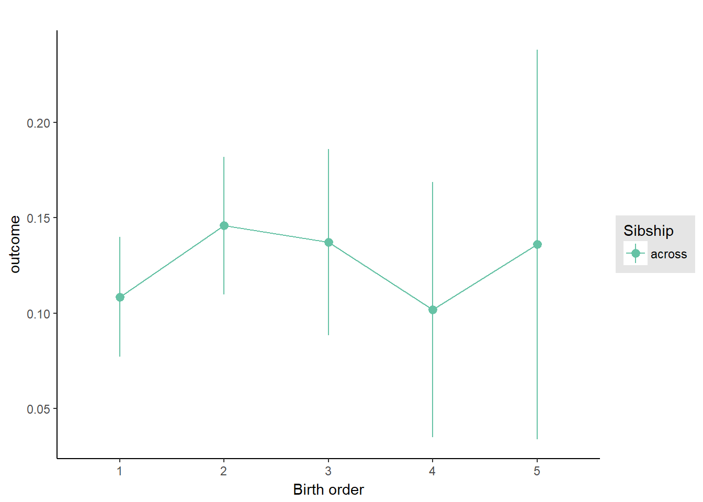
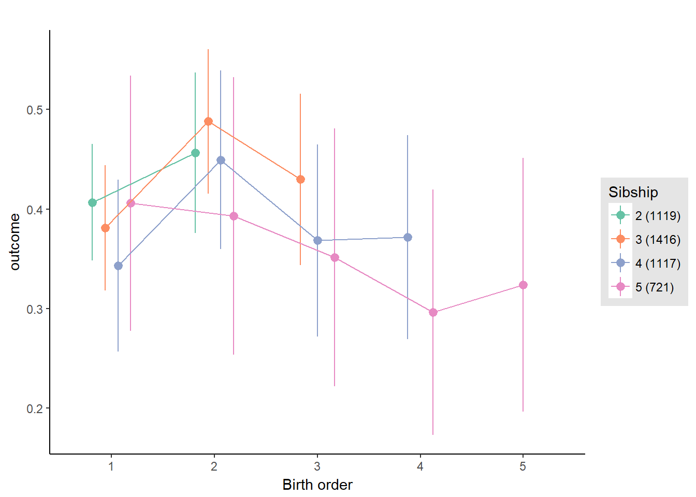
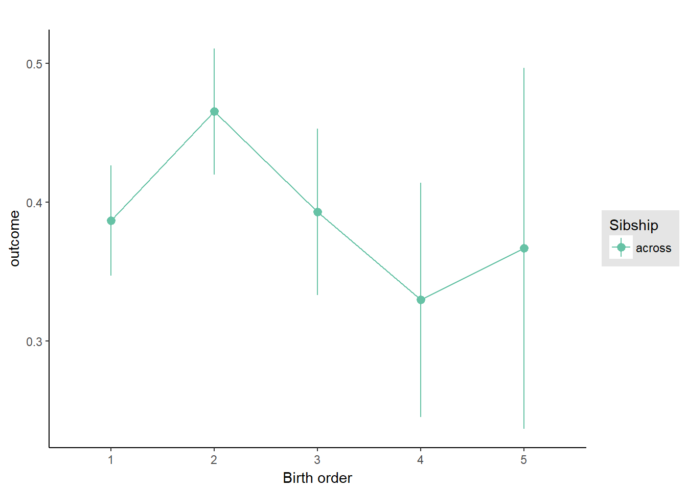
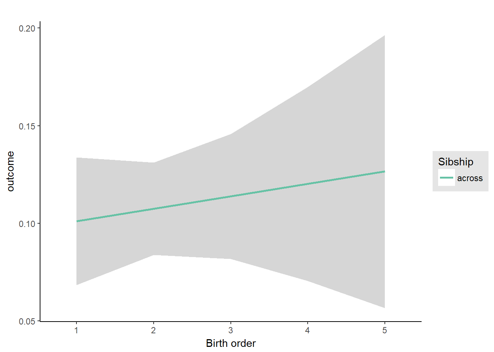
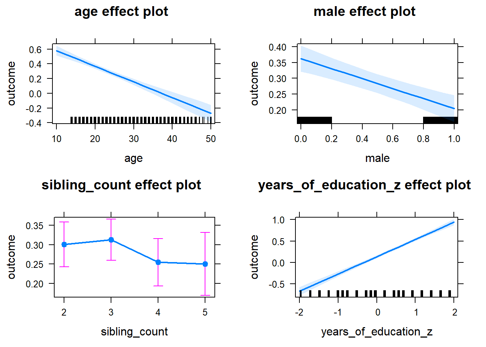
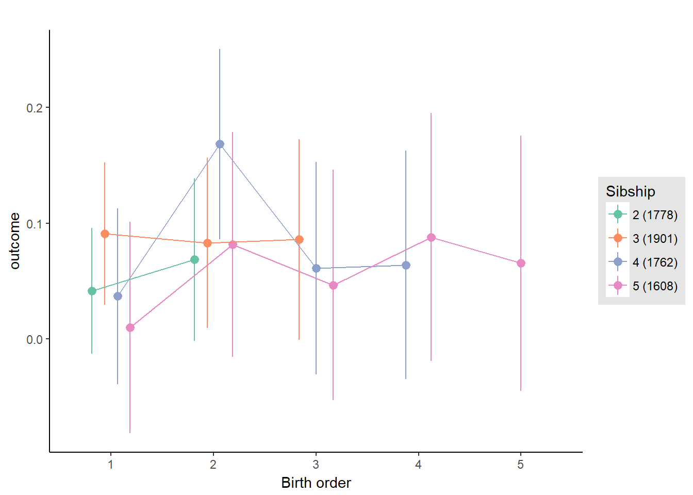
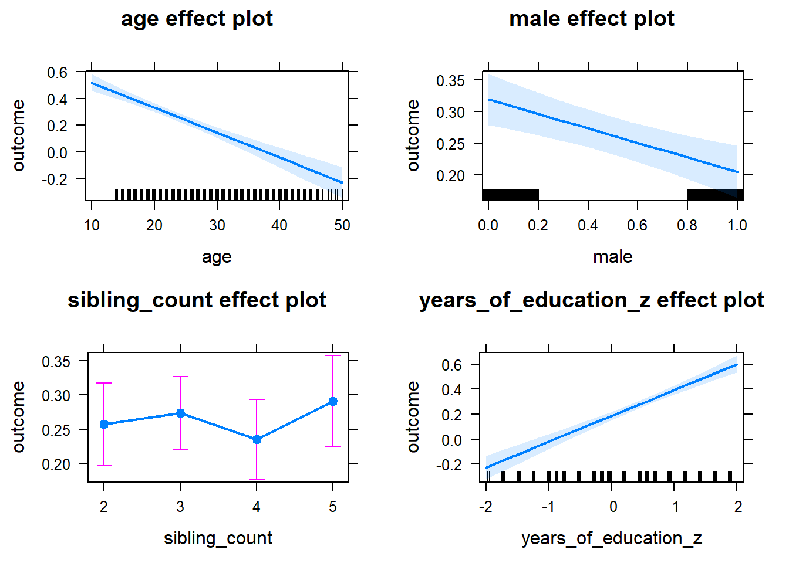

Birth Order Effects
Helper
source("0_helpers.R")## Warning: package 'rmarkdown' was built under R version 3.4.3## Warning: package 'knitr' was built under R version 3.4.3##
## Attaching package: 'formr'## The following object is masked from 'package:rmarkdown':
##
## word_document## Warning: package 'lubridate' was built under R version 3.4.3##
## Attaching package: 'lubridate'## The following object is masked from 'package:base':
##
## date## Warning: package 'stringr' was built under R version 3.4.3## Loading required package: carData## lattice theme set by effectsTheme()
## See ?effectsTheme for details.##
## Attaching package: 'data.table'## The following objects are masked from 'package:lubridate':
##
## hour, isoweek, mday, minute, month, quarter, second, wday, week, yday, year## The following objects are masked from 'package:formr':
##
## first, last## Loading required package: Matrix##
## Attaching package: 'lmerTest'## The following object is masked from 'package:lme4':
##
## lmer## The following object is masked from 'package:stats':
##
## step##
## Attaching package: 'cowplot'## The following object is masked from 'package:ggplot2':
##
## ggsave## Warning: package 'haven' was built under R version 3.4.3##
## Attaching package: 'psych'## The following objects are masked from 'package:ggplot2':
##
## %+%, alpha## This is lavaan 0.5-23.1097## lavaan is BETA software! Please report any bugs.##
## Attaching package: 'lavaan'## The following object is masked from 'package:psych':
##
## cor2cov## Loading required package: lattice## Loading required package: survival## Loading required package: Formula##
## Attaching package: 'Hmisc'## The following object is masked from 'package:psych':
##
## describe## The following objects are masked from 'package:base':
##
## format.pval, round.POSIXt, trunc.POSIXt, units## Warning: package 'tidyr' was built under R version 3.4.3##
## Attaching package: 'tidyr'## The following object is masked from 'package:Matrix':
##
## expand##
## Attaching package: 'dplyr'## The following objects are masked from 'package:Hmisc':
##
## combine, src, summarize## The following objects are masked from 'package:data.table':
##
## between, first, last## The following objects are masked from 'package:lubridate':
##
## intersect, setdiff, union## The following objects are masked from 'package:formr':
##
## first, last## The following objects are masked from 'package:stats':
##
## filter, lag## The following objects are masked from 'package:base':
##
## intersect, setdiff, setequal, union## Warning: package 'coefplot' was built under R version 3.4.3## Warning: package 'sjPlot' was built under R version 3.4.4##
## Attaching package: 'sjPlot'## The following objects are masked from 'package:cowplot':
##
## plot_grid, save_plotopts_chunk$set(warning = FALSE)Load data
birthorder = readRDS("data/alldata_birthorder.rds")Data preparations
# For analyses we want to clean the dataset and get rid of all uninteresting data
birthorder = birthorder %>%
filter(!is.na(pidlink)) %>% # no individuals who are only known from the pregnancy file
filter(is.na(lifebirths) | lifebirths == 2) %>% # remove 7 and 2 individuals who are known as stillbirth or miscarriage but still have PID
select(-lifebirths) %>%
filter(!is.na(mother_pidlink)) %>%
select(-father_pidlink) %>%
filter(is.na(any_multiple_birth) | any_multiple_birth != 1) %>% # remove families with twins/triplets/..
filter(!is.na(birthorder_naive)) %>%
select(-starts_with("age_"), -wave, -any_multiple_birth, -multiple_birth) %>%
mutate(money_spent_smoking_log = if_else(is.na(money_spent_smoking_log) & ever_smoked == 0, 0, money_spent_smoking_log),
amount = if_else(is.na(amount) & ever_smoked == 0, 0, amount),
amount_still_smokers = if_else(is.na(amount_still_smokers) & still_smoking == 0, 0, amount_still_smokers),
birthyear = lubridate::year(birthdate))
# recode Factor Variable as Dummy Variable
birthorder = left_join(birthorder,
birthorder %>%
filter(!is.na(Category)) %>%
mutate(var = 1) %>%
select(pidlink, Category, var) %>%
spread(Category, var, fill = 0, sep = "_"), by = "pidlink") %>%
select(-Category)
# recode Factor Variable as Dummy Variable
birthorder = left_join(birthorder,
birthorder %>%
filter(!is.na(Sector)) %>%
mutate(var = 1) %>%
select(pidlink, Sector, var) %>%
spread(Sector, var, fill = 0, sep = "_"), by = "pidlink") %>%
select(-Sector)
### Variables
birthorder = birthorder %>%
mutate(
# center variables that are used for analysis
g_factor_2015_old = scale(g_factor_2015_old),
g_factor_2015_young = scale(g_factor_2015_young),
g_factor_2007_old = scale(g_factor_2007_old),
g_factor_2007_young = scale(g_factor_2007_young),
raven_2015_old = scale(raven_2015_old),
math_2015_old = scale(math_2015_old),
count_backwards = scale(count_backwards),
raven_2015_young = scale(raven_2015_young),
math_2015_young = scale(math_2015_young),
words_remembered_avg = scale(words_remembered_avg),
words_immediate = scale(words_immediate),
words_delayed = scale(words_delayed),
adaptive_numbering = scale(adaptive_numbering),
raven_2007_old = scale(raven_2007_old),
math_2007_old = scale(math_2007_old),
raven_2007_young = scale(raven_2007_young),
math_2007_young = scale(math_2007_young),
riskA = scale(riskA),
riskB = scale(riskB),
years_of_education_z = scale(years_of_education),
Total_score_highest_z = scale(Total_score_highest),
wage_last_month_z = scale(wage_last_month_log),
wage_last_year_z = scale(wage_last_year_log),
big5_ext = scale(big5_ext),
big5_con = scale(big5_con),
big5_agree = scale(big5_agree),
big5_open = scale(big5_open),
big5_neu = scale(big5_neu),
attended_school = as.integer(attended_school),
attended_school = ifelse(attended_school == 1, 0,
ifelse(attended_school == 2, 1, NA)))
qplot(birthorder$male)## `stat_bin()` using `bins = 30`. Pick better value with `binwidth`.
qplot(birthorder$g_factor_2015_old)## `stat_bin()` using `bins = 30`. Pick better value with `binwidth`.
qplot(birthorder$g_factor_2015_old)## `stat_bin()` using `bins = 30`. Pick better value with `binwidth`.
### Birthorder and Sibling Count
birthorder = birthorder %>%
mutate(
# birthorder as factors with levels of 1, 2, 3, 4, 5,
birthorder_naive_factor = as.character(birthorder_naive),
birthorder_naive_factor = ifelse(birthorder_naive > 5, NA,
birthorder_naive_factor),
birthorder_naive_factor = factor(birthorder_naive_factor,
levels = c("1","2","3","4","5")),
sibling_count_naive_factor = as.character(sibling_count_naive),
sibling_count_naive_factor = ifelse(sibling_count_naive > 5, NA,
sibling_count_naive_factor),
sibling_count_naive_factor = factor(sibling_count_naive_factor,
levels = c("2","3","4","5")),
birthorder_uterus_alive_factor = as.character(birthorder_uterus_alive),
birthorder_uterus_alive_factor = ifelse(birthorder_uterus_alive > 5, NA,
birthorder_uterus_alive_factor),
birthorder_uterus_alive_factor = factor(birthorder_uterus_alive_factor,
levels = c("1","2","3","4","5")),
sibling_count_uterus_alive_factor = as.character(sibling_count_uterus_alive),
sibling_count_uterus_alive_factor = ifelse(sibling_count_uterus_alive > 5, NA,
sibling_count_uterus_alive_factor),
sibling_count_uterus_alive_factor = factor(sibling_count_uterus_alive_factor,
levels = c("2","3","4","5")),
birthorder_uterus_preg_factor = as.character(birthorder_uterus_preg),
birthorder_uterus_preg_factor = ifelse(birthorder_uterus_preg > 5, NA,
birthorder_uterus_preg_factor),
birthorder_uterus_preg_factor = factor(birthorder_uterus_preg_factor,
levels = c("1","2","3","4","5")),
sibling_count_uterus_preg_factor = as.character(sibling_count_uterus_preg),
sibling_count_uterus_preg_factor = ifelse(sibling_count_uterus_preg > 5, NA,
sibling_count_uterus_preg_factor),
sibling_count_uterus_preg_factor = factor(sibling_count_uterus_preg_factor,
levels = c("2","3","4","5")),
birthorder_genes_factor = as.character(birthorder_genes),
birthorder_genes_factor = ifelse(birthorder_genes >5 , NA, birthorder_genes_factor),
birthorder_genes_factor = factor(birthorder_genes_factor,
levels = c("1","2","3","4","5")),
sibling_count_genes_factor = as.character(sibling_count_genes),
sibling_count_genes_factor = ifelse(sibling_count_genes >5 , NA,
sibling_count_genes_factor),
sibling_count_genes_factor = factor(sibling_count_genes_factor,
levels = c("2","3","4","5")),
# interaction birthorder * siblingcout for each birthorder
count_birthorder_naive =
factor(str_replace(as.character(interaction(birthorder_naive_factor, sibling_count_naive_factor)),
"\\.", "/"),
levels = c("1/2","2/2", "1/3", "2/3",
"3/3", "1/4", "2/4", "3/4", "4/4",
"1/5", "2/5", "3/5", "4/5",
"5/5")),
count_birthorder_uterus_alive =
factor(str_replace(as.character(interaction(birthorder_uterus_alive_factor, sibling_count_uterus_alive_factor)),
"\\.", "/"),
levels = c("1/2","2/2", "1/3", "2/3",
"3/3", "1/4", "2/4", "3/4", "4/4",
"1/5", "2/5", "3/5", "4/5", "5/5")),
count_birthorder_uterus_preg =
factor(str_replace(as.character(interaction(birthorder_uterus_preg_factor, sibling_count_uterus_preg_factor)),
"\\.", "/"),
levels = c("1/2","2/2", "1/3", "2/3",
"3/3", "1/4", "2/4", "3/4", "4/4",
"1/5", "2/5", "3/5", "4/5", "5/5")),
count_birthorder_genes =
factor(str_replace(as.character(interaction(birthorder_genes_factor, sibling_count_genes_factor)), "\\.", "/"),
levels = c("1/2","2/2", "1/3", "2/3",
"3/3", "1/4", "2/4", "3/4", "4/4",
"1/5", "2/5", "3/5", "4/5", "5/5")))
birthorder <- birthorder %>%
mutate(sibling_count = sibling_count_naive_factor,
birth_order_nonlinear = birthorder_naive_factor,
birth_order = birthorder_naive,
count_birth_order = count_birthorder_naive)Correlation Years of Education and Intelligence
cor.test(birthorder$g_factor_2015_old, birthorder$years_of_education_z)| Test statistic | df | P value | Alternative hypothesis | cor |
|---|---|---|---|---|
| 67.39 | 14435 | 0 * * * | two.sided | 0.4892 |
ggplot(birthorder, aes(years_of_education_z, g_factor_2015_old)) +
geom_jitter() +
geom_smooth(stat = "smooth")## `geom_smooth()` using method = 'gam'
Intelligence
g-factor 2015 old
birthorder <- birthorder %>% mutate(outcome = g_factor_2015_old)
model = lmer(outcome ~ birth_order + age + male + sibling_count + years_of_education_z +
(1 | mother_pidlink),
data = birthorder)
compare_birthorder_specs(model)Naive birth order
outcome_naive_m1 <- update(m2_birthorder_linear, data = birthorder %>%
mutate(sibling_count = sibling_count_naive_factor,
birth_order_nonlinear = birthorder_naive_factor,
birth_order = birthorder_naive,
count_birth_order = count_birthorder_naive) %>%
filter(sibling_count != "1"))
compare_models_markdown(outcome_naive_m1)Basic Model
Model Summary
m1_covariates_only <- update(m2_birthorder_linear, formula = . ~ . - birth_order)
tidy(m1_covariates_only, conf.int = T)| term | estimate | std.error | statistic | conf.low | conf.high | group |
|---|---|---|---|---|---|---|
| (Intercept) | 0.8188 | 0.03789 | 21.61 | 0.7446 | 0.8931 | fixed |
| age | -0.02794 | 0.001012 | -27.59 | -0.02992 | -0.02595 | fixed |
| male | 0.0481 | 0.01966 | 2.447 | 0.009575 | 0.08662 | fixed |
| sibling_count3 | -0.006281 | 0.02983 | -0.2105 | -0.06475 | 0.05219 | fixed |
| sibling_count4 | -0.02653 | 0.0309 | -0.8585 | -0.08709 | 0.03404 | fixed |
| sibling_count5 | -0.02421 | 0.03204 | -0.7558 | -0.08701 | 0.03858 | fixed |
| years_of_education_z | 0.488 | 0.01139 | 42.83 | 0.4657 | 0.5103 | fixed |
| sd_(Intercept).mother_pidlink | 0.4152 | NA | NA | NA | NA | mother_pidlink |
| sd_Observation.Residual | 0.7222 | NA | NA | NA | NA | Residual |
Coefficient Plot
plot(allEffects(m1_covariates_only))Add Birth Order Linear
Model Summary
tidy(m2_birthorder_linear, conf.int = T)| term | estimate | std.error | statistic | conf.low | conf.high | group |
|---|---|---|---|---|---|---|
| (Intercept) | 0.809 | 0.04141 | 19.53 | 0.7278 | 0.8901 | fixed |
| birth_order | 0.005634 | 0.009545 | 0.5902 | -0.01307 | 0.02434 | fixed |
| age | -0.02786 | 0.001021 | -27.3 | -0.02986 | -0.02586 | fixed |
| male | 0.04795 | 0.01966 | 2.439 | 0.009422 | 0.08648 | fixed |
| sibling_count3 | -0.008259 | 0.03002 | -0.2751 | -0.0671 | 0.05058 | fixed |
| sibling_count4 | -0.03132 | 0.03195 | -0.9803 | -0.09394 | 0.0313 | fixed |
| sibling_count5 | -0.03196 | 0.03462 | -0.9231 | -0.09982 | 0.0359 | fixed |
| years_of_education_z | 0.488 | 0.01139 | 42.82 | 0.4656 | 0.5103 | fixed |
| sd_(Intercept).mother_pidlink | 0.4151 | NA | NA | NA | NA | mother_pidlink |
| sd_Observation.Residual | 0.7223 | NA | NA | NA | NA | Residual |
Coefficient Plot
plot_birthorder2(m2_birthorder_linear, separate = FALSE, ylimits = ylimits)
Add Birth Order Factor
Model Summary
m3_birthorder_nonlinear = update(m1_covariates_only, formula = . ~ . + birth_order_nonlinear)
tidy(m3_birthorder_nonlinear, conf.int = T)| term | estimate | std.error | statistic | conf.low | conf.high | group |
|---|---|---|---|---|---|---|
| (Intercept) | 0.8041 | 0.03916 | 20.54 | 0.7274 | 0.8808 | fixed |
| age | -0.0279 | 0.001021 | -27.32 | -0.0299 | -0.02589 | fixed |
| male | 0.04777 | 0.01966 | 2.43 | 0.009243 | 0.0863 | fixed |
| sibling_count3 | -0.01052 | 0.03041 | -0.3459 | -0.07012 | 0.04908 | fixed |
| sibling_count4 | -0.0279 | 0.0324 | -0.8612 | -0.09141 | 0.0356 | fixed |
| sibling_count5 | -0.02762 | 0.03485 | -0.7925 | -0.09592 | 0.04068 | fixed |
| years_of_education_z | 0.4883 | 0.0114 | 42.82 | 0.466 | 0.5107 | fixed |
| birth_order_nonlinear2 | 0.03742 | 0.02286 | 1.637 | -0.007378 | 0.08221 | fixed |
| birth_order_nonlinear3 | 0.02873 | 0.02912 | 0.9866 | -0.02834 | 0.0858 | fixed |
| birth_order_nonlinear4 | -0.006661 | 0.03787 | -0.1759 | -0.08088 | 0.06755 | fixed |
| birth_order_nonlinear5 | 0.02747 | 0.05484 | 0.5009 | -0.08001 | 0.135 | fixed |
| sd_(Intercept).mother_pidlink | 0.4151 | NA | NA | NA | NA | mother_pidlink |
| sd_Observation.Residual | 0.7223 | NA | NA | NA | NA | Residual |
Coefficient Plot
plot_birthorder(m3_birthorder_nonlinear, separate = FALSE, ylimits = ylimits)
Add Interaction
Model Summary
m4_interaction = update(m3_birthorder_nonlinear, formula = . ~ . - birth_order_nonlinear - sibling_count + count_birth_order)
tidy(m4_interaction, conf.int = T)| term | estimate | std.error | statistic | conf.low | conf.high | group |
|---|---|---|---|---|---|---|
| (Intercept) | 0.8242 | 0.04062 | 20.29 | 0.7446 | 0.9038 | fixed |
| age | -0.02781 | 0.001022 | -27.22 | -0.02981 | -0.02581 | fixed |
| male | 0.04824 | 0.01966 | 2.454 | 0.009711 | 0.08676 | fixed |
| years_of_education_z | 0.4889 | 0.0114 | 42.88 | 0.4665 | 0.5112 | fixed |
| count_birth_order2/2 | -0.02518 | 0.03925 | -0.6414 | -0.1021 | 0.05176 | fixed |
| count_birth_order1/3 | -0.0262 | 0.03837 | -0.6828 | -0.1014 | 0.04901 | fixed |
| count_birth_order2/3 | -0.007866 | 0.04248 | -0.1852 | -0.09112 | 0.07539 | fixed |
| count_birth_order3/3 | -0.002663 | 0.04736 | -0.05623 | -0.09549 | 0.09017 | fixed |
| count_birth_order1/4 | -0.05732 | 0.04369 | -1.312 | -0.143 | 0.02832 | fixed |
| count_birth_order2/4 | 0.03796 | 0.04596 | 0.8259 | -0.05212 | 0.128 | fixed |
| count_birth_order3/4 | -0.05371 | 0.04938 | -1.087 | -0.1505 | 0.04309 | fixed |
| count_birth_order4/4 | -0.08491 | 0.05187 | -1.637 | -0.1866 | 0.01675 | fixed |
| count_birth_order1/5 | -0.1219 | 0.04902 | -2.487 | -0.218 | -0.02583 | fixed |
| count_birth_order2/5 | 0.01086 | 0.05128 | 0.2118 | -0.08965 | 0.1114 | fixed |
| count_birth_order3/5 | 0.01204 | 0.05237 | 0.2298 | -0.09061 | 0.1147 | fixed |
| count_birth_order4/5 | -0.02447 | 0.05525 | -0.4428 | -0.1328 | 0.08382 | fixed |
| count_birth_order5/5 | -0.02121 | 0.05655 | -0.3751 | -0.132 | 0.08962 | fixed |
| sd_(Intercept).mother_pidlink | 0.4153 | NA | NA | NA | NA | mother_pidlink |
| sd_Observation.Residual | 0.7219 | NA | NA | NA | NA | Residual |
Coefficient Plot
plot_birthorder(m4_interaction, ylimits = ylimits)
Model Comparison
###### Model 1 - Model 2
anova(m1_covariates_only, m2_birthorder_linear, m3_birthorder_nonlinear, m4_interaction)## refitting model(s) with ML (instead of REML)| Df | AIC | BIC | logLik | deviance | Chisq | Chi Df | Pr(>Chisq) |
|---|---|---|---|---|---|---|---|
| 9 | 16678 | 16739 | -8330 | 16660 | NA | NA | NA |
| 10 | 16679 | 16748 | -8330 | 16659 | 0.3489 | 1 | 0.5547 |
| 13 | 16682 | 16771 | -8328 | 16656 | 3.184 | 3 | 0.3641 |
| 19 | 16684 | 16813 | -8323 | 16646 | 10.49 | 6 | 0.1053 |
Maternal birth order
outcome_uterus_m1 <- update(m2_birthorder_linear, data = birthorder %>%
mutate(sibling_count = sibling_count_uterus_alive_factor,
birth_order_nonlinear = birthorder_uterus_alive_factor,
birth_order = birthorder_uterus_alive,
count_birth_order = count_birthorder_uterus_alive) %>%
filter(sibling_count != "1"))
compare_models_markdown(outcome_uterus_m1)Basic Model
Model Summary
m1_covariates_only <- update(m2_birthorder_linear, formula = . ~ . - birth_order)
tidy(m1_covariates_only, conf.int = T)| term | estimate | std.error | statistic | conf.low | conf.high | group |
|---|---|---|---|---|---|---|
| (Intercept) | 0.8381 | 0.04713 | 17.78 | 0.7457 | 0.9304 | fixed |
| age | -0.02422 | 0.001829 | -13.24 | -0.0278 | -0.02063 | fixed |
| male | -0.01991 | 0.02379 | -0.8368 | -0.06654 | 0.02672 | fixed |
| sibling_count3 | 0.003361 | 0.03414 | 0.09844 | -0.06356 | 0.07028 | fixed |
| sibling_count4 | -0.04069 | 0.03725 | -1.092 | -0.1137 | 0.03231 | fixed |
| sibling_count5 | -0.07161 | 0.04283 | -1.672 | -0.1556 | 0.01234 | fixed |
| years_of_education_z | 0.4406 | 0.01676 | 26.29 | 0.4078 | 0.4735 | fixed |
| sd_(Intercept).mother_pidlink | 0.4171 | NA | NA | NA | NA | mother_pidlink |
| sd_Observation.Residual | 0.6909 | NA | NA | NA | NA | Residual |
Coefficient Plot
plot(allEffects(m1_covariates_only))Add Birth Order Linear
Model Summary
tidy(m2_birthorder_linear, conf.int = T)| term | estimate | std.error | statistic | conf.low | conf.high | group |
|---|---|---|---|---|---|---|
| (Intercept) | 0.8333 | 0.05247 | 15.88 | 0.7305 | 0.9361 | fixed |
| birth_order | 0.002535 | 0.01229 | 0.2062 | -0.02156 | 0.02663 | fixed |
| age | -0.02415 | 0.001861 | -12.98 | -0.02779 | -0.0205 | fixed |
| male | -0.02003 | 0.0238 | -0.8415 | -0.06668 | 0.02662 | fixed |
| sibling_count3 | 0.00216 | 0.03464 | 0.06237 | -0.06573 | 0.07006 | fixed |
| sibling_count4 | -0.04348 | 0.03963 | -1.097 | -0.1211 | 0.0342 | fixed |
| sibling_count5 | -0.07624 | 0.04838 | -1.576 | -0.1711 | 0.01858 | fixed |
| years_of_education_z | 0.4405 | 0.01677 | 26.26 | 0.4076 | 0.4734 | fixed |
| sd_(Intercept).mother_pidlink | 0.417 | NA | NA | NA | NA | mother_pidlink |
| sd_Observation.Residual | 0.6911 | NA | NA | NA | NA | Residual |
Coefficient Plot
plot_birthorder2(m2_birthorder_linear, separate = FALSE, ylimits = ylimits)
Add Birth Order Factor
Model Summary
m3_birthorder_nonlinear = update(m1_covariates_only, formula = . ~ . + birth_order_nonlinear)
tidy(m3_birthorder_nonlinear, conf.int = T)| term | estimate | std.error | statistic | conf.low | conf.high | group |
|---|---|---|---|---|---|---|
| (Intercept) | 0.8173 | 0.04877 | 16.76 | 0.7217 | 0.9129 | fixed |
| age | -0.0245 | 0.001865 | -13.14 | -0.02815 | -0.02084 | fixed |
| male | -0.01874 | 0.02378 | -0.788 | -0.06536 | 0.02787 | fixed |
| sibling_count3 | -0.0002836 | 0.03509 | -0.008082 | -0.06906 | 0.06849 | fixed |
| sibling_count4 | -0.03689 | 0.04014 | -0.919 | -0.1156 | 0.04178 | fixed |
| sibling_count5 | -0.05563 | 0.04913 | -1.132 | -0.1519 | 0.04067 | fixed |
| years_of_education_z | 0.4436 | 0.01681 | 26.4 | 0.4107 | 0.4765 | fixed |
| birth_order_nonlinear2 | 0.07696 | 0.02764 | 2.785 | 0.02279 | 0.1311 | fixed |
| birth_order_nonlinear3 | 0.01869 | 0.03531 | 0.5294 | -0.05052 | 0.0879 | fixed |
| birth_order_nonlinear4 | -0.01215 | 0.04762 | -0.2551 | -0.1055 | 0.08119 | fixed |
| birth_order_nonlinear5 | -0.01715 | 0.07346 | -0.2334 | -0.1611 | 0.1268 | fixed |
| sd_(Intercept).mother_pidlink | 0.4187 | NA | NA | NA | NA | mother_pidlink |
| sd_Observation.Residual | 0.6896 | NA | NA | NA | NA | Residual |
Coefficient Plot
plot_birthorder(m3_birthorder_nonlinear, separate = FALSE, ylimits = ylimits)Add Interaction
Model Summary
m4_interaction = update(m3_birthorder_nonlinear, formula = . ~ . - birth_order_nonlinear - sibling_count + count_birth_order)
tidy(m4_interaction, conf.int = T)| term | estimate | std.error | statistic | conf.low | conf.high | group |
|---|---|---|---|---|---|---|
| (Intercept) | 0.8248 | 0.05027 | 16.41 | 0.7263 | 0.9234 | fixed |
| age | -0.02444 | 0.001866 | -13.1 | -0.0281 | -0.02078 | fixed |
| male | -0.01882 | 0.02381 | -0.7902 | -0.06548 | 0.02785 | fixed |
| years_of_education_z | 0.4443 | 0.01683 | 26.41 | 0.4113 | 0.4773 | fixed |
| count_birth_order2/2 | 0.04956 | 0.04796 | 1.034 | -0.04443 | 0.1436 | fixed |
| count_birth_order1/3 | -0.02572 | 0.04366 | -0.589 | -0.1113 | 0.05986 | fixed |
| count_birth_order2/3 | 0.08129 | 0.04727 | 1.719 | -0.01137 | 0.1739 | fixed |
| count_birth_order3/3 | 0.02305 | 0.05269 | 0.4374 | -0.08023 | 0.1263 | fixed |
| count_birth_order1/4 | -0.06361 | 0.05359 | -1.187 | -0.1686 | 0.04143 | fixed |
| count_birth_order2/4 | 0.04257 | 0.05488 | 0.7758 | -0.06499 | 0.1501 | fixed |
| count_birth_order3/4 | -0.03834 | 0.05757 | -0.666 | -0.1512 | 0.0745 | fixed |
| count_birth_order4/4 | -0.03505 | 0.05986 | -0.5855 | -0.1524 | 0.08228 | fixed |
| count_birth_order1/5 | -0.0009492 | 0.07215 | -0.01316 | -0.1424 | 0.1405 | fixed |
| count_birth_order2/5 | -0.01367 | 0.07732 | -0.1768 | -0.1652 | 0.1379 | fixed |
| count_birth_order3/5 | -0.0553 | 0.0726 | -0.7617 | -0.1976 | 0.087 | fixed |
| count_birth_order4/5 | -0.1104 | 0.0696 | -1.586 | -0.2468 | 0.02605 | fixed |
| count_birth_order5/5 | -0.08261 | 0.07136 | -1.158 | -0.2225 | 0.05726 | fixed |
| sd_(Intercept).mother_pidlink | 0.417 | NA | NA | NA | NA | mother_pidlink |
| sd_Observation.Residual | 0.6907 | NA | NA | NA | NA | Residual |
Coefficient Plot
plot_birthorder(m4_interaction, ylimits = ylimits)
Model Comparison
###### Model 1 - Model 2
anova(m1_covariates_only, m2_birthorder_linear, m3_birthorder_nonlinear, m4_interaction)## refitting model(s) with ML (instead of REML)| Df | AIC | BIC | logLik | deviance | Chisq | Chi Df | Pr(>Chisq) |
|---|---|---|---|---|---|---|---|
| 9 | 10431 | 10489 | -5207 | 10413 | NA | NA | NA |
| 10 | 10433 | 10497 | -5207 | 10413 | 0.04278 | 1 | 0.8361 |
| 13 | 10430 | 10513 | -5202 | 10404 | 9.158 | 3 | 0.02726 |
| 19 | 10439 | 10560 | -5201 | 10401 | 2.925 | 6 | 0.8182 |
Maternal pregnancy order
outcome_preg_m1 <- update(m2_birthorder_linear, data = birthorder %>%
mutate(sibling_count = sibling_count_uterus_preg_factor,
birth_order_nonlinear = birthorder_uterus_preg_factor,
birth_order = birthorder_uterus_preg,
count_birth_order = count_birthorder_uterus_preg
) %>%
filter(sibling_count != "1"))
compare_models_markdown(outcome_preg_m1)Basic Model
Model Summary
m1_covariates_only <- update(m2_birthorder_linear, formula = . ~ . - birth_order)
tidy(m1_covariates_only, conf.int = T)| term | estimate | std.error | statistic | conf.low | conf.high | group |
|---|---|---|---|---|---|---|
| (Intercept) | 0.8487 | 0.04918 | 17.26 | 0.7523 | 0.9451 | fixed |
| age | -0.02525 | 0.001895 | -13.33 | -0.02896 | -0.02154 | fixed |
| male | -0.01658 | 0.02461 | -0.6738 | -0.06482 | 0.03166 | fixed |
| sibling_count3 | 0.0002606 | 0.03666 | 0.00711 | -0.07158 | 0.0721 | fixed |
| sibling_count4 | -0.01737 | 0.03907 | -0.4445 | -0.09394 | 0.05921 | fixed |
| sibling_count5 | -0.0175 | 0.042 | -0.4167 | -0.09982 | 0.06482 | fixed |
| years_of_education_z | 0.4456 | 0.01735 | 25.69 | 0.4116 | 0.4796 | fixed |
| sd_(Intercept).mother_pidlink | 0.4096 | NA | NA | NA | NA | mother_pidlink |
| sd_Observation.Residual | 0.6909 | NA | NA | NA | NA | Residual |
Coefficient Plot
plot(allEffects(m1_covariates_only))
Add Birth Order Linear
Model Summary
tidy(m2_birthorder_linear, conf.int = T)| term | estimate | std.error | statistic | conf.low | conf.high | group |
|---|---|---|---|---|---|---|
| (Intercept) | 0.8613 | 0.05445 | 15.82 | 0.7546 | 0.968 | fixed |
| birth_order | -0.006671 | 0.01232 | -0.5416 | -0.03081 | 0.01747 | fixed |
| age | -0.02544 | 0.001927 | -13.2 | -0.02922 | -0.02166 | fixed |
| male | -0.01634 | 0.02462 | -0.6636 | -0.06459 | 0.03191 | fixed |
| sibling_count3 | 0.00344 | 0.03713 | 0.09264 | -0.06933 | 0.07621 | fixed |
| sibling_count4 | -0.01027 | 0.04122 | -0.2491 | -0.09105 | 0.07051 | fixed |
| sibling_count5 | -0.006275 | 0.04685 | -0.1339 | -0.09809 | 0.08554 | fixed |
| years_of_education_z | 0.4459 | 0.01736 | 25.69 | 0.4118 | 0.4799 | fixed |
| sd_(Intercept).mother_pidlink | 0.4098 | NA | NA | NA | NA | mother_pidlink |
| sd_Observation.Residual | 0.6909 | NA | NA | NA | NA | Residual |
Coefficient Plot
plot_birthorder2(m2_birthorder_linear, separate = FALSE, ylimits = ylimits)
Add Birth Order Factor
Model Summary
m3_birthorder_nonlinear = update(m1_covariates_only, formula = . ~ . + birth_order_nonlinear)
tidy(m3_birthorder_nonlinear, conf.int = T)| term | estimate | std.error | statistic | conf.low | conf.high | group |
|---|---|---|---|---|---|---|
| (Intercept) | 0.8331 | 0.05087 | 16.38 | 0.7334 | 0.9328 | fixed |
| age | -0.02582 | 0.001931 | -13.37 | -0.02961 | -0.02204 | fixed |
| male | -0.01466 | 0.02459 | -0.5962 | -0.06285 | 0.03353 | fixed |
| sibling_count3 | -0.0004947 | 0.03759 | -0.01316 | -0.07417 | 0.07318 | fixed |
| sibling_count4 | -0.002021 | 0.04171 | -0.04846 | -0.08377 | 0.07973 | fixed |
| sibling_count5 | 0.009007 | 0.04725 | 0.1906 | -0.08361 | 0.1016 | fixed |
| years_of_education_z | 0.4488 | 0.01738 | 25.82 | 0.4147 | 0.4828 | fixed |
| birth_order_nonlinear2 | 0.07838 | 0.02879 | 2.722 | 0.02195 | 0.1348 | fixed |
| birth_order_nonlinear3 | 0.006127 | 0.0364 | 0.1683 | -0.06521 | 0.07746 | fixed |
| birth_order_nonlinear4 | -0.05729 | 0.04831 | -1.186 | -0.152 | 0.03739 | fixed |
| birth_order_nonlinear5 | -0.02012 | 0.07017 | -0.2867 | -0.1576 | 0.1174 | fixed |
| sd_(Intercept).mother_pidlink | 0.4122 | NA | NA | NA | NA | mother_pidlink |
| sd_Observation.Residual | 0.6888 | NA | NA | NA | NA | Residual |
Coefficient Plot
plot_birthorder(m3_birthorder_nonlinear, separate = FALSE, ylimits = ylimits)
Add Interaction
Model Summary
m4_interaction = update(m3_birthorder_nonlinear, formula = . ~ . - birth_order_nonlinear - sibling_count + count_birth_order)
tidy(m4_interaction, conf.int = T)| term | estimate | std.error | statistic | conf.low | conf.high | group |
|---|---|---|---|---|---|---|
| (Intercept) | 0.8294 | 0.05265 | 15.75 | 0.7262 | 0.9326 | fixed |
| age | -0.0258 | 0.001933 | -13.35 | -0.02959 | -0.02201 | fixed |
| male | -0.01583 | 0.02461 | -0.6433 | -0.06406 | 0.0324 | fixed |
| years_of_education_z | 0.4479 | 0.0174 | 25.73 | 0.4138 | 0.482 | fixed |
| count_birth_order2/2 | 0.09032 | 0.05248 | 1.721 | -0.01253 | 0.1932 | fixed |
| count_birth_order1/3 | 0.007362 | 0.04706 | 0.1564 | -0.08487 | 0.0996 | fixed |
| count_birth_order2/3 | 0.06344 | 0.05066 | 1.252 | -0.03586 | 0.1627 | fixed |
| count_birth_order3/3 | 0.02865 | 0.05669 | 0.5053 | -0.08247 | 0.1398 | fixed |
| count_birth_order1/4 | -0.03878 | 0.05591 | -0.6936 | -0.1484 | 0.0708 | fixed |
| count_birth_order2/4 | 0.1157 | 0.05654 | 2.046 | 0.004871 | 0.2265 | fixed |
| count_birth_order3/4 | 0.01334 | 0.06133 | 0.2175 | -0.1069 | 0.1336 | fixed |
| count_birth_order4/4 | -0.04788 | 0.06327 | -0.7567 | -0.1719 | 0.07612 | fixed |
| count_birth_order1/5 | 0.07959 | 0.06592 | 1.207 | -0.04962 | 0.2088 | fixed |
| count_birth_order2/5 | 0.05648 | 0.0704 | 0.8023 | -0.0815 | 0.1945 | fixed |
| count_birth_order3/5 | -0.0193 | 0.0684 | -0.2821 | -0.1534 | 0.1148 | fixed |
| count_birth_order4/5 | -0.05394 | 0.07038 | -0.7664 | -0.1919 | 0.084 | fixed |
| count_birth_order5/5 | -0.008334 | 0.07014 | -0.1188 | -0.1458 | 0.1291 | fixed |
| sd_(Intercept).mother_pidlink | 0.4124 | NA | NA | NA | NA | mother_pidlink |
| sd_Observation.Residual | 0.6888 | NA | NA | NA | NA | Residual |
Coefficient Plot
plot_birthorder(m4_interaction, ylimits = ylimits)Model Comparison
###### Model 1 - Model 2
anova(m1_covariates_only, m2_birthorder_linear, m3_birthorder_nonlinear, m4_interaction)## refitting model(s) with ML (instead of REML)| Df | AIC | BIC | logLik | deviance | Chisq | Chi Df | Pr(>Chisq) |
|---|---|---|---|---|---|---|---|
| 9 | 9659 | 9716 | -4821 | 9641 | NA | NA | NA |
| 10 | 9661 | 9724 | -4821 | 9641 | 0.2928 | 1 | 0.5885 |
| 13 | 9655 | 9737 | -4815 | 9629 | 11.65 | 3 | 0.008702 |
| 19 | 9663 | 9783 | -4812 | 9625 | 4.445 | 6 | 0.6167 |
Parental full sibling order
outcome_parental_m1 <- update(m2_birthorder_linear, data = birthorder %>%
mutate(sibling_count = sibling_count_genes_factor,
birth_order_nonlinear = birthorder_genes_factor,
birth_order = birthorder_genes,
count_birth_order = count_birthorder_genes
) %>%
filter(sibling_count != "1"))
compare_models_markdown(outcome_parental_m1)Basic Model
Model Summary
m1_covariates_only <- update(m2_birthorder_linear, formula = . ~ . - birth_order)
tidy(m1_covariates_only, conf.int = T)| term | estimate | std.error | statistic | conf.low | conf.high | group |
|---|---|---|---|---|---|---|
| (Intercept) | 0.8301 | 0.04667 | 17.79 | 0.7386 | 0.9216 | fixed |
| age | -0.02419 | 0.001815 | -13.33 | -0.02775 | -0.02063 | fixed |
| male | -0.0192 | 0.02377 | -0.8079 | -0.06579 | 0.02738 | fixed |
| sibling_count3 | 0.01979 | 0.03356 | 0.5897 | -0.04598 | 0.08556 | fixed |
| sibling_count4 | -0.03996 | 0.03678 | -1.087 | -0.112 | 0.03212 | fixed |
| sibling_count5 | -0.04898 | 0.04373 | -1.12 | -0.1347 | 0.03673 | fixed |
| years_of_education_z | 0.4334 | 0.01665 | 26.03 | 0.4008 | 0.466 | fixed |
| sd_(Intercept).mother_pidlink | 0.4119 | NA | NA | NA | NA | mother_pidlink |
| sd_Observation.Residual | 0.6908 | NA | NA | NA | NA | Residual |
Coefficient Plot
plot(allEffects(m1_covariates_only))Add Birth Order Linear
Model Summary
tidy(m2_birthorder_linear, conf.int = T)| term | estimate | std.error | statistic | conf.low | conf.high | group |
|---|---|---|---|---|---|---|
| (Intercept) | 0.8225 | 0.05217 | 15.77 | 0.7202 | 0.9248 | fixed |
| birth_order | 0.004039 | 0.01241 | 0.3255 | -0.02028 | 0.02836 | fixed |
| age | -0.02408 | 0.001846 | -13.05 | -0.0277 | -0.02046 | fixed |
| male | -0.01936 | 0.02378 | -0.8142 | -0.06596 | 0.02724 | fixed |
| sibling_count3 | 0.01787 | 0.03407 | 0.5244 | -0.04892 | 0.08465 | fixed |
| sibling_count4 | -0.04439 | 0.03922 | -1.132 | -0.1213 | 0.03247 | fixed |
| sibling_count5 | -0.05603 | 0.04881 | -1.148 | -0.1517 | 0.03964 | fixed |
| years_of_education_z | 0.4332 | 0.01667 | 25.99 | 0.4005 | 0.4658 | fixed |
| sd_(Intercept).mother_pidlink | 0.4118 | NA | NA | NA | NA | mother_pidlink |
| sd_Observation.Residual | 0.691 | NA | NA | NA | NA | Residual |
Coefficient Plot
plot_birthorder2(m2_birthorder_linear, separate = FALSE, ylimits = ylimits)Add Birth Order Factor
Model Summary
m3_birthorder_nonlinear = update(m1_covariates_only, formula = . ~ . + birth_order_nonlinear)
tidy(m3_birthorder_nonlinear, conf.int = T)| term | estimate | std.error | statistic | conf.low | conf.high | group |
|---|---|---|---|---|---|---|
| (Intercept) | 0.8083 | 0.04834 | 16.72 | 0.7136 | 0.9031 | fixed |
| age | -0.02445 | 0.00185 | -13.22 | -0.02808 | -0.02083 | fixed |
| male | -0.01847 | 0.02376 | -0.7774 | -0.06504 | 0.0281 | fixed |
| sibling_count3 | 0.01624 | 0.03454 | 0.4702 | -0.05145 | 0.08393 | fixed |
| sibling_count4 | -0.04127 | 0.03973 | -1.039 | -0.1191 | 0.03661 | fixed |
| sibling_count5 | -0.02933 | 0.04973 | -0.5898 | -0.1268 | 0.06814 | fixed |
| years_of_education_z | 0.4365 | 0.0167 | 26.13 | 0.4038 | 0.4692 | fixed |
| birth_order_nonlinear2 | 0.07807 | 0.02742 | 2.847 | 0.02432 | 0.1318 | fixed |
| birth_order_nonlinear3 | 0.0237 | 0.03512 | 0.6746 | -0.04515 | 0.09254 | fixed |
| birth_order_nonlinear4 | 0.008815 | 0.04833 | 0.1824 | -0.0859 | 0.1035 | fixed |
| birth_order_nonlinear5 | -0.06356 | 0.07868 | -0.8079 | -0.2178 | 0.09064 | fixed |
| sd_(Intercept).mother_pidlink | 0.4136 | NA | NA | NA | NA | mother_pidlink |
| sd_Observation.Residual | 0.6894 | NA | NA | NA | NA | Residual |
Coefficient Plot
plot_birthorder(m3_birthorder_nonlinear, separate = FALSE, ylimits = ylimits)Add Interaction
Model Summary
m4_interaction = update(m3_birthorder_nonlinear, formula = . ~ . - birth_order_nonlinear - sibling_count + count_birth_order)
tidy(m4_interaction, conf.int = T)| term | estimate | std.error | statistic | conf.low | conf.high | group |
|---|---|---|---|---|---|---|
| (Intercept) | 0.8162 | 0.04985 | 16.37 | 0.7185 | 0.9139 | fixed |
| age | -0.02444 | 0.001851 | -13.2 | -0.02807 | -0.02081 | fixed |
| male | -0.01852 | 0.02378 | -0.7787 | -0.06513 | 0.02809 | fixed |
| years_of_education_z | 0.4377 | 0.01672 | 26.17 | 0.4049 | 0.4705 | fixed |
| count_birth_order2/2 | 0.05254 | 0.04651 | 1.13 | -0.03862 | 0.1437 | fixed |
| count_birth_order1/3 | -0.01227 | 0.04298 | -0.2855 | -0.09652 | 0.07197 | fixed |
| count_birth_order2/3 | 0.103 | 0.04706 | 2.188 | 0.01073 | 0.1952 | fixed |
| count_birth_order3/3 | 0.04739 | 0.05161 | 0.9182 | -0.05377 | 0.1486 | fixed |
| count_birth_order1/4 | -0.06304 | 0.05351 | -1.178 | -0.1679 | 0.04185 | fixed |
| count_birth_order2/4 | 0.03365 | 0.05462 | 0.6161 | -0.0734 | 0.1407 | fixed |
| count_birth_order3/4 | -0.02957 | 0.05692 | -0.5194 | -0.1411 | 0.082 | fixed |
| count_birth_order4/4 | -0.02522 | 0.0597 | -0.4224 | -0.1422 | 0.09179 | fixed |
| count_birth_order1/5 | 0.03237 | 0.07186 | 0.4504 | -0.1085 | 0.1732 | fixed |
| count_birth_order2/5 | 0.01439 | 0.0795 | 0.181 | -0.1414 | 0.1702 | fixed |
| count_birth_order3/5 | -0.04751 | 0.07578 | -0.6269 | -0.196 | 0.101 | fixed |
| count_birth_order4/5 | -0.05561 | 0.07246 | -0.7674 | -0.1976 | 0.08641 | fixed |
| count_birth_order5/5 | -0.1023 | 0.07619 | -1.343 | -0.2517 | 0.047 | fixed |
| sd_(Intercept).mother_pidlink | 0.4122 | NA | NA | NA | NA | mother_pidlink |
| sd_Observation.Residual | 0.6904 | NA | NA | NA | NA | Residual |
Coefficient Plot
plot_birthorder(m4_interaction, ylimits = ylimits)Model Comparison
###### Model 1 - Model 2
anova(m1_covariates_only, m2_birthorder_linear, m3_birthorder_nonlinear, m4_interaction)## refitting model(s) with ML (instead of REML)| Df | AIC | BIC | logLik | deviance | Chisq | Chi Df | Pr(>Chisq) |
|---|---|---|---|---|---|---|---|
| 9 | 10381 | 10438 | -5181 | 10363 | NA | NA | NA |
| 10 | 10383 | 10446 | -5181 | 10363 | 0.1063 | 1 | 0.7443 |
| 13 | 10379 | 10462 | -5176 | 10353 | 9.758 | 3 | 0.02074 |
| 19 | 10388 | 10509 | -5175 | 10350 | 3.2 | 6 | 0.7834 |
Compare birth order specifications
library(coefplot)
multiplot(outcome_naive_m1, outcome_preg_m1, outcome_uterus_m1, outcome_parental_m1, dodgeHeight = 0.6,
intercept = FALSE)
Raven 2015 old
birthorder <- birthorder %>% mutate(outcome = raven_2015_old)
model = lmer(outcome ~ birth_order + age + male + sibling_count + years_of_education_z +
(1 | mother_pidlink),
data = birthorder)
compare_birthorder_specs(model)Naive birth order
outcome_naive_m1 <- update(m2_birthorder_linear, data = birthorder %>%
mutate(sibling_count = sibling_count_naive_factor,
birth_order_nonlinear = birthorder_naive_factor,
birth_order = birthorder_naive,
count_birth_order = count_birthorder_naive) %>%
filter(sibling_count != "1"))
compare_models_markdown(outcome_naive_m1)Basic Model
Model Summary
m1_covariates_only <- update(m2_birthorder_linear, formula = . ~ . - birth_order)
tidy(m1_covariates_only, conf.int = T)| term | estimate | std.error | statistic | conf.low | conf.high | group |
|---|---|---|---|---|---|---|
| (Intercept) | 0.6736 | 0.03735 | 18.03 | 0.6004 | 0.7468 | fixed |
| age | -0.02474 | 0.0009718 | -25.45 | -0.02664 | -0.02283 | fixed |
| male | 0.1453 | 0.02012 | 7.225 | 0.1059 | 0.1848 | fixed |
| sibling_count3 | 0.005177 | 0.02943 | 0.1759 | -0.0525 | 0.06286 | fixed |
| sibling_count4 | -0.01379 | 0.03031 | -0.455 | -0.0732 | 0.04562 | fixed |
| sibling_count5 | 0.02533 | 0.03142 | 0.8062 | -0.03625 | 0.0869 | fixed |
| years_of_education_z | 0.3559 | 0.01113 | 31.99 | 0.3341 | 0.3777 | fixed |
| sd_(Intercept).mother_pidlink | 0.3336 | NA | NA | NA | NA | mother_pidlink |
| sd_Observation.Residual | 0.7837 | NA | NA | NA | NA | Residual |
Coefficient Plot
plot(allEffects(m1_covariates_only))Add Birth Order Linear
Model Summary
tidy(m2_birthorder_linear, conf.int = T)| term | estimate | std.error | statistic | conf.low | conf.high | group |
|---|---|---|---|---|---|---|
| (Intercept) | 0.6592 | 0.04082 | 16.15 | 0.5792 | 0.7392 | fixed |
| birth_order | 0.008673 | 0.009909 | 0.8753 | -0.01075 | 0.02809 | fixed |
| age | -0.02465 | 0.000977 | -25.23 | -0.02656 | -0.02273 | fixed |
| male | 0.1451 | 0.02012 | 7.213 | 0.1057 | 0.1846 | fixed |
| sibling_count3 | 0.002055 | 0.02965 | 0.06933 | -0.05605 | 0.06016 | fixed |
| sibling_count4 | -0.02114 | 0.03145 | -0.6721 | -0.08278 | 0.0405 | fixed |
| sibling_count5 | 0.01335 | 0.03427 | 0.3896 | -0.05381 | 0.08052 | fixed |
| years_of_education_z | 0.3558 | 0.01113 | 31.97 | 0.334 | 0.3776 | fixed |
| sd_(Intercept).mother_pidlink | 0.3335 | NA | NA | NA | NA | mother_pidlink |
| sd_Observation.Residual | 0.7838 | NA | NA | NA | NA | Residual |
Coefficient Plot
plot_birthorder2(m2_birthorder_linear, separate = FALSE, ylimits = ylimits)Add Birth Order Factor
Model Summary
m3_birthorder_nonlinear = update(m1_covariates_only, formula = . ~ . + birth_order_nonlinear)
tidy(m3_birthorder_nonlinear, conf.int = T)| term | estimate | std.error | statistic | conf.low | conf.high | group |
|---|---|---|---|---|---|---|
| (Intercept) | 0.6676 | 0.03859 | 17.3 | 0.592 | 0.7433 | fixed |
| age | -0.02464 | 0.0009771 | -25.22 | -0.02656 | -0.02273 | fixed |
| male | 0.145 | 0.02012 | 7.209 | 0.1056 | 0.1845 | fixed |
| sibling_count3 | -0.005436 | 0.03007 | -0.1807 | -0.06438 | 0.05351 | fixed |
| sibling_count4 | -0.01917 | 0.03194 | -0.6002 | -0.08177 | 0.04343 | fixed |
| sibling_count5 | 0.01075 | 0.03454 | 0.3112 | -0.05694 | 0.07844 | fixed |
| years_of_education_z | 0.3557 | 0.01113 | 31.95 | 0.3339 | 0.3775 | fixed |
| birth_order_nonlinear2 | 0.008751 | 0.0236 | 0.3708 | -0.0375 | 0.055 | fixed |
| birth_order_nonlinear3 | 0.0514 | 0.03023 | 1.7 | -0.007859 | 0.1107 | fixed |
| birth_order_nonlinear4 | -0.02377 | 0.03943 | -0.6029 | -0.101 | 0.0535 | fixed |
| birth_order_nonlinear5 | 0.06219 | 0.05752 | 1.081 | -0.05056 | 0.1749 | fixed |
| sd_(Intercept).mother_pidlink | 0.333 | NA | NA | NA | NA | mother_pidlink |
| sd_Observation.Residual | 0.7839 | NA | NA | NA | NA | Residual |
Coefficient Plot
plot_birthorder(m3_birthorder_nonlinear, separate = FALSE, ylimits = ylimits)Add Interaction
Model Summary
m4_interaction = update(m3_birthorder_nonlinear, formula = . ~ . - birth_order_nonlinear - sibling_count + count_birth_order)
tidy(m4_interaction, conf.int = T)| term | estimate | std.error | statistic | conf.low | conf.high | group |
|---|---|---|---|---|---|---|
| (Intercept) | 0.6936 | 0.04017 | 17.27 | 0.6149 | 0.7723 | fixed |
| age | -0.02454 | 0.0009777 | -25.11 | -0.02646 | -0.02263 | fixed |
| male | 0.1454 | 0.02012 | 7.228 | 0.106 | 0.1848 | fixed |
| years_of_education_z | 0.3562 | 0.01113 | 32 | 0.3344 | 0.378 | fixed |
| count_birth_order2/2 | -0.07 | 0.04025 | -1.739 | -0.1489 | 0.008888 | fixed |
| count_birth_order1/3 | -0.03042 | 0.03866 | -0.787 | -0.1062 | 0.04534 | fixed |
| count_birth_order2/3 | -0.03129 | 0.04305 | -0.7268 | -0.1157 | 0.05308 | fixed |
| count_birth_order3/3 | 0.01695 | 0.04806 | 0.3527 | -0.07725 | 0.1112 | fixed |
| count_birth_order1/4 | -0.07194 | 0.0438 | -1.643 | -0.1578 | 0.0139 | fixed |
| count_birth_order2/4 | 0.01887 | 0.04653 | 0.4056 | -0.07232 | 0.1101 | fixed |
| count_birth_order3/4 | -0.01995 | 0.05031 | -0.3965 | -0.1186 | 0.07866 | fixed |
| count_birth_order4/4 | -0.0875 | 0.05291 | -1.654 | -0.1912 | 0.0162 | fixed |
| count_birth_order1/5 | -0.0766 | 0.04994 | -1.534 | -0.1745 | 0.02127 | fixed |
| count_birth_order2/5 | 0.01573 | 0.05229 | 0.3009 | -0.08675 | 0.1182 | fixed |
| count_birth_order3/5 | 0.0607 | 0.05343 | 1.136 | -0.04402 | 0.1654 | fixed |
| count_birth_order4/5 | -0.02252 | 0.05654 | -0.3983 | -0.1333 | 0.0883 | fixed |
| count_birth_order5/5 | 0.04506 | 0.05806 | 0.7761 | -0.06873 | 0.1588 | fixed |
| sd_(Intercept).mother_pidlink | 0.3333 | NA | NA | NA | NA | mother_pidlink |
| sd_Observation.Residual | 0.7835 | NA | NA | NA | NA | Residual |
Coefficient Plot
plot_birthorder(m4_interaction, ylimits = ylimits)Model Comparison
###### Model 1 - Model 2
anova(m1_covariates_only, m2_birthorder_linear, m3_birthorder_nonlinear, m4_interaction)## refitting model(s) with ML (instead of REML)| Df | AIC | BIC | logLik | deviance | Chisq | Chi Df | Pr(>Chisq) |
|---|---|---|---|---|---|---|---|
| 9 | 17645 | 17707 | -8814 | 17627 | NA | NA | NA |
| 10 | 17647 | 17715 | -8813 | 17627 | 0.767 | 1 | 0.3812 |
| 13 | 17648 | 17737 | -8811 | 17622 | 4.342 | 3 | 0.2268 |
| 19 | 17650 | 17781 | -8806 | 17612 | 10 | 6 | 0.1245 |
Maternal birth order
outcome_uterus_m1 <- update(m2_birthorder_linear, data = birthorder %>%
mutate(sibling_count = sibling_count_uterus_alive_factor,
birth_order_nonlinear = birthorder_uterus_alive_factor,
birth_order = birthorder_uterus_alive,
count_birth_order = count_birthorder_uterus_alive) %>%
filter(sibling_count != "1"))
compare_models_markdown(outcome_uterus_m1)Basic Model
Model Summary
m1_covariates_only <- update(m2_birthorder_linear, formula = . ~ . - birth_order)
tidy(m1_covariates_only, conf.int = T)| term | estimate | std.error | statistic | conf.low | conf.high | group |
|---|---|---|---|---|---|---|
| (Intercept) | 0.6372 | 0.04661 | 13.67 | 0.5458 | 0.7286 | fixed |
| age | -0.01958 | 0.001809 | -10.83 | -0.02313 | -0.01604 | fixed |
| male | 0.09134 | 0.02401 | 3.805 | 0.04429 | 0.1384 | fixed |
| sibling_count3 | 0.02952 | 0.03348 | 0.8818 | -0.0361 | 0.09515 | fixed |
| sibling_count4 | -0.01539 | 0.03627 | -0.4242 | -0.08648 | 0.05571 | fixed |
| sibling_count5 | -0.03861 | 0.04178 | -0.9242 | -0.1205 | 0.04328 | fixed |
| years_of_education_z | 0.3054 | 0.01638 | 18.65 | 0.2733 | 0.3376 | fixed |
| sd_(Intercept).mother_pidlink | 0.3455 | NA | NA | NA | NA | mother_pidlink |
| sd_Observation.Residual | 0.732 | NA | NA | NA | NA | Residual |
Coefficient Plot
plot(allEffects(m1_covariates_only))Add Birth Order Linear
Model Summary
tidy(m2_birthorder_linear, conf.int = T)| term | estimate | std.error | statistic | conf.low | conf.high | group |
|---|---|---|---|---|---|---|
| (Intercept) | 0.6218 | 0.05163 | 12.04 | 0.5206 | 0.723 | fixed |
| birth_order | 0.008658 | 0.01247 | 0.6943 | -0.01578 | 0.0331 | fixed |
| age | -0.01938 | 0.001831 | -10.59 | -0.02297 | -0.01579 | fixed |
| male | 0.09095 | 0.02402 | 3.787 | 0.04388 | 0.138 | fixed |
| sibling_count3 | 0.02546 | 0.03399 | 0.7489 | -0.04117 | 0.09208 | fixed |
| sibling_count4 | -0.0247 | 0.03867 | -0.6387 | -0.1005 | 0.0511 | fixed |
| sibling_count5 | -0.05426 | 0.04747 | -1.143 | -0.1473 | 0.03878 | fixed |
| years_of_education_z | 0.3049 | 0.0164 | 18.59 | 0.2727 | 0.337 | fixed |
| sd_(Intercept).mother_pidlink | 0.3453 | NA | NA | NA | NA | mother_pidlink |
| sd_Observation.Residual | 0.7321 | NA | NA | NA | NA | Residual |
Coefficient Plot
plot_birthorder2(m2_birthorder_linear, separate = FALSE, ylimits = ylimits)
Add Birth Order Factor
Model Summary
m3_birthorder_nonlinear = update(m1_covariates_only, formula = . ~ . + birth_order_nonlinear)
tidy(m3_birthorder_nonlinear, conf.int = T)| term | estimate | std.error | statistic | conf.low | conf.high | group |
|---|---|---|---|---|---|---|
| (Intercept) | 0.6156 | 0.04808 | 12.8 | 0.5213 | 0.7098 | fixed |
| age | -0.01976 | 0.001833 | -10.78 | -0.02335 | -0.01616 | fixed |
| male | 0.09205 | 0.024 | 3.835 | 0.04501 | 0.1391 | fixed |
| sibling_count3 | 0.01447 | 0.03445 | 0.4199 | -0.05305 | 0.08199 | fixed |
| sibling_count4 | -0.0283 | 0.03917 | -0.7225 | -0.1051 | 0.04847 | fixed |
| sibling_count5 | -0.02697 | 0.04822 | -0.5594 | -0.1215 | 0.06753 | fixed |
| years_of_education_z | 0.308 | 0.01642 | 18.76 | 0.2759 | 0.3402 | fixed |
| birth_order_nonlinear2 | 0.07314 | 0.02821 | 2.593 | 0.01786 | 0.1284 | fixed |
| birth_order_nonlinear3 | 0.06991 | 0.03602 | 1.941 | -0.0006919 | 0.1405 | fixed |
| birth_order_nonlinear4 | 0.01225 | 0.04837 | 0.2534 | -0.08255 | 0.1071 | fixed |
| birth_order_nonlinear5 | -0.07676 | 0.07542 | -1.018 | -0.2246 | 0.07107 | fixed |
| sd_(Intercept).mother_pidlink | 0.344 | NA | NA | NA | NA | mother_pidlink |
| sd_Observation.Residual | 0.732 | NA | NA | NA | NA | Residual |
Coefficient Plot
plot_birthorder(m3_birthorder_nonlinear, separate = FALSE, ylimits = ylimits)Add Interaction
Model Summary
m4_interaction = update(m3_birthorder_nonlinear, formula = . ~ . - birth_order_nonlinear - sibling_count + count_birth_order)
tidy(m4_interaction, conf.int = T)| term | estimate | std.error | statistic | conf.low | conf.high | group |
|---|---|---|---|---|---|---|
| (Intercept) | 0.6264 | 0.04966 | 12.61 | 0.529 | 0.7237 | fixed |
| age | -0.01973 | 0.001834 | -10.75 | -0.02332 | -0.01613 | fixed |
| male | 0.09279 | 0.02403 | 3.862 | 0.04569 | 0.1399 | fixed |
| years_of_education_z | 0.3089 | 0.01643 | 18.8 | 0.2767 | 0.3411 | fixed |
| count_birth_order2/2 | 0.03661 | 0.04872 | 0.7514 | -0.05889 | 0.1321 | fixed |
| count_birth_order1/3 | -0.02338 | 0.04358 | -0.5365 | -0.1088 | 0.06204 | fixed |
| count_birth_order2/3 | 0.1114 | 0.04743 | 2.349 | 0.01844 | 0.2044 | fixed |
| count_birth_order3/3 | 0.07243 | 0.05288 | 1.37 | -0.03121 | 0.1761 | fixed |
| count_birth_order1/4 | -0.03974 | 0.05326 | -0.7461 | -0.1441 | 0.06465 | fixed |
| count_birth_order2/4 | 0.02182 | 0.05486 | 0.3976 | -0.08571 | 0.1293 | fixed |
| count_birth_order3/4 | 0.03137 | 0.05799 | 0.541 | -0.08229 | 0.145 | fixed |
| count_birth_order4/4 | -0.01767 | 0.06004 | -0.2943 | -0.1353 | 0.1 | fixed |
| count_birth_order1/5 | 0.007316 | 0.07273 | 0.1006 | -0.1352 | 0.1499 | fixed |
| count_birth_order2/5 | 0.0009522 | 0.0776 | 0.01227 | -0.1511 | 0.153 | fixed |
| count_birth_order3/5 | 0.02787 | 0.07317 | 0.3809 | -0.1155 | 0.1713 | fixed |
| count_birth_order4/5 | -0.04277 | 0.06991 | -0.6118 | -0.1798 | 0.09425 | fixed |
| count_birth_order5/5 | -0.1163 | 0.07229 | -1.609 | -0.258 | 0.02535 | fixed |
| sd_(Intercept).mother_pidlink | 0.3427 | NA | NA | NA | NA | mother_pidlink |
| sd_Observation.Residual | 0.7328 | NA | NA | NA | NA | Residual |
Coefficient Plot
plot_birthorder(m4_interaction, ylimits = ylimits)
Model Comparison
###### Model 1 - Model 2
anova(m1_covariates_only, m2_birthorder_linear, m3_birthorder_nonlinear, m4_interaction)## refitting model(s) with ML (instead of REML)| Df | AIC | BIC | logLik | deviance | Chisq | Chi Df | Pr(>Chisq) |
|---|---|---|---|---|---|---|---|
| 9 | 10699 | 10756 | -5340 | 10681 | NA | NA | NA |
| 10 | 10700 | 10764 | -5340 | 10680 | 0.4831 | 1 | 0.487 |
| 13 | 10696 | 10779 | -5335 | 10670 | 10.48 | 3 | 0.01492 |
| 19 | 10704 | 10826 | -5333 | 10666 | 3.211 | 6 | 0.7819 |
Maternal pregnancy order
outcome_preg_m1 <- update(m2_birthorder_linear, data = birthorder %>%
mutate(sibling_count = sibling_count_uterus_preg_factor,
birth_order_nonlinear = birthorder_uterus_preg_factor,
birth_order = birthorder_uterus_preg,
count_birth_order = count_birthorder_uterus_preg
) %>%
filter(sibling_count != "1"))
compare_models_markdown(outcome_preg_m1)Basic Model
Model Summary
m1_covariates_only <- update(m2_birthorder_linear, formula = . ~ . - birth_order)
tidy(m1_covariates_only, conf.int = T)| term | estimate | std.error | statistic | conf.low | conf.high | group |
|---|---|---|---|---|---|---|
| (Intercept) | 0.6258 | 0.04824 | 12.97 | 0.5312 | 0.7203 | fixed |
| age | -0.01988 | 0.001857 | -10.7 | -0.02352 | -0.01624 | fixed |
| male | 0.09516 | 0.02474 | 3.847 | 0.04668 | 0.1436 | fixed |
| sibling_count3 | 0.02808 | 0.03562 | 0.7885 | -0.04173 | 0.09789 | fixed |
| sibling_count4 | 0.01435 | 0.03769 | 0.3808 | -0.05952 | 0.08823 | fixed |
| sibling_count5 | 0.01635 | 0.0405 | 0.4038 | -0.06302 | 0.09572 | fixed |
| years_of_education_z | 0.3076 | 0.01682 | 18.29 | 0.2747 | 0.3406 | fixed |
| sd_(Intercept).mother_pidlink | 0.3138 | NA | NA | NA | NA | mother_pidlink |
| sd_Observation.Residual | 0.7365 | NA | NA | NA | NA | Residual |
Coefficient Plot
plot(allEffects(m1_covariates_only))Add Birth Order Linear
Model Summary
tidy(m2_birthorder_linear, conf.int = T)| term | estimate | std.error | statistic | conf.low | conf.high | group |
|---|---|---|---|---|---|---|
| (Intercept) | 0.6096 | 0.05306 | 11.49 | 0.5056 | 0.7136 | fixed |
| birth_order | 0.009105 | 0.01242 | 0.7331 | -0.01524 | 0.03345 | fixed |
| age | -0.01967 | 0.001878 | -10.47 | -0.02335 | -0.01599 | fixed |
| male | 0.09487 | 0.02474 | 3.834 | 0.04637 | 0.1434 | fixed |
| sibling_count3 | 0.02383 | 0.03609 | 0.6604 | -0.0469 | 0.09456 | fixed |
| sibling_count4 | 0.004921 | 0.03983 | 0.1235 | -0.07314 | 0.08298 | fixed |
| sibling_count5 | 0.001183 | 0.04547 | 0.02601 | -0.08794 | 0.09031 | fixed |
| years_of_education_z | 0.3071 | 0.01683 | 18.25 | 0.2742 | 0.3401 | fixed |
| sd_(Intercept).mother_pidlink | 0.3133 | NA | NA | NA | NA | mother_pidlink |
| sd_Observation.Residual | 0.7368 | NA | NA | NA | NA | Residual |
Coefficient Plot
plot_birthorder2(m2_birthorder_linear, separate = FALSE, ylimits = ylimits)Add Birth Order Factor
Model Summary
m3_birthorder_nonlinear = update(m1_covariates_only, formula = . ~ . + birth_order_nonlinear)
tidy(m3_birthorder_nonlinear, conf.int = T)| term | estimate | std.error | statistic | conf.low | conf.high | group |
|---|---|---|---|---|---|---|
| (Intercept) | 0.6016 | 0.04974 | 12.1 | 0.5041 | 0.6991 | fixed |
| age | -0.02006 | 0.001881 | -10.67 | -0.02375 | -0.01638 | fixed |
| male | 0.09599 | 0.02472 | 3.883 | 0.04754 | 0.1444 | fixed |
| sibling_count3 | 0.01108 | 0.03658 | 0.303 | -0.06061 | 0.08278 | fixed |
| sibling_count4 | -0.0008053 | 0.04034 | -0.01996 | -0.07988 | 0.07827 | fixed |
| sibling_count5 | 0.0211 | 0.04591 | 0.4596 | -0.06889 | 0.1111 | fixed |
| years_of_education_z | 0.31 | 0.01684 | 18.41 | 0.277 | 0.343 | fixed |
| birth_order_nonlinear2 | 0.08107 | 0.02932 | 2.766 | 0.02362 | 0.1385 | fixed |
| birth_order_nonlinear3 | 0.07833 | 0.03704 | 2.115 | 0.005731 | 0.1509 | fixed |
| birth_order_nonlinear4 | 0.01647 | 0.04892 | 0.3367 | -0.07941 | 0.1123 | fixed |
| birth_order_nonlinear5 | -0.05854 | 0.07141 | -0.8198 | -0.1985 | 0.08143 | fixed |
| sd_(Intercept).mother_pidlink | 0.3149 | NA | NA | NA | NA | mother_pidlink |
| sd_Observation.Residual | 0.7353 | NA | NA | NA | NA | Residual |
Coefficient Plot
plot_birthorder(m3_birthorder_nonlinear, separate = FALSE, ylimits = ylimits)Add Interaction
Model Summary
m4_interaction = update(m3_birthorder_nonlinear, formula = . ~ . - birth_order_nonlinear - sibling_count + count_birth_order)
tidy(m4_interaction, conf.int = T)| term | estimate | std.error | statistic | conf.low | conf.high | group |
|---|---|---|---|---|---|---|
| (Intercept) | 0.6178 | 0.05163 | 11.97 | 0.5166 | 0.719 | fixed |
| age | -0.02002 | 0.001883 | -10.63 | -0.02371 | -0.01633 | fixed |
| male | 0.09625 | 0.02474 | 3.89 | 0.04776 | 0.1447 | fixed |
| years_of_education_z | 0.3098 | 0.01686 | 18.38 | 0.2768 | 0.3428 | fixed |
| count_birth_order2/2 | 0.02927 | 0.05316 | 0.5506 | -0.07492 | 0.1335 | fixed |
| count_birth_order1/3 | -0.02139 | 0.04669 | -0.4581 | -0.1129 | 0.07012 | fixed |
| count_birth_order2/3 | 0.09093 | 0.05059 | 1.797 | -0.008219 | 0.1901 | fixed |
| count_birth_order3/3 | 0.07896 | 0.0567 | 1.393 | -0.03216 | 0.1901 | fixed |
| count_birth_order1/4 | -0.05452 | 0.05519 | -0.9878 | -0.1627 | 0.05365 | fixed |
| count_birth_order2/4 | 0.07476 | 0.05622 | 1.33 | -0.03542 | 0.1849 | fixed |
| count_birth_order3/4 | 0.08939 | 0.06149 | 1.454 | -0.03112 | 0.2099 | fixed |
| count_birth_order4/4 | 0.006803 | 0.06321 | 0.1076 | -0.1171 | 0.1307 | fixed |
| count_birth_order1/5 | 0.05073 | 0.06589 | 0.7699 | -0.07841 | 0.1799 | fixed |
| count_birth_order2/5 | 0.08852 | 0.07057 | 1.254 | -0.04979 | 0.2268 | fixed |
| count_birth_order3/5 | 0.0325 | 0.06875 | 0.4727 | -0.1023 | 0.1673 | fixed |
| count_birth_order4/5 | 0.009678 | 0.07048 | 0.1373 | -0.1285 | 0.1478 | fixed |
| count_birth_order5/5 | -0.05554 | 0.07024 | -0.7907 | -0.1932 | 0.08213 | fixed |
| sd_(Intercept).mother_pidlink | 0.3157 | NA | NA | NA | NA | mother_pidlink |
| sd_Observation.Residual | 0.7352 | NA | NA | NA | NA | Residual |
Coefficient Plot
plot_birthorder(m4_interaction, ylimits = ylimits)Model Comparison
###### Model 1 - Model 2
anova(m1_covariates_only, m2_birthorder_linear, m3_birthorder_nonlinear, m4_interaction)## refitting model(s) with ML (instead of REML)| Df | AIC | BIC | logLik | deviance | Chisq | Chi Df | Pr(>Chisq) |
|---|---|---|---|---|---|---|---|
| 9 | 9866 | 9923 | -4924 | 9848 | NA | NA | NA |
| 10 | 9868 | 9931 | -4924 | 9848 | 0.5395 | 1 | 0.4627 |
| 13 | 9862 | 9945 | -4918 | 9836 | 11.29 | 3 | 0.01023 |
| 19 | 9870 | 9991 | -4916 | 9832 | 3.965 | 6 | 0.6815 |
Parental full sibling order
outcome_parental_m1 <- update(m2_birthorder_linear, data = birthorder %>%
mutate(sibling_count = sibling_count_genes_factor,
birth_order_nonlinear = birthorder_genes_factor,
birth_order = birthorder_genes,
count_birth_order = count_birthorder_genes
) %>%
filter(sibling_count != "1"))
compare_models_markdown(outcome_parental_m1)Basic Model
Model Summary
m1_covariates_only <- update(m2_birthorder_linear, formula = . ~ . - birth_order)
tidy(m1_covariates_only, conf.int = T)| term | estimate | std.error | statistic | conf.low | conf.high | group |
|---|---|---|---|---|---|---|
| (Intercept) | 0.645 | 0.04627 | 13.94 | 0.5543 | 0.7357 | fixed |
| age | -0.01969 | 0.001799 | -10.95 | -0.02322 | -0.01617 | fixed |
| male | 0.08786 | 0.02403 | 3.655 | 0.04075 | 0.135 | fixed |
| sibling_count3 | 0.02413 | 0.03296 | 0.7321 | -0.04047 | 0.08873 | fixed |
| sibling_count4 | -0.01555 | 0.0359 | -0.4331 | -0.08592 | 0.05482 | fixed |
| sibling_count5 | -0.03858 | 0.0427 | -0.9035 | -0.1223 | 0.04512 | fixed |
| years_of_education_z | 0.2995 | 0.01633 | 18.33 | 0.2674 | 0.3315 | fixed |
| sd_(Intercept).mother_pidlink | 0.34 | NA | NA | NA | NA | mother_pidlink |
| sd_Observation.Residual | 0.7332 | NA | NA | NA | NA | Residual |
Coefficient Plot
plot(allEffects(m1_covariates_only))Add Birth Order Linear
Model Summary
tidy(m2_birthorder_linear, conf.int = T)| term | estimate | std.error | statistic | conf.low | conf.high | group |
|---|---|---|---|---|---|---|
| (Intercept) | 0.6291 | 0.05143 | 12.23 | 0.5283 | 0.7299 | fixed |
| birth_order | 0.008922 | 0.01262 | 0.7071 | -0.01581 | 0.03366 | fixed |
| age | -0.0195 | 0.001821 | -10.7 | -0.02307 | -0.01593 | fixed |
| male | 0.08751 | 0.02404 | 3.64 | 0.04039 | 0.1346 | fixed |
| sibling_count3 | 0.01994 | 0.03349 | 0.5954 | -0.0457 | 0.08558 | fixed |
| sibling_count4 | -0.02511 | 0.03836 | -0.6544 | -0.1003 | 0.05009 | fixed |
| sibling_count5 | -0.05397 | 0.04793 | -1.126 | -0.1479 | 0.03997 | fixed |
| years_of_education_z | 0.2989 | 0.01636 | 18.27 | 0.2668 | 0.3309 | fixed |
| sd_(Intercept).mother_pidlink | 0.34 | NA | NA | NA | NA | mother_pidlink |
| sd_Observation.Residual | 0.7333 | NA | NA | NA | NA | Residual |
Coefficient Plot
plot_birthorder2(m2_birthorder_linear, separate = FALSE, ylimits = ylimits)Add Birth Order Factor
Model Summary
m3_birthorder_nonlinear = update(m1_covariates_only, formula = . ~ . + birth_order_nonlinear)
tidy(m3_birthorder_nonlinear, conf.int = T)| term | estimate | std.error | statistic | conf.low | conf.high | group |
|---|---|---|---|---|---|---|
| (Intercept) | 0.6198 | 0.04774 | 12.98 | 0.5262 | 0.7134 | fixed |
| age | -0.01992 | 0.001823 | -10.93 | -0.02349 | -0.01635 | fixed |
| male | 0.08892 | 0.02402 | 3.701 | 0.04183 | 0.136 | fixed |
| sibling_count3 | 0.01237 | 0.03396 | 0.3641 | -0.0542 | 0.07893 | fixed |
| sibling_count4 | -0.02781 | 0.03885 | -0.7157 | -0.104 | 0.04835 | fixed |
| sibling_count5 | -0.01922 | 0.04883 | -0.3936 | -0.1149 | 0.07649 | fixed |
| years_of_education_z | 0.3027 | 0.01637 | 18.49 | 0.2706 | 0.3348 | fixed |
| birth_order_nonlinear2 | 0.08441 | 0.02804 | 3.01 | 0.02946 | 0.1394 | fixed |
| birth_order_nonlinear3 | 0.06081 | 0.03589 | 1.694 | -0.009536 | 0.1311 | fixed |
| birth_order_nonlinear4 | 0.02426 | 0.04926 | 0.4924 | -0.07229 | 0.1208 | fixed |
| birth_order_nonlinear5 | -0.1134 | 0.08088 | -1.402 | -0.2719 | 0.04515 | fixed |
| sd_(Intercept).mother_pidlink | 0.3385 | NA | NA | NA | NA | mother_pidlink |
| sd_Observation.Residual | 0.7329 | NA | NA | NA | NA | Residual |
Coefficient Plot
plot_birthorder(m3_birthorder_nonlinear, separate = FALSE, ylimits = ylimits)Add Interaction
Model Summary
m4_interaction = update(m3_birthorder_nonlinear, formula = . ~ . - birth_order_nonlinear - sibling_count + count_birth_order)
tidy(m4_interaction, conf.int = T)| term | estimate | std.error | statistic | conf.low | conf.high | group |
|---|---|---|---|---|---|---|
| (Intercept) | 0.6287 | 0.04931 | 12.75 | 0.5321 | 0.7253 | fixed |
| age | -0.01988 | 0.001824 | -10.9 | -0.02346 | -0.01631 | fixed |
| male | 0.08965 | 0.02404 | 3.729 | 0.04253 | 0.1368 | fixed |
| years_of_education_z | 0.3036 | 0.01638 | 18.53 | 0.2715 | 0.3357 | fixed |
| count_birth_order2/2 | 0.05384 | 0.04734 | 1.137 | -0.03896 | 0.1466 | fixed |
| count_birth_order1/3 | -0.02001 | 0.04298 | -0.4656 | -0.1043 | 0.06423 | fixed |
| count_birth_order2/3 | 0.1248 | 0.04732 | 2.637 | 0.03203 | 0.2175 | fixed |
| count_birth_order3/3 | 0.0541 | 0.05184 | 1.044 | -0.04751 | 0.1557 | fixed |
| count_birth_order1/4 | -0.04243 | 0.05334 | -0.7954 | -0.147 | 0.06212 | fixed |
| count_birth_order2/4 | 0.03041 | 0.05477 | 0.5552 | -0.07693 | 0.1377 | fixed |
| count_birth_order3/4 | 0.03762 | 0.05745 | 0.6549 | -0.07498 | 0.1502 | fixed |
| count_birth_order4/4 | -0.004717 | 0.0601 | -0.07849 | -0.1225 | 0.1131 | fixed |
| count_birth_order1/5 | 0.02093 | 0.07268 | 0.2879 | -0.1215 | 0.1634 | fixed |
| count_birth_order2/5 | 0.01458 | 0.07989 | 0.1825 | -0.142 | 0.1712 | fixed |
| count_birth_order3/5 | 0.02446 | 0.07648 | 0.3198 | -0.1254 | 0.1744 | fixed |
| count_birth_order4/5 | -0.02084 | 0.07307 | -0.2852 | -0.1641 | 0.1224 | fixed |
| count_birth_order5/5 | -0.1437 | 0.07736 | -1.857 | -0.2953 | 0.007939 | fixed |
| sd_(Intercept).mother_pidlink | 0.3372 | NA | NA | NA | NA | mother_pidlink |
| sd_Observation.Residual | 0.7336 | NA | NA | NA | NA | Residual |
Coefficient Plot
plot_birthorder(m4_interaction, ylimits = ylimits)Model Comparison
###### Model 1 - Model 2
anova(m1_covariates_only, m2_birthorder_linear, m3_birthorder_nonlinear, m4_interaction)## refitting model(s) with ML (instead of REML)| Df | AIC | BIC | logLik | deviance | Chisq | Chi Df | Pr(>Chisq) |
|---|---|---|---|---|---|---|---|
| 9 | 10656 | 10713 | -5319 | 10638 | NA | NA | NA |
| 10 | 10657 | 10721 | -5319 | 10637 | 0.5006 | 1 | 0.4793 |
| 13 | 10650 | 10733 | -5312 | 10624 | 13.12 | 3 | 0.004378 |
| 19 | 10659 | 10780 | -5310 | 10621 | 3.398 | 6 | 0.7575 |
Compare birth order specifications
library(coefplot)
multiplot(outcome_naive_m1, outcome_preg_m1, outcome_uterus_m1, outcome_parental_m1, dodgeHeight = 0.6,
intercept = FALSE)Numeracy 2015 old
birthorder <- birthorder %>% mutate(outcome = math_2015_old)
model = lmer(outcome ~ birth_order + age + male + sibling_count + years_of_education_z +
(1 | mother_pidlink),
data = birthorder)
compare_birthorder_specs(model)Naive birth order
outcome_naive_m1 <- update(m2_birthorder_linear, data = birthorder %>%
mutate(sibling_count = sibling_count_naive_factor,
birth_order_nonlinear = birthorder_naive_factor,
birth_order = birthorder_naive,
count_birth_order = count_birthorder_naive) %>%
filter(sibling_count != "1"))
compare_models_markdown(outcome_naive_m1)Basic Model
Model Summary
m1_covariates_only <- update(m2_birthorder_linear, formula = . ~ . - birth_order)
tidy(m1_covariates_only, conf.int = T)| term | estimate | std.error | statistic | conf.low | conf.high | group |
|---|---|---|---|---|---|---|
| (Intercept) | 0.5701 | 0.04238 | 13.45 | 0.4871 | 0.6532 | fixed |
| age | -0.01514 | 0.001119 | -13.53 | -0.01734 | -0.01295 | fixed |
| male | -0.113 | 0.02284 | -4.95 | -0.1578 | -0.06829 | fixed |
| sibling_count3 | -0.0006615 | 0.03303 | -0.02003 | -0.0654 | 0.06408 | fixed |
| sibling_count4 | -0.07334 | 0.03388 | -2.165 | -0.1397 | -0.006936 | fixed |
| sibling_count5 | -0.05533 | 0.03504 | -1.579 | -0.124 | 0.01334 | fixed |
| years_of_education_z | 0.3505 | 0.01254 | 27.94 | 0.3259 | 0.3751 | fixed |
| sd_(Intercept).mother_pidlink | 0.3307 | NA | NA | NA | NA | mother_pidlink |
| sd_Observation.Residual | 0.9009 | NA | NA | NA | NA | Residual |
Coefficient Plot
plot(allEffects(m1_covariates_only))Add Birth Order Linear
Model Summary
tidy(m2_birthorder_linear, conf.int = T)| term | estimate | std.error | statistic | conf.low | conf.high | group |
|---|---|---|---|---|---|---|
| (Intercept) | 0.5598 | 0.04617 | 12.12 | 0.4693 | 0.6503 | fixed |
| birth_order | 0.006371 | 0.01128 | 0.5648 | -0.01574 | 0.02848 | fixed |
| age | -0.01509 | 0.001124 | -13.43 | -0.01729 | -0.01289 | fixed |
| male | -0.1132 | 0.02284 | -4.957 | -0.158 | -0.06846 | fixed |
| sibling_count3 | -0.002988 | 0.03329 | -0.08977 | -0.06823 | 0.06226 | fixed |
| sibling_count4 | -0.07881 | 0.03524 | -2.237 | -0.1479 | -0.009746 | fixed |
| sibling_count5 | -0.06419 | 0.03839 | -1.672 | -0.1394 | 0.01106 | fixed |
| years_of_education_z | 0.3504 | 0.01255 | 27.93 | 0.3258 | 0.375 | fixed |
| sd_(Intercept).mother_pidlink | 0.3304 | NA | NA | NA | NA | mother_pidlink |
| sd_Observation.Residual | 0.901 | NA | NA | NA | NA | Residual |
Coefficient Plot
plot_birthorder2(m2_birthorder_linear, separate = FALSE, ylimits = ylimits)
Add Birth Order Factor
Model Summary
m3_birthorder_nonlinear = update(m1_covariates_only, formula = . ~ . + birth_order_nonlinear)
tidy(m3_birthorder_nonlinear, conf.int = T)| term | estimate | std.error | statistic | conf.low | conf.high | group |
|---|---|---|---|---|---|---|
| (Intercept) | 0.5717 | 0.04373 | 13.08 | 0.486 | 0.6574 | fixed |
| age | -0.01507 | 0.001124 | -13.4 | -0.01727 | -0.01286 | fixed |
| male | -0.1131 | 0.02284 | -4.953 | -0.1579 | -0.06837 | fixed |
| sibling_count3 | -0.003988 | 0.0338 | -0.118 | -0.07024 | 0.06227 | fixed |
| sibling_count4 | -0.08052 | 0.03583 | -2.247 | -0.1507 | -0.0103 | fixed |
| sibling_count5 | -0.06737 | 0.03873 | -1.74 | -0.1433 | 0.008533 | fixed |
| years_of_education_z | 0.3503 | 0.01255 | 27.9 | 0.3257 | 0.3749 | fixed |
| birth_order_nonlinear2 | -0.01041 | 0.02695 | -0.3863 | -0.06323 | 0.0424 | fixed |
| birth_order_nonlinear3 | 0.01326 | 0.03447 | 0.3846 | -0.0543 | 0.08081 | fixed |
| birth_order_nonlinear4 | 0.01904 | 0.04489 | 0.4241 | -0.06895 | 0.107 | fixed |
| birth_order_nonlinear5 | 0.02891 | 0.06552 | 0.4412 | -0.09951 | 0.1573 | fixed |
| sd_(Intercept).mother_pidlink | 0.33 | NA | NA | NA | NA | mother_pidlink |
| sd_Observation.Residual | 0.9014 | NA | NA | NA | NA | Residual |
Coefficient Plot
plot_birthorder(m3_birthorder_nonlinear, separate = FALSE, ylimits = ylimits)Add Interaction
Model Summary
m4_interaction = update(m3_birthorder_nonlinear, formula = . ~ . - birth_order_nonlinear - sibling_count + count_birth_order)
tidy(m4_interaction, conf.int = T)| term | estimate | std.error | statistic | conf.low | conf.high | group |
|---|---|---|---|---|---|---|
| (Intercept) | 0.5704 | 0.04556 | 12.52 | 0.4811 | 0.6597 | fixed |
| age | -0.01502 | 0.001126 | -13.34 | -0.01723 | -0.01282 | fixed |
| male | -0.1126 | 0.02285 | -4.925 | -0.1574 | -0.06777 | fixed |
| years_of_education_z | 0.3507 | 0.01256 | 27.92 | 0.326 | 0.3753 | fixed |
| count_birth_order2/2 | -0.01101 | 0.04613 | -0.2387 | -0.1014 | 0.07939 | fixed |
| count_birth_order1/3 | 0.01173 | 0.04389 | 0.2673 | -0.07429 | 0.09776 | fixed |
| count_birth_order2/3 | -0.02257 | 0.04882 | -0.4624 | -0.1182 | 0.0731 | fixed |
| count_birth_order3/3 | -0.01256 | 0.05455 | -0.2303 | -0.1195 | 0.09436 | fixed |
| count_birth_order1/4 | -0.08332 | 0.04968 | -1.677 | -0.1807 | 0.01405 | fixed |
| count_birth_order2/4 | -0.0608 | 0.05267 | -1.154 | -0.164 | 0.04243 | fixed |
| count_birth_order3/4 | -0.07433 | 0.05696 | -1.305 | -0.186 | 0.03731 | fixed |
| count_birth_order4/4 | -0.09345 | 0.05989 | -1.56 | -0.2108 | 0.02393 | fixed |
| count_birth_order1/5 | -0.09974 | 0.05661 | -1.762 | -0.2107 | 0.01122 | fixed |
| count_birth_order2/5 | -0.1061 | 0.05929 | -1.789 | -0.2223 | 0.01015 | fixed |
| count_birth_order3/5 | -0.01817 | 0.06051 | -0.3003 | -0.1368 | 0.1004 | fixed |
| count_birth_order4/5 | -0.0105 | 0.06403 | -0.164 | -0.136 | 0.115 | fixed |
| count_birth_order5/5 | -0.03809 | 0.06574 | -0.5795 | -0.1669 | 0.09075 | fixed |
| sd_(Intercept).mother_pidlink | 0.3304 | NA | NA | NA | NA | mother_pidlink |
| sd_Observation.Residual | 0.9014 | NA | NA | NA | NA | Residual |
Coefficient Plot
plot_birthorder(m4_interaction, ylimits = ylimits)Model Comparison
###### Model 1 - Model 2
anova(m1_covariates_only, m2_birthorder_linear, m3_birthorder_nonlinear, m4_interaction)## refitting model(s) with ML (instead of REML)| Df | AIC | BIC | logLik | deviance | Chisq | Chi Df | Pr(>Chisq) |
|---|---|---|---|---|---|---|---|
| 9 | 19234 | 19296 | -9608 | 19216 | NA | NA | NA |
| 10 | 19236 | 19304 | -9608 | 19216 | 0.3199 | 1 | 0.5717 |
| 13 | 19241 | 19330 | -9608 | 19215 | 0.4803 | 3 | 0.9232 |
| 19 | 19250 | 19380 | -9606 | 19212 | 3.164 | 6 | 0.788 |
Maternal birth order
outcome_uterus_m1 <- update(m2_birthorder_linear, data = birthorder %>%
mutate(sibling_count = sibling_count_uterus_alive_factor,
birth_order_nonlinear = birthorder_uterus_alive_factor,
birth_order = birthorder_uterus_alive,
count_birth_order = count_birthorder_uterus_alive) %>%
filter(sibling_count != "1"))
compare_models_markdown(outcome_uterus_m1)Basic Model
Model Summary
m1_covariates_only <- update(m2_birthorder_linear, formula = . ~ . - birth_order)
tidy(m1_covariates_only, conf.int = T)| term | estimate | std.error | statistic | conf.low | conf.high | group |
|---|---|---|---|---|---|---|
| (Intercept) | 0.7433 | 0.05629 | 13.21 | 0.633 | 0.8536 | fixed |
| age | -0.02111 | 0.002182 | -9.677 | -0.02539 | -0.01684 | fixed |
| male | -0.1639 | 0.02932 | -5.591 | -0.2214 | -0.1065 | fixed |
| sibling_count3 | 0.008091 | 0.04019 | 0.2013 | -0.07069 | 0.08687 | fixed |
| sibling_count4 | -0.05445 | 0.04341 | -1.254 | -0.1395 | 0.03063 | fixed |
| sibling_count5 | -0.06011 | 0.04988 | -1.205 | -0.1579 | 0.03765 | fixed |
| years_of_education_z | 0.4008 | 0.0198 | 20.24 | 0.362 | 0.4396 | fixed |
| sd_(Intercept).mother_pidlink | 0.3507 | NA | NA | NA | NA | mother_pidlink |
| sd_Observation.Residual | 0.9173 | NA | NA | NA | NA | Residual |
Coefficient Plot
plot(allEffects(m1_covariates_only))Add Birth Order Linear
Model Summary
tidy(m2_birthorder_linear, conf.int = T)| term | estimate | std.error | statistic | conf.low | conf.high | group |
|---|---|---|---|---|---|---|
| (Intercept) | 0.7411 | 0.06213 | 11.93 | 0.6193 | 0.8629 | fixed |
| birth_order | 0.001278 | 0.01528 | 0.08366 | -0.02867 | 0.03123 | fixed |
| age | -0.02109 | 0.002203 | -9.571 | -0.02541 | -0.01677 | fixed |
| male | -0.164 | 0.02933 | -5.591 | -0.2215 | -0.1065 | fixed |
| sibling_count3 | 0.007494 | 0.04083 | 0.1836 | -0.07253 | 0.08752 | fixed |
| sibling_count4 | -0.05581 | 0.04637 | -1.204 | -0.1467 | 0.03507 | fixed |
| sibling_count5 | -0.06241 | 0.05693 | -1.096 | -0.174 | 0.04917 | fixed |
| years_of_education_z | 0.4008 | 0.01983 | 20.21 | 0.3619 | 0.4396 | fixed |
| sd_(Intercept).mother_pidlink | 0.3506 | NA | NA | NA | NA | mother_pidlink |
| sd_Observation.Residual | 0.9174 | NA | NA | NA | NA | Residual |
Coefficient Plot
plot_birthorder2(m2_birthorder_linear, separate = FALSE, ylimits = ylimits)Add Birth Order Factor
Model Summary
m3_birthorder_nonlinear = update(m1_covariates_only, formula = . ~ . + birth_order_nonlinear)
tidy(m3_birthorder_nonlinear, conf.int = T)| term | estimate | std.error | statistic | conf.low | conf.high | group |
|---|---|---|---|---|---|---|
| (Intercept) | 0.7357 | 0.05805 | 12.67 | 0.6219 | 0.8494 | fixed |
| age | -0.02129 | 0.002208 | -9.642 | -0.02562 | -0.01696 | fixed |
| male | -0.163 | 0.02934 | -5.557 | -0.2205 | -0.1055 | fixed |
| sibling_count3 | -0.0001127 | 0.04147 | -0.002719 | -0.08139 | 0.08117 | fixed |
| sibling_count4 | -0.05368 | 0.04706 | -1.141 | -0.1459 | 0.03855 | fixed |
| sibling_count5 | -0.05172 | 0.05794 | -0.8927 | -0.1653 | 0.06184 | fixed |
| years_of_education_z | 0.402 | 0.01986 | 20.24 | 0.3631 | 0.4409 | fixed |
| birth_order_nonlinear2 | 0.03198 | 0.03475 | 0.9204 | -0.03612 | 0.1001 | fixed |
| birth_order_nonlinear3 | 0.03806 | 0.04431 | 0.859 | -0.04878 | 0.1249 | fixed |
| birth_order_nonlinear4 | -0.03236 | 0.0594 | -0.5448 | -0.1488 | 0.08407 | fixed |
| birth_order_nonlinear5 | -0.01338 | 0.09277 | -0.1443 | -0.1952 | 0.1684 | fixed |
| sd_(Intercept).mother_pidlink | 0.3514 | NA | NA | NA | NA | mother_pidlink |
| sd_Observation.Residual | 0.9172 | NA | NA | NA | NA | Residual |
Coefficient Plot
plot_birthorder(m3_birthorder_nonlinear, separate = FALSE, ylimits = ylimits)Add Interaction
Model Summary
m4_interaction = update(m3_birthorder_nonlinear, formula = . ~ . - birth_order_nonlinear - sibling_count + count_birth_order)
tidy(m4_interaction, conf.int = T)| term | estimate | std.error | statistic | conf.low | conf.high | group |
|---|---|---|---|---|---|---|
| (Intercept) | 0.7322 | 0.06003 | 12.2 | 0.6145 | 0.8499 | fixed |
| age | -0.02124 | 0.00221 | -9.61 | -0.02557 | -0.0169 | fixed |
| male | -0.1622 | 0.02937 | -5.523 | -0.2197 | -0.1046 | fixed |
| years_of_education_z | 0.4023 | 0.01988 | 20.24 | 0.3634 | 0.4413 | fixed |
| count_birth_order2/2 | 0.03706 | 0.0599 | 0.6187 | -0.08034 | 0.1545 | fixed |
| count_birth_order1/3 | -0.01436 | 0.05302 | -0.2708 | -0.1183 | 0.08957 | fixed |
| count_birth_order2/3 | 0.06052 | 0.05777 | 1.048 | -0.0527 | 0.1737 | fixed |
| count_birth_order3/3 | 0.03256 | 0.06446 | 0.5051 | -0.09378 | 0.1589 | fixed |
| count_birth_order1/4 | -0.04469 | 0.06484 | -0.6893 | -0.1718 | 0.08239 | fixed |
| count_birth_order2/4 | -0.06155 | 0.06686 | -0.9206 | -0.1926 | 0.06949 | fixed |
| count_birth_order3/4 | -0.02159 | 0.07075 | -0.3052 | -0.1603 | 0.1171 | fixed |
| count_birth_order4/4 | -0.03345 | 0.07325 | -0.4566 | -0.177 | 0.1101 | fixed |
| count_birth_order1/5 | 0.008257 | 0.08868 | 0.09311 | -0.1655 | 0.1821 | fixed |
| count_birth_order2/5 | -0.0274 | 0.09473 | -0.2892 | -0.2131 | 0.1583 | fixed |
| count_birth_order3/5 | 0.01739 | 0.08933 | 0.1947 | -0.1577 | 0.1925 | fixed |
| count_birth_order4/5 | -0.1569 | 0.08532 | -1.839 | -0.3241 | 0.01032 | fixed |
| count_birth_order5/5 | -0.06426 | 0.08827 | -0.728 | -0.2373 | 0.1087 | fixed |
| sd_(Intercept).mother_pidlink | 0.3506 | NA | NA | NA | NA | mother_pidlink |
| sd_Observation.Residual | 0.9178 | NA | NA | NA | NA | Residual |
Coefficient Plot
plot_birthorder(m4_interaction, ylimits = ylimits)Model Comparison
###### Model 1 - Model 2
anova(m1_covariates_only, m2_birthorder_linear, m3_birthorder_nonlinear, m4_interaction)## refitting model(s) with ML (instead of REML)| Df | AIC | BIC | logLik | deviance | Chisq | Chi Df | Pr(>Chisq) |
|---|---|---|---|---|---|---|---|
| 9 | 12445 | 12503 | -6214 | 12427 | NA | NA | NA |
| 10 | 12447 | 12511 | -6214 | 12427 | 0.007071 | 1 | 0.933 |
| 13 | 12451 | 12534 | -6213 | 12425 | 2.199 | 3 | 0.5321 |
| 19 | 12460 | 12581 | -6211 | 12422 | 3.548 | 6 | 0.7376 |
Maternal pregnancy order
outcome_preg_m1 <- update(m2_birthorder_linear, data = birthorder %>%
mutate(sibling_count = sibling_count_uterus_preg_factor,
birth_order_nonlinear = birthorder_uterus_preg_factor,
birth_order = birthorder_uterus_preg,
count_birth_order = count_birthorder_uterus_preg
) %>%
filter(sibling_count != "1"))
compare_models_markdown(outcome_preg_m1)Basic Model
Model Summary
m1_covariates_only <- update(m2_birthorder_linear, formula = . ~ . - birth_order)
tidy(m1_covariates_only, conf.int = T)| term | estimate | std.error | statistic | conf.low | conf.high | group |
|---|---|---|---|---|---|---|
| (Intercept) | 0.7549 | 0.05905 | 12.78 | 0.6391 | 0.8706 | fixed |
| age | -0.02184 | 0.002272 | -9.614 | -0.0263 | -0.01739 | fixed |
| male | -0.1612 | 0.03046 | -5.29 | -0.2209 | -0.1014 | fixed |
| sibling_count3 | 0.01757 | 0.04348 | 0.4041 | -0.06765 | 0.1028 | fixed |
| sibling_count4 | -0.05273 | 0.04595 | -1.148 | -0.1428 | 0.03733 | fixed |
| sibling_count5 | -0.03393 | 0.0493 | -0.6882 | -0.1306 | 0.0627 | fixed |
| years_of_education_z | 0.4062 | 0.02059 | 19.73 | 0.3658 | 0.4465 | fixed |
| sd_(Intercept).mother_pidlink | 0.3454 | NA | NA | NA | NA | mother_pidlink |
| sd_Observation.Residual | 0.92 | NA | NA | NA | NA | Residual |
Coefficient Plot
plot(allEffects(m1_covariates_only))Add Birth Order Linear
Model Summary
tidy(m2_birthorder_linear, conf.int = T)| term | estimate | std.error | statistic | conf.low | conf.high | group |
|---|---|---|---|---|---|---|
| (Intercept) | 0.7728 | 0.06483 | 11.92 | 0.6457 | 0.8999 | fixed |
| birth_order | -0.01028 | 0.01531 | -0.6713 | -0.0403 | 0.01973 | fixed |
| age | -0.02206 | 0.002295 | -9.613 | -0.02656 | -0.01756 | fixed |
| male | -0.1608 | 0.03047 | -5.277 | -0.2205 | -0.1011 | fixed |
| sibling_count3 | 0.02237 | 0.04407 | 0.5076 | -0.06401 | 0.1087 | fixed |
| sibling_count4 | -0.04212 | 0.0486 | -0.8665 | -0.1374 | 0.05314 | fixed |
| sibling_count5 | -0.01687 | 0.05548 | -0.304 | -0.1256 | 0.09187 | fixed |
| years_of_education_z | 0.4067 | 0.02061 | 19.74 | 0.3663 | 0.4471 | fixed |
| sd_(Intercept).mother_pidlink | 0.3458 | NA | NA | NA | NA | mother_pidlink |
| sd_Observation.Residual | 0.9199 | NA | NA | NA | NA | Residual |
Coefficient Plot
plot_birthorder2(m2_birthorder_linear, separate = FALSE, ylimits = ylimits)
Add Birth Order Factor
Model Summary
m3_birthorder_nonlinear = update(m1_covariates_only, formula = . ~ . + birth_order_nonlinear)
tidy(m3_birthorder_nonlinear, conf.int = T)| term | estimate | std.error | statistic | conf.low | conf.high | group |
|---|---|---|---|---|---|---|
| (Intercept) | 0.7566 | 0.0609 | 12.42 | 0.6372 | 0.8759 | fixed |
| age | -0.02232 | 0.0023 | -9.706 | -0.02683 | -0.01782 | fixed |
| male | -0.1601 | 0.03047 | -5.255 | -0.2198 | -0.1004 | fixed |
| sibling_count3 | 0.009065 | 0.04474 | 0.2026 | -0.07862 | 0.09675 | fixed |
| sibling_count4 | -0.04752 | 0.0493 | -0.964 | -0.1441 | 0.0491 | fixed |
| sibling_count5 | -0.006613 | 0.05609 | -0.1179 | -0.1165 | 0.1033 | fixed |
| years_of_education_z | 0.4085 | 0.02064 | 19.79 | 0.368 | 0.4489 | fixed |
| birth_order_nonlinear2 | 0.02174 | 0.03628 | 0.5991 | -0.04937 | 0.09284 | fixed |
| birth_order_nonlinear3 | 0.04025 | 0.04579 | 0.879 | -0.0495 | 0.13 | fixed |
| birth_order_nonlinear4 | -0.05641 | 0.06043 | -0.9335 | -0.1749 | 0.06203 | fixed |
| birth_order_nonlinear5 | -0.1046 | 0.08828 | -1.185 | -0.2776 | 0.06843 | fixed |
| sd_(Intercept).mother_pidlink | 0.3489 | NA | NA | NA | NA | mother_pidlink |
| sd_Observation.Residual | 0.9188 | NA | NA | NA | NA | Residual |
Coefficient Plot
plot_birthorder(m3_birthorder_nonlinear, separate = FALSE, ylimits = ylimits)Add Interaction
Model Summary
m4_interaction = update(m3_birthorder_nonlinear, formula = . ~ . - birth_order_nonlinear - sibling_count + count_birth_order)
tidy(m4_interaction, conf.int = T)| term | estimate | std.error | statistic | conf.low | conf.high | group |
|---|---|---|---|---|---|---|
| (Intercept) | 0.74 | 0.06327 | 11.7 | 0.616 | 0.864 | fixed |
| age | -0.02225 | 0.002302 | -9.665 | -0.02676 | -0.01774 | fixed |
| male | -0.1614 | 0.0305 | -5.294 | -0.2212 | -0.1017 | fixed |
| years_of_education_z | 0.4078 | 0.02066 | 19.74 | 0.3673 | 0.4483 | fixed |
| count_birth_order2/2 | 0.06927 | 0.06573 | 1.054 | -0.05955 | 0.1981 | fixed |
| count_birth_order1/3 | 0.03525 | 0.05741 | 0.6141 | -0.07726 | 0.1478 | fixed |
| count_birth_order2/3 | 0.03454 | 0.06224 | 0.555 | -0.08744 | 0.1565 | fixed |
| count_birth_order3/3 | 0.06229 | 0.06979 | 0.8925 | -0.0745 | 0.1991 | fixed |
| count_birth_order1/4 | -0.05912 | 0.06789 | -0.8709 | -0.1922 | 0.07393 | fixed |
| count_birth_order2/4 | -0.01004 | 0.06918 | -0.1451 | -0.1456 | 0.1256 | fixed |
| count_birth_order3/4 | -0.004102 | 0.07572 | -0.05417 | -0.1525 | 0.1443 | fixed |
| count_birth_order4/4 | -0.03182 | 0.07784 | -0.4088 | -0.1844 | 0.1207 | fixed |
| count_birth_order1/5 | 0.07518 | 0.08108 | 0.9272 | -0.08374 | 0.2341 | fixed |
| count_birth_order2/5 | -0.001217 | 0.0869 | -0.014 | -0.1715 | 0.1691 | fixed |
| count_birth_order3/5 | 0.07052 | 0.08468 | 0.8328 | -0.09545 | 0.2365 | fixed |
| count_birth_order4/5 | -0.1212 | 0.08683 | -1.396 | -0.2914 | 0.04899 | fixed |
| count_birth_order5/5 | -0.09627 | 0.08654 | -1.113 | -0.2659 | 0.07333 | fixed |
| sd_(Intercept).mother_pidlink | 0.3492 | NA | NA | NA | NA | mother_pidlink |
| sd_Observation.Residual | 0.9189 | NA | NA | NA | NA | Residual |
Coefficient Plot
plot_birthorder(m4_interaction, ylimits = ylimits)Model Comparison
###### Model 1 - Model 2
anova(m1_covariates_only, m2_birthorder_linear, m3_birthorder_nonlinear, m4_interaction)## refitting model(s) with ML (instead of REML)| Df | AIC | BIC | logLik | deviance | Chisq | Chi Df | Pr(>Chisq) |
|---|---|---|---|---|---|---|---|
| 9 | 11573 | 11630 | -5777 | 11555 | NA | NA | NA |
| 10 | 11574 | 11637 | -5777 | 11554 | 0.4502 | 1 | 0.5022 |
| 13 | 11576 | 11659 | -5775 | 11550 | 3.784 | 3 | 0.2857 |
| 19 | 11584 | 11705 | -5773 | 11546 | 3.852 | 6 | 0.6968 |
Parental full sibling order
outcome_parental_m1 <- update(m2_birthorder_linear, data = birthorder %>%
mutate(sibling_count = sibling_count_genes_factor,
birth_order_nonlinear = birthorder_genes_factor,
birth_order = birthorder_genes,
count_birth_order = count_birthorder_genes
) %>%
filter(sibling_count != "1"))
compare_models_markdown(outcome_parental_m1)Basic Model
Model Summary
m1_covariates_only <- update(m2_birthorder_linear, formula = . ~ . - birth_order)
tidy(m1_covariates_only, conf.int = T)| term | estimate | std.error | statistic | conf.low | conf.high | group |
|---|---|---|---|---|---|---|
| (Intercept) | 0.7346 | 0.05597 | 13.13 | 0.6249 | 0.8443 | fixed |
| age | -0.02132 | 0.002174 | -9.803 | -0.02558 | -0.01705 | fixed |
| male | -0.1583 | 0.02935 | -5.393 | -0.2158 | -0.1008 | fixed |
| sibling_count3 | 0.01233 | 0.03967 | 0.3108 | -0.06542 | 0.09007 | fixed |
| sibling_count4 | -0.04567 | 0.0431 | -1.06 | -0.1301 | 0.0388 | fixed |
| sibling_count5 | -0.04972 | 0.05113 | -0.9724 | -0.1499 | 0.05049 | fixed |
| years_of_education_z | 0.4027 | 0.01977 | 20.37 | 0.364 | 0.4415 | fixed |
| sd_(Intercept).mother_pidlink | 0.3555 | NA | NA | NA | NA | mother_pidlink |
| sd_Observation.Residual | 0.9147 | NA | NA | NA | NA | Residual |
Coefficient Plot
plot(allEffects(m1_covariates_only))
Add Birth Order Linear
Model Summary
tidy(m2_birthorder_linear, conf.int = T)| term | estimate | std.error | statistic | conf.low | conf.high | group |
|---|---|---|---|---|---|---|
| (Intercept) | 0.733 | 0.06203 | 11.82 | 0.6114 | 0.8546 | fixed |
| birth_order | 0.000952 | 0.01546 | 0.06159 | -0.02934 | 0.03125 | fixed |
| age | -0.0213 | 0.002196 | -9.697 | -0.0256 | -0.01699 | fixed |
| male | -0.1583 | 0.02936 | -5.393 | -0.2159 | -0.1008 | fixed |
| sibling_count3 | 0.01189 | 0.04032 | 0.2948 | -0.06715 | 0.09092 | fixed |
| sibling_count4 | -0.04668 | 0.04613 | -1.012 | -0.1371 | 0.04373 | fixed |
| sibling_count5 | -0.05135 | 0.05758 | -0.8917 | -0.1642 | 0.06151 | fixed |
| years_of_education_z | 0.4027 | 0.0198 | 20.34 | 0.3639 | 0.4415 | fixed |
| sd_(Intercept).mother_pidlink | 0.3554 | NA | NA | NA | NA | mother_pidlink |
| sd_Observation.Residual | 0.9148 | NA | NA | NA | NA | Residual |
Coefficient Plot
plot_birthorder2(m2_birthorder_linear, separate = FALSE, ylimits = ylimits)Add Birth Order Factor
Model Summary
m3_birthorder_nonlinear = update(m1_covariates_only, formula = . ~ . + birth_order_nonlinear)
tidy(m3_birthorder_nonlinear, conf.int = T)| term | estimate | std.error | statistic | conf.low | conf.high | group |
|---|---|---|---|---|---|---|
| (Intercept) | 0.7315 | 0.05777 | 12.66 | 0.6183 | 0.8447 | fixed |
| age | -0.02148 | 0.002202 | -9.754 | -0.0258 | -0.01716 | fixed |
| male | -0.1574 | 0.02937 | -5.358 | -0.2149 | -0.0998 | fixed |
| sibling_count3 | 0.003208 | 0.04099 | 0.07826 | -0.07713 | 0.08355 | fixed |
| sibling_count4 | -0.05026 | 0.04683 | -1.073 | -0.142 | 0.04152 | fixed |
| sibling_count5 | -0.03875 | 0.05881 | -0.6588 | -0.154 | 0.07652 | fixed |
| years_of_education_z | 0.4039 | 0.01984 | 20.36 | 0.3651 | 0.4428 | fixed |
| birth_order_nonlinear2 | 0.01714 | 0.0345 | 0.4967 | -0.05049 | 0.08476 | fixed |
| birth_order_nonlinear3 | 0.04148 | 0.04411 | 0.9403 | -0.04498 | 0.1279 | fixed |
| birth_order_nonlinear4 | -0.01581 | 0.06047 | -0.2615 | -0.1343 | 0.1027 | fixed |
| birth_order_nonlinear5 | -0.06346 | 0.09936 | -0.6387 | -0.2582 | 0.1313 | fixed |
| sd_(Intercept).mother_pidlink | 0.3565 | NA | NA | NA | NA | mother_pidlink |
| sd_Observation.Residual | 0.9146 | NA | NA | NA | NA | Residual |
Coefficient Plot
plot_birthorder(m3_birthorder_nonlinear, separate = FALSE, ylimits = ylimits)
Add Interaction
Model Summary
m4_interaction = update(m3_birthorder_nonlinear, formula = . ~ . - birth_order_nonlinear - sibling_count + count_birth_order)
tidy(m4_interaction, conf.int = T)| term | estimate | std.error | statistic | conf.low | conf.high | group |
|---|---|---|---|---|---|---|
| (Intercept) | 0.7319 | 0.05973 | 12.25 | 0.6148 | 0.849 | fixed |
| age | -0.02148 | 0.002204 | -9.747 | -0.0258 | -0.01716 | fixed |
| male | -0.1572 | 0.02939 | -5.348 | -0.2148 | -0.09957 | fixed |
| years_of_education_z | 0.4043 | 0.01986 | 20.36 | 0.3654 | 0.4432 | fixed |
| count_birth_order2/2 | 0.0155 | 0.05817 | 0.2665 | -0.09852 | 0.1295 | fixed |
| count_birth_order1/3 | -0.01383 | 0.05234 | -0.2642 | -0.1164 | 0.08875 | fixed |
| count_birth_order2/3 | 0.04232 | 0.05768 | 0.7338 | -0.07073 | 0.1554 | fixed |
| count_birth_order3/3 | 0.04576 | 0.06325 | 0.7236 | -0.07819 | 0.1697 | fixed |
| count_birth_order1/4 | -0.05215 | 0.06501 | -0.8021 | -0.1796 | 0.07527 | fixed |
| count_birth_order2/4 | -0.07758 | 0.06679 | -1.161 | -0.2085 | 0.05333 | fixed |
| count_birth_order3/4 | 0.004329 | 0.07013 | 0.06172 | -0.1331 | 0.1418 | fixed |
| count_birth_order4/4 | -0.02265 | 0.07338 | -0.3087 | -0.1665 | 0.1212 | fixed |
| count_birth_order1/5 | 0.03232 | 0.08865 | 0.3646 | -0.1414 | 0.2061 | fixed |
| count_birth_order2/5 | 0.006505 | 0.09758 | 0.06666 | -0.1847 | 0.1978 | fixed |
| count_birth_order3/5 | -0.02927 | 0.09342 | -0.3133 | -0.2124 | 0.1538 | fixed |
| count_birth_order4/5 | -0.1262 | 0.08922 | -1.414 | -0.301 | 0.0487 | fixed |
| count_birth_order5/5 | -0.1034 | 0.0945 | -1.095 | -0.2887 | 0.08179 | fixed |
| sd_(Intercept).mother_pidlink | 0.3559 | NA | NA | NA | NA | mother_pidlink |
| sd_Observation.Residual | 0.9151 | NA | NA | NA | NA | Residual |
Coefficient Plot
plot_birthorder(m4_interaction, ylimits = ylimits)Model Comparison
###### Model 1 - Model 2
anova(m1_covariates_only, m2_birthorder_linear, m3_birthorder_nonlinear, m4_interaction)## refitting model(s) with ML (instead of REML)| Df | AIC | BIC | logLik | deviance | Chisq | Chi Df | Pr(>Chisq) |
|---|---|---|---|---|---|---|---|
| 9 | 12401 | 12459 | -6192 | 12383 | NA | NA | NA |
| 10 | 12403 | 12467 | -6192 | 12383 | 0.003806 | 1 | 0.9508 |
| 13 | 12407 | 12490 | -6191 | 12381 | 1.858 | 3 | 0.6024 |
| 19 | 12416 | 12537 | -6189 | 12378 | 3.511 | 6 | 0.7425 |
Compare birth order specifications
library(coefplot)
multiplot(outcome_naive_m1, outcome_preg_m1, outcome_uterus_m1, outcome_parental_m1, dodgeHeight = 0.6,
intercept = FALSE)Raven 2015 young
birthorder <- birthorder %>% mutate(outcome = raven_2015_young)
model = lmer(outcome ~ birth_order + age + male + sibling_count + years_of_education_z +
(1 | mother_pidlink),
data = birthorder)
compare_birthorder_specs(model)Naive birth order
outcome_naive_m1 <- update(m2_birthorder_linear, data = birthorder %>%
mutate(sibling_count = sibling_count_naive_factor,
birth_order_nonlinear = birthorder_naive_factor,
birth_order = birthorder_naive,
count_birth_order = count_birthorder_naive) %>%
filter(sibling_count != "1"))
compare_models_markdown(outcome_naive_m1)Basic Model
Model Summary
m1_covariates_only <- update(m2_birthorder_linear, formula = . ~ . - birth_order)
tidy(m1_covariates_only, conf.int = T)| term | estimate | std.error | statistic | conf.low | conf.high | group |
|---|---|---|---|---|---|---|
| (Intercept) | 0.7519 | 0.08698 | 8.645 | 0.5815 | 0.9224 | fixed |
| age | -0.02442 | 0.004198 | -5.818 | -0.03265 | -0.01619 | fixed |
| male | 0.06698 | 0.02899 | 2.311 | 0.01017 | 0.1238 | fixed |
| sibling_count3 | 0.003863 | 0.0445 | 0.08681 | -0.08336 | 0.09109 | fixed |
| sibling_count4 | -0.05613 | 0.0454 | -1.236 | -0.1451 | 0.03285 | fixed |
| sibling_count5 | -0.006233 | 0.04784 | -0.1303 | -0.1 | 0.08754 | fixed |
| years_of_education_z | 0.296 | 0.02269 | 13.05 | 0.2515 | 0.3405 | fixed |
| sd_(Intercept).mother_pidlink | 0.4261 | NA | NA | NA | NA | mother_pidlink |
| sd_Observation.Residual | 0.6837 | NA | NA | NA | NA | Residual |
Coefficient Plot
plot(allEffects(m1_covariates_only))Add Birth Order Linear
Model Summary
tidy(m2_birthorder_linear, conf.int = T)| term | estimate | std.error | statistic | conf.low | conf.high | group |
|---|---|---|---|---|---|---|
| (Intercept) | 0.7257 | 0.09063 | 8.007 | 0.5481 | 0.9034 | fixed |
| birth_order | 0.0148 | 0.01435 | 1.032 | -0.01332 | 0.04293 | fixed |
| age | -0.02409 | 0.004211 | -5.721 | -0.03234 | -0.01584 | fixed |
| male | 0.06703 | 0.02899 | 2.312 | 0.01022 | 0.1239 | fixed |
| sibling_count3 | -0.002343 | 0.0449 | -0.05218 | -0.09034 | 0.08566 | fixed |
| sibling_count4 | -0.07096 | 0.04762 | -1.49 | -0.1643 | 0.02237 | fixed |
| sibling_count5 | -0.03135 | 0.05368 | -0.584 | -0.1365 | 0.07386 | fixed |
| years_of_education_z | 0.2966 | 0.02269 | 13.07 | 0.2521 | 0.3411 | fixed |
| sd_(Intercept).mother_pidlink | 0.4252 | NA | NA | NA | NA | mother_pidlink |
| sd_Observation.Residual | 0.6841 | NA | NA | NA | NA | Residual |
Coefficient Plot
plot_birthorder2(m2_birthorder_linear, separate = FALSE, ylimits = ylimits)Add Birth Order Factor
Model Summary
m3_birthorder_nonlinear = update(m1_covariates_only, formula = . ~ . + birth_order_nonlinear)
tidy(m3_birthorder_nonlinear, conf.int = T)| term | estimate | std.error | statistic | conf.low | conf.high | group |
|---|---|---|---|---|---|---|
| (Intercept) | 0.7408 | 0.08832 | 8.388 | 0.5677 | 0.9139 | fixed |
| age | -0.02419 | 0.00421 | -5.746 | -0.03244 | -0.01594 | fixed |
| male | 0.06711 | 0.02898 | 2.315 | 0.0103 | 0.1239 | fixed |
| sibling_count3 | -0.01015 | 0.04538 | -0.2237 | -0.09911 | 0.0788 | fixed |
| sibling_count4 | -0.0658 | 0.0483 | -1.362 | -0.1605 | 0.02886 | fixed |
| sibling_count5 | -0.03603 | 0.05407 | -0.6664 | -0.142 | 0.06994 | fixed |
| years_of_education_z | 0.2984 | 0.02273 | 13.13 | 0.2538 | 0.3429 | fixed |
| birth_order_nonlinear2 | 0.01849 | 0.03442 | 0.5372 | -0.04897 | 0.08596 | fixed |
| birth_order_nonlinear3 | 0.06734 | 0.0431 | 1.562 | -0.01713 | 0.1518 | fixed |
| birth_order_nonlinear4 | -0.02693 | 0.05622 | -0.479 | -0.1371 | 0.08326 | fixed |
| birth_order_nonlinear5 | 0.1101 | 0.07892 | 1.395 | -0.04457 | 0.2648 | fixed |
| sd_(Intercept).mother_pidlink | 0.4255 | NA | NA | NA | NA | mother_pidlink |
| sd_Observation.Residual | 0.6838 | NA | NA | NA | NA | Residual |
Coefficient Plot
plot_birthorder(m3_birthorder_nonlinear, separate = FALSE, ylimits = ylimits)Add Interaction
Model Summary
m4_interaction = update(m3_birthorder_nonlinear, formula = . ~ . - birth_order_nonlinear - sibling_count + count_birth_order)
tidy(m4_interaction, conf.int = T)| term | estimate | std.error | statistic | conf.low | conf.high | group |
|---|---|---|---|---|---|---|
| (Intercept) | 0.7305 | 0.08983 | 8.132 | 0.5545 | 0.9066 | fixed |
| age | -0.02415 | 0.004212 | -5.732 | -0.0324 | -0.01589 | fixed |
| male | 0.0655 | 0.02901 | 2.258 | 0.008653 | 0.1224 | fixed |
| years_of_education_z | 0.2985 | 0.02277 | 13.11 | 0.2539 | 0.3431 | fixed |
| count_birth_order2/2 | 0.0491 | 0.06457 | 0.7603 | -0.07747 | 0.1757 | fixed |
| count_birth_order1/3 | 0.009668 | 0.05672 | 0.1704 | -0.1015 | 0.1208 | fixed |
| count_birth_order2/3 | -0.01735 | 0.06163 | -0.2815 | -0.1381 | 0.1034 | fixed |
| count_birth_order3/3 | 0.1013 | 0.0718 | 1.411 | -0.03939 | 0.2421 | fixed |
| count_birth_order1/4 | -0.06525 | 0.06524 | -1 | -0.1931 | 0.06261 | fixed |
| count_birth_order2/4 | 0.041 | 0.0661 | 0.6203 | -0.08855 | 0.1706 | fixed |
| count_birth_order3/4 | -0.06294 | 0.06925 | -0.9089 | -0.1987 | 0.07279 | fixed |
| count_birth_order4/4 | -0.09163 | 0.075 | -1.222 | -0.2386 | 0.05537 | fixed |
| count_birth_order1/5 | -0.009477 | 0.07767 | -0.122 | -0.1617 | 0.1428 | fixed |
| count_birth_order2/5 | -0.09586 | 0.07897 | -1.214 | -0.2506 | 0.05892 | fixed |
| count_birth_order3/5 | 0.1018 | 0.07739 | 1.316 | -0.04986 | 0.2535 | fixed |
| count_birth_order4/5 | -0.04548 | 0.081 | -0.5614 | -0.2042 | 0.1133 | fixed |
| count_birth_order5/5 | 0.08567 | 0.07848 | 1.092 | -0.06814 | 0.2395 | fixed |
| sd_(Intercept).mother_pidlink | 0.4298 | NA | NA | NA | NA | mother_pidlink |
| sd_Observation.Residual | 0.6811 | NA | NA | NA | NA | Residual |
Coefficient Plot
plot_birthorder(m4_interaction, ylimits = ylimits)Model Comparison
###### Model 1 - Model 2
anova(m1_covariates_only, m2_birthorder_linear, m3_birthorder_nonlinear, m4_interaction)## refitting model(s) with ML (instead of REML)| Df | AIC | BIC | logLik | deviance | Chisq | Chi Df | Pr(>Chisq) |
|---|---|---|---|---|---|---|---|
| 9 | 7053 | 7106 | -3517 | 7035 | NA | NA | NA |
| 10 | 7053 | 7113 | -3517 | 7033 | 1.068 | 1 | 0.3014 |
| 13 | 7055 | 7133 | -3515 | 7029 | 4.141 | 3 | 0.2466 |
| 19 | 7059 | 7173 | -3510 | 7021 | 8.445 | 6 | 0.2073 |
Maternal birth order
outcome_uterus_m1 <- update(m2_birthorder_linear, data = birthorder %>%
mutate(sibling_count = sibling_count_uterus_alive_factor,
birth_order_nonlinear = birthorder_uterus_alive_factor,
birth_order = birthorder_uterus_alive,
count_birth_order = count_birthorder_uterus_alive) %>%
filter(sibling_count != "1"))
compare_models_markdown(outcome_uterus_m1)Basic Model
Model Summary
m1_covariates_only <- update(m2_birthorder_linear, formula = . ~ . - birth_order)
tidy(m1_covariates_only, conf.int = T)| term | estimate | std.error | statistic | conf.low | conf.high | group |
|---|---|---|---|---|---|---|
| (Intercept) | 0.8836 | 0.09212 | 9.592 | 0.703 | 1.064 | fixed |
| age | -0.02828 | 0.004571 | -6.188 | -0.03724 | -0.01932 | fixed |
| male | 0.03025 | 0.03063 | 0.9876 | -0.02978 | 0.09028 | fixed |
| sibling_count3 | -0.02557 | 0.04085 | -0.6259 | -0.1056 | 0.0545 | fixed |
| sibling_count4 | -0.04626 | 0.04559 | -1.015 | -0.1356 | 0.04309 | fixed |
| sibling_count5 | -0.1118 | 0.05455 | -2.049 | -0.2187 | -0.004856 | fixed |
| years_of_education_z | 0.2944 | 0.02473 | 11.9 | 0.2459 | 0.3428 | fixed |
| sd_(Intercept).mother_pidlink | 0.4093 | NA | NA | NA | NA | mother_pidlink |
| sd_Observation.Residual | 0.6833 | NA | NA | NA | NA | Residual |
Coefficient Plot
plot(allEffects(m1_covariates_only))Add Birth Order Linear
Model Summary
tidy(m2_birthorder_linear, conf.int = T)| term | estimate | std.error | statistic | conf.low | conf.high | group |
|---|---|---|---|---|---|---|
| (Intercept) | 0.8726 | 0.09597 | 9.092 | 0.6845 | 1.061 | fixed |
| birth_order | 0.006859 | 0.01677 | 0.409 | -0.02601 | 0.03972 | fixed |
| age | -0.02819 | 0.004578 | -6.157 | -0.03716 | -0.01921 | fixed |
| male | 0.02999 | 0.03064 | 0.9788 | -0.03006 | 0.09004 | fixed |
| sibling_count3 | -0.02888 | 0.04165 | -0.6933 | -0.1105 | 0.05276 | fixed |
| sibling_count4 | -0.05427 | 0.04963 | -1.094 | -0.1515 | 0.04299 | fixed |
| sibling_count5 | -0.1254 | 0.06396 | -1.961 | -0.2508 | -0.00006842 | fixed |
| years_of_education_z | 0.2946 | 0.02475 | 11.91 | 0.2461 | 0.3431 | fixed |
| sd_(Intercept).mother_pidlink | 0.4096 | NA | NA | NA | NA | mother_pidlink |
| sd_Observation.Residual | 0.6833 | NA | NA | NA | NA | Residual |
Coefficient Plot
plot_birthorder2(m2_birthorder_linear, separate = FALSE, ylimits = ylimits)Add Birth Order Factor
Model Summary
m3_birthorder_nonlinear = update(m1_covariates_only, formula = . ~ . + birth_order_nonlinear)
tidy(m3_birthorder_nonlinear, conf.int = T)| term | estimate | std.error | statistic | conf.low | conf.high | group |
|---|---|---|---|---|---|---|
| (Intercept) | 0.8784 | 0.09324 | 9.421 | 0.6956 | 1.061 | fixed |
| age | -0.02817 | 0.004581 | -6.15 | -0.03715 | -0.0192 | fixed |
| male | 0.03002 | 0.03068 | 0.9785 | -0.03011 | 0.09014 | fixed |
| sibling_count3 | -0.0358 | 0.04245 | -0.8433 | -0.119 | 0.0474 | fixed |
| sibling_count4 | -0.05698 | 0.05054 | -1.127 | -0.156 | 0.04208 | fixed |
| sibling_count5 | -0.117 | 0.06603 | -1.771 | -0.2464 | 0.01246 | fixed |
| years_of_education_z | 0.2951 | 0.02478 | 11.91 | 0.2465 | 0.3436 | fixed |
| birth_order_nonlinear2 | 0.009067 | 0.0356 | 0.2547 | -0.0607 | 0.07883 | fixed |
| birth_order_nonlinear3 | 0.04231 | 0.0474 | 0.8925 | -0.0506 | 0.1352 | fixed |
| birth_order_nonlinear4 | 0.007463 | 0.06354 | 0.1175 | -0.1171 | 0.132 | fixed |
| birth_order_nonlinear5 | -0.01093 | 0.1015 | -0.1077 | -0.2098 | 0.188 | fixed |
| sd_(Intercept).mother_pidlink | 0.409 | NA | NA | NA | NA | mother_pidlink |
| sd_Observation.Residual | 0.684 | NA | NA | NA | NA | Residual |
Coefficient Plot
plot_birthorder(m3_birthorder_nonlinear, separate = FALSE, ylimits = ylimits)
Add Interaction
Model Summary
m4_interaction = update(m3_birthorder_nonlinear, formula = . ~ . - birth_order_nonlinear - sibling_count + count_birth_order)
tidy(m4_interaction, conf.int = T)| term | estimate | std.error | statistic | conf.low | conf.high | group |
|---|---|---|---|---|---|---|
| (Intercept) | 0.8615 | 0.0947 | 9.097 | 0.6759 | 1.047 | fixed |
| age | -0.02797 | 0.004597 | -6.086 | -0.03698 | -0.01896 | fixed |
| male | 0.03037 | 0.03072 | 0.9884 | -0.02985 | 0.09058 | fixed |
| years_of_education_z | 0.2927 | 0.02485 | 11.78 | 0.244 | 0.3414 | fixed |
| count_birth_order2/2 | 0.05006 | 0.05789 | 0.8647 | -0.06341 | 0.1635 | fixed |
| count_birth_order1/3 | -0.004351 | 0.05371 | -0.08101 | -0.1096 | 0.1009 | fixed |
| count_birth_order2/3 | -0.02571 | 0.05759 | -0.4464 | -0.1386 | 0.08717 | fixed |
| count_birth_order3/3 | 0.004771 | 0.06431 | 0.07418 | -0.1213 | 0.1308 | fixed |
| count_birth_order1/4 | -0.02389 | 0.07225 | -0.3306 | -0.1655 | 0.1177 | fixed |
| count_birth_order2/4 | -0.06043 | 0.07072 | -0.8545 | -0.199 | 0.07818 | fixed |
| count_birth_order3/4 | -0.03163 | 0.07471 | -0.4234 | -0.1781 | 0.1148 | fixed |
| count_birth_order4/4 | -0.003786 | 0.07289 | -0.05194 | -0.1466 | 0.1391 | fixed |
| count_birth_order1/5 | -0.1625 | 0.1119 | -1.451 | -0.3819 | 0.05695 | fixed |
| count_birth_order2/5 | -0.07119 | 0.1161 | -0.613 | -0.2988 | 0.1564 | fixed |
| count_birth_order3/5 | 0.05015 | 0.1027 | 0.4883 | -0.1512 | 0.2515 | fixed |
| count_birth_order4/5 | -0.1489 | 0.08979 | -1.658 | -0.3249 | 0.02708 | fixed |
| count_birth_order5/5 | -0.1168 | 0.09166 | -1.274 | -0.2965 | 0.06284 | fixed |
| sd_(Intercept).mother_pidlink | 0.4067 | NA | NA | NA | NA | mother_pidlink |
| sd_Observation.Residual | 0.6856 | NA | NA | NA | NA | Residual |
Coefficient Plot
plot_birthorder(m4_interaction, ylimits = ylimits)Model Comparison
###### Model 1 - Model 2
anova(m1_covariates_only, m2_birthorder_linear, m3_birthorder_nonlinear, m4_interaction)## refitting model(s) with ML (instead of REML)| Df | AIC | BIC | logLik | deviance | Chisq | Chi Df | Pr(>Chisq) |
|---|---|---|---|---|---|---|---|
| 9 | 6233 | 6286 | -3107 | 6215 | NA | NA | NA |
| 10 | 6235 | 6293 | -3107 | 6215 | 0.1672 | 1 | 0.6826 |
| 13 | 6240 | 6316 | -3107 | 6214 | 0.7466 | 3 | 0.8622 |
| 19 | 6248 | 6359 | -3105 | 6210 | 3.937 | 6 | 0.6851 |
Maternal pregnancy order
outcome_preg_m1 <- update(m2_birthorder_linear, data = birthorder %>%
mutate(sibling_count = sibling_count_uterus_preg_factor,
birth_order_nonlinear = birthorder_uterus_preg_factor,
birth_order = birthorder_uterus_preg,
count_birth_order = count_birthorder_uterus_preg
) %>%
filter(sibling_count != "1"))
compare_models_markdown(outcome_preg_m1)Basic Model
Model Summary
m1_covariates_only <- update(m2_birthorder_linear, formula = . ~ . - birth_order)
tidy(m1_covariates_only, conf.int = T)| term | estimate | std.error | statistic | conf.low | conf.high | group |
|---|---|---|---|---|---|---|
| (Intercept) | 0.818 | 0.09608 | 8.513 | 0.6297 | 1.006 | fixed |
| age | -0.02587 | 0.004778 | -5.415 | -0.03524 | -0.01651 | fixed |
| male | 0.03496 | 0.03168 | 1.103 | -0.02714 | 0.09706 | fixed |
| sibling_count3 | -0.01156 | 0.04391 | -0.2633 | -0.09763 | 0.07451 | fixed |
| sibling_count4 | -0.0396 | 0.04774 | -0.8295 | -0.1332 | 0.05397 | fixed |
| sibling_count5 | -0.009344 | 0.05256 | -0.1778 | -0.1124 | 0.09367 | fixed |
| years_of_education_z | 0.2769 | 0.02565 | 10.8 | 0.2266 | 0.3272 | fixed |
| sd_(Intercept).mother_pidlink | 0.406 | NA | NA | NA | NA | mother_pidlink |
| sd_Observation.Residual | 0.6853 | NA | NA | NA | NA | Residual |
Coefficient Plot
plot(allEffects(m1_covariates_only))Add Birth Order Linear
Model Summary
tidy(m2_birthorder_linear, conf.int = T)| term | estimate | std.error | statistic | conf.low | conf.high | group |
|---|---|---|---|---|---|---|
| (Intercept) | 0.8269 | 0.1001 | 8.263 | 0.6308 | 1.023 | fixed |
| birth_order | -0.00534 | 0.01673 | -0.3192 | -0.03813 | 0.02745 | fixed |
| age | -0.02597 | 0.004788 | -5.424 | -0.03535 | -0.01658 | fixed |
| male | 0.03504 | 0.03169 | 1.106 | -0.02708 | 0.09715 | fixed |
| sibling_count3 | -0.008979 | 0.04466 | -0.201 | -0.09651 | 0.07855 | fixed |
| sibling_count4 | -0.03353 | 0.0514 | -0.6524 | -0.1343 | 0.06721 | fixed |
| sibling_count5 | 0.0004611 | 0.06088 | 0.007573 | -0.1189 | 0.1198 | fixed |
| years_of_education_z | 0.2767 | 0.02566 | 10.78 | 0.2264 | 0.327 | fixed |
| sd_(Intercept).mother_pidlink | 0.406 | NA | NA | NA | NA | mother_pidlink |
| sd_Observation.Residual | 0.6855 | NA | NA | NA | NA | Residual |
Coefficient Plot
plot_birthorder2(m2_birthorder_linear, separate = FALSE, ylimits = ylimits)Add Birth Order Factor
Model Summary
m3_birthorder_nonlinear = update(m1_covariates_only, formula = . ~ . + birth_order_nonlinear)
tidy(m3_birthorder_nonlinear, conf.int = T)| term | estimate | std.error | statistic | conf.low | conf.high | group |
|---|---|---|---|---|---|---|
| (Intercept) | 0.8197 | 0.0974 | 8.416 | 0.6288 | 1.011 | fixed |
| age | -0.02601 | 0.004791 | -5.429 | -0.0354 | -0.01662 | fixed |
| male | 0.0347 | 0.03173 | 1.094 | -0.02748 | 0.09689 | fixed |
| sibling_count3 | -0.01306 | 0.04545 | -0.2872 | -0.1021 | 0.07603 | fixed |
| sibling_count4 | -0.038 | 0.05232 | -0.7262 | -0.1405 | 0.06456 | fixed |
| sibling_count5 | 0.006706 | 0.06192 | 0.1083 | -0.1147 | 0.1281 | fixed |
| years_of_education_z | 0.2772 | 0.02569 | 10.79 | 0.2268 | 0.3276 | fixed |
| birth_order_nonlinear2 | 0.002767 | 0.03714 | 0.07451 | -0.07003 | 0.07556 | fixed |
| birth_order_nonlinear3 | 0.006652 | 0.04876 | 0.1364 | -0.08891 | 0.1022 | fixed |
| birth_order_nonlinear4 | -0.01095 | 0.06404 | -0.171 | -0.1365 | 0.1146 | fixed |
| birth_order_nonlinear5 | -0.06117 | 0.09532 | -0.6417 | -0.248 | 0.1257 | fixed |
| sd_(Intercept).mother_pidlink | 0.4052 | NA | NA | NA | NA | mother_pidlink |
| sd_Observation.Residual | 0.6864 | NA | NA | NA | NA | Residual |
Coefficient Plot
plot_birthorder(m3_birthorder_nonlinear, separate = FALSE, ylimits = ylimits)
Add Interaction
Model Summary
m4_interaction = update(m3_birthorder_nonlinear, formula = . ~ . - birth_order_nonlinear - sibling_count + count_birth_order)
tidy(m4_interaction, conf.int = T)| term | estimate | std.error | statistic | conf.low | conf.high | group |
|---|---|---|---|---|---|---|
| (Intercept) | 0.8039 | 0.09909 | 8.113 | 0.6097 | 0.9981 | fixed |
| age | -0.02565 | 0.004806 | -5.336 | -0.03507 | -0.01623 | fixed |
| male | 0.0318 | 0.03178 | 1 | -0.0305 | 0.09409 | fixed |
| years_of_education_z | 0.275 | 0.02576 | 10.68 | 0.2245 | 0.3255 | fixed |
| count_birth_order2/2 | 0.03541 | 0.06284 | 0.5635 | -0.08776 | 0.1586 | fixed |
| count_birth_order1/3 | -0.004225 | 0.05786 | -0.07302 | -0.1176 | 0.1092 | fixed |
| count_birth_order2/3 | -0.02896 | 0.06142 | -0.4715 | -0.1493 | 0.09142 | fixed |
| count_birth_order3/3 | 0.04924 | 0.06939 | 0.7097 | -0.08675 | 0.1852 | fixed |
| count_birth_order1/4 | -0.03953 | 0.07504 | -0.5267 | -0.1866 | 0.1076 | fixed |
| count_birth_order2/4 | -0.04013 | 0.07232 | -0.5549 | -0.1819 | 0.1016 | fixed |
| count_birth_order3/4 | -0.02242 | 0.07892 | -0.284 | -0.1771 | 0.1323 | fixed |
| count_birth_order4/4 | -0.006607 | 0.07681 | -0.08601 | -0.1572 | 0.1439 | fixed |
| count_birth_order1/5 | 0.1074 | 0.09758 | 1.101 | -0.08386 | 0.2986 | fixed |
| count_birth_order2/5 | 0.0928 | 0.09785 | 0.9484 | -0.09899 | 0.2846 | fixed |
| count_birth_order3/5 | -0.06353 | 0.09157 | -0.6938 | -0.243 | 0.1159 | fixed |
| count_birth_order4/5 | -0.04257 | 0.09062 | -0.4698 | -0.2202 | 0.135 | fixed |
| count_birth_order5/5 | -0.04928 | 0.08887 | -0.5545 | -0.2235 | 0.1249 | fixed |
| sd_(Intercept).mother_pidlink | 0.4049 | NA | NA | NA | NA | mother_pidlink |
| sd_Observation.Residual | 0.6868 | NA | NA | NA | NA | Residual |
Coefficient Plot
plot_birthorder(m4_interaction, ylimits = ylimits)Model Comparison
###### Model 1 - Model 2
anova(m1_covariates_only, m2_birthorder_linear, m3_birthorder_nonlinear, m4_interaction)## refitting model(s) with ML (instead of REML)| Df | AIC | BIC | logLik | deviance | Chisq | Chi Df | Pr(>Chisq) |
|---|---|---|---|---|---|---|---|
| 9 | 5828 | 5880 | -2905 | 5810 | NA | NA | NA |
| 10 | 5830 | 5888 | -2905 | 5810 | 0.1023 | 1 | 0.7491 |
| 13 | 5835 | 5911 | -2905 | 5809 | 0.4222 | 3 | 0.9356 |
| 19 | 5842 | 5953 | -2902 | 5804 | 4.939 | 6 | 0.5517 |
Parental full sibling order
outcome_parental_m1 <- update(m2_birthorder_linear, data = birthorder %>%
mutate(sibling_count = sibling_count_genes_factor,
birth_order_nonlinear = birthorder_genes_factor,
birth_order = birthorder_genes,
count_birth_order = count_birthorder_genes
) %>%
filter(sibling_count != "1"))
compare_models_markdown(outcome_parental_m1)Basic Model
Model Summary
m1_covariates_only <- update(m2_birthorder_linear, formula = . ~ . - birth_order)
tidy(m1_covariates_only, conf.int = T)| term | estimate | std.error | statistic | conf.low | conf.high | group |
|---|---|---|---|---|---|---|
| (Intercept) | 0.855 | 0.09209 | 9.285 | 0.6745 | 1.036 | fixed |
| age | -0.02742 | 0.004568 | -6.003 | -0.03638 | -0.01847 | fixed |
| male | 0.02686 | 0.03077 | 0.8729 | -0.03345 | 0.08717 | fixed |
| sibling_count3 | 0.005135 | 0.04059 | 0.1265 | -0.07442 | 0.08469 | fixed |
| sibling_count4 | -0.02857 | 0.04538 | -0.6295 | -0.1175 | 0.06038 | fixed |
| sibling_count5 | -0.1092 | 0.05676 | -1.924 | -0.2204 | 0.002063 | fixed |
| years_of_education_z | 0.2896 | 0.02482 | 11.67 | 0.2409 | 0.3382 | fixed |
| sd_(Intercept).mother_pidlink | 0.411 | NA | NA | NA | NA | mother_pidlink |
| sd_Observation.Residual | 0.6837 | NA | NA | NA | NA | Residual |
Coefficient Plot
plot(allEffects(m1_covariates_only))Add Birth Order Linear
Model Summary
tidy(m2_birthorder_linear, conf.int = T)| term | estimate | std.error | statistic | conf.low | conf.high | group |
|---|---|---|---|---|---|---|
| (Intercept) | 0.8395 | 0.09611 | 8.735 | 0.6511 | 1.028 | fixed |
| birth_order | 0.009642 | 0.01702 | 0.5663 | -0.02373 | 0.04301 | fixed |
| age | -0.02729 | 0.004575 | -5.965 | -0.03626 | -0.01832 | fixed |
| male | 0.02663 | 0.03078 | 0.8651 | -0.0337 | 0.08695 | fixed |
| sibling_count3 | 0.0006084 | 0.04138 | 0.0147 | -0.08049 | 0.08171 | fixed |
| sibling_count4 | -0.03995 | 0.04964 | -0.8047 | -0.1372 | 0.05734 | fixed |
| sibling_count5 | -0.1279 | 0.0657 | -1.947 | -0.2567 | 0.0008481 | fixed |
| years_of_education_z | 0.2899 | 0.02483 | 11.68 | 0.2413 | 0.3386 | fixed |
| sd_(Intercept).mother_pidlink | 0.4114 | NA | NA | NA | NA | mother_pidlink |
| sd_Observation.Residual | 0.6836 | NA | NA | NA | NA | Residual |
Coefficient Plot
plot_birthorder2(m2_birthorder_linear, separate = FALSE, ylimits = ylimits)Add Birth Order Factor
Model Summary
m3_birthorder_nonlinear = update(m1_covariates_only, formula = . ~ . + birth_order_nonlinear)
tidy(m3_birthorder_nonlinear, conf.int = T)| term | estimate | std.error | statistic | conf.low | conf.high | group |
|---|---|---|---|---|---|---|
| (Intercept) | 0.8466 | 0.09325 | 9.079 | 0.6639 | 1.029 | fixed |
| age | -0.02734 | 0.004578 | -5.973 | -0.03631 | -0.01837 | fixed |
| male | 0.02687 | 0.03081 | 0.872 | -0.03353 | 0.08727 | fixed |
| sibling_count3 | -0.005359 | 0.04218 | -0.127 | -0.08804 | 0.07732 | fixed |
| sibling_count4 | -0.04282 | 0.05059 | -0.8464 | -0.142 | 0.05633 | fixed |
| sibling_count5 | -0.1141 | 0.06839 | -1.668 | -0.2481 | 0.01998 | fixed |
| years_of_education_z | 0.2911 | 0.02488 | 11.7 | 0.2424 | 0.3399 | fixed |
| birth_order_nonlinear2 | 0.01872 | 0.03552 | 0.527 | -0.0509 | 0.08833 | fixed |
| birth_order_nonlinear3 | 0.04453 | 0.04744 | 0.9387 | -0.04845 | 0.1375 | fixed |
| birth_order_nonlinear4 | 0.0209 | 0.06455 | 0.3238 | -0.1056 | 0.1474 | fixed |
| birth_order_nonlinear5 | -0.01996 | 0.1098 | -0.1818 | -0.2351 | 0.1952 | fixed |
| sd_(Intercept).mother_pidlink | 0.4097 | NA | NA | NA | NA | mother_pidlink |
| sd_Observation.Residual | 0.6849 | NA | NA | NA | NA | Residual |
Coefficient Plot
plot_birthorder(m3_birthorder_nonlinear, separate = FALSE, ylimits = ylimits)Add Interaction
Model Summary
m4_interaction = update(m3_birthorder_nonlinear, formula = . ~ . - birth_order_nonlinear - sibling_count + count_birth_order)
tidy(m4_interaction, conf.int = T)| term | estimate | std.error | statistic | conf.low | conf.high | group |
|---|---|---|---|---|---|---|
| (Intercept) | 0.8349 | 0.0946 | 8.825 | 0.6495 | 1.02 | fixed |
| age | -0.02713 | 0.004589 | -5.912 | -0.03612 | -0.01814 | fixed |
| male | 0.02757 | 0.03086 | 0.8933 | -0.03292 | 0.08805 | fixed |
| years_of_education_z | 0.2891 | 0.02494 | 11.59 | 0.2402 | 0.338 | fixed |
| count_birth_order2/2 | 0.04155 | 0.05617 | 0.7396 | -0.06855 | 0.1516 | fixed |
| count_birth_order1/3 | 0.01451 | 0.05343 | 0.2716 | -0.09021 | 0.1192 | fixed |
| count_birth_order2/3 | 0.01861 | 0.05799 | 0.3209 | -0.09505 | 0.1323 | fixed |
| count_birth_order3/3 | 0.02873 | 0.064 | 0.4489 | -0.09671 | 0.1542 | fixed |
| count_birth_order1/4 | -0.01209 | 0.07301 | -0.1655 | -0.1552 | 0.131 | fixed |
| count_birth_order2/4 | -0.0435 | 0.07085 | -0.6139 | -0.1824 | 0.09537 | fixed |
| count_birth_order3/4 | -0.02877 | 0.07379 | -0.3899 | -0.1734 | 0.1158 | fixed |
| count_birth_order4/4 | 0.02357 | 0.07256 | 0.3249 | -0.1186 | 0.1658 | fixed |
| count_birth_order1/5 | -0.182 | 0.1129 | -1.613 | -0.4033 | 0.03919 | fixed |
| count_birth_order2/5 | -0.06215 | 0.1282 | -0.4847 | -0.3135 | 0.1892 | fixed |
| count_birth_order3/5 | 0.09156 | 0.1065 | 0.8599 | -0.1171 | 0.3003 | fixed |
| count_birth_order4/5 | -0.1558 | 0.09457 | -1.648 | -0.3412 | 0.02953 | fixed |
| count_birth_order5/5 | -0.1301 | 0.09885 | -1.316 | -0.3238 | 0.06366 | fixed |
| sd_(Intercept).mother_pidlink | 0.4064 | NA | NA | NA | NA | mother_pidlink |
| sd_Observation.Residual | 0.6867 | NA | NA | NA | NA | Residual |
Coefficient Plot
plot_birthorder(m4_interaction, ylimits = ylimits)Model Comparison
###### Model 1 - Model 2
anova(m1_covariates_only, m2_birthorder_linear, m3_birthorder_nonlinear, m4_interaction)## refitting model(s) with ML (instead of REML)| Df | AIC | BIC | logLik | deviance | Chisq | Chi Df | Pr(>Chisq) |
|---|---|---|---|---|---|---|---|
| 9 | 6199 | 6252 | -3091 | 6181 | NA | NA | NA |
| 10 | 6201 | 6260 | -3091 | 6181 | 0.3206 | 1 | 0.5713 |
| 13 | 6206 | 6283 | -3090 | 6180 | 0.7663 | 3 | 0.8575 |
| 19 | 6213 | 6325 | -3088 | 6175 | 5.263 | 6 | 0.5106 |
Compare birth order specifications
library(coefplot)
multiplot(outcome_naive_m1, outcome_preg_m1, outcome_uterus_m1, outcome_parental_m1, dodgeHeight = 0.6,
intercept = FALSE)Counting backwards
birthorder <- birthorder %>% mutate(outcome = count_backwards)
model = lmer(outcome ~ birth_order + age + male + sibling_count + years_of_education_z +
(1 | mother_pidlink),
data = birthorder)
compare_birthorder_specs(model)Naive birth order
outcome_naive_m1 <- update(m2_birthorder_linear, data = birthorder %>%
mutate(sibling_count = sibling_count_naive_factor,
birth_order_nonlinear = birthorder_naive_factor,
birth_order = birthorder_naive,
count_birth_order = count_birthorder_naive) %>%
filter(sibling_count != "1"))
compare_models_markdown(outcome_naive_m1)Basic Model
Model Summary
m1_covariates_only <- update(m2_birthorder_linear, formula = . ~ . - birth_order)
tidy(m1_covariates_only, conf.int = T)| term | estimate | std.error | statistic | conf.low | conf.high | group |
|---|---|---|---|---|---|---|
| (Intercept) | 0.2076 | 0.04189 | 4.957 | 0.1255 | 0.2897 | fixed |
| age | -0.00722 | 0.001092 | -6.613 | -0.00936 | -0.00508 | fixed |
| male | 0.04708 | 0.02255 | 2.088 | 0.002891 | 0.09127 | fixed |
| sibling_count3 | -0.02696 | 0.03296 | -0.818 | -0.09155 | 0.03763 | fixed |
| sibling_count4 | 0.005184 | 0.034 | 0.1525 | -0.06145 | 0.07182 | fixed |
| sibling_count5 | -0.009658 | 0.03509 | -0.2752 | -0.07844 | 0.05912 | fixed |
| years_of_education_z | 0.2492 | 0.01266 | 19.69 | 0.2244 | 0.274 | fixed |
| sd_(Intercept).mother_pidlink | 0.3668 | NA | NA | NA | NA | mother_pidlink |
| sd_Observation.Residual | 0.8718 | NA | NA | NA | NA | Residual |
Coefficient Plot
plot(allEffects(m1_covariates_only))Add Birth Order Linear
Model Summary
tidy(m2_birthorder_linear, conf.int = T)| term | estimate | std.error | statistic | conf.low | conf.high | group |
|---|---|---|---|---|---|---|
| (Intercept) | 0.2627 | 0.04567 | 5.751 | 0.1732 | 0.3522 | fixed |
| birth_order | -0.03352 | 0.01108 | -3.025 | -0.05523 | -0.0118 | fixed |
| age | -0.007543 | 0.001097 | -6.877 | -0.009693 | -0.005393 | fixed |
| male | 0.04801 | 0.02253 | 2.131 | 0.003847 | 0.09217 | fixed |
| sibling_count3 | -0.01479 | 0.03319 | -0.4455 | -0.07984 | 0.05027 | fixed |
| sibling_count4 | 0.03411 | 0.03531 | 0.9659 | -0.0351 | 0.1033 | fixed |
| sibling_count5 | 0.03687 | 0.03831 | 0.9622 | -0.03823 | 0.112 | fixed |
| years_of_education_z | 0.2497 | 0.01265 | 19.74 | 0.2249 | 0.2745 | fixed |
| sd_(Intercept).mother_pidlink | 0.3685 | NA | NA | NA | NA | mother_pidlink |
| sd_Observation.Residual | 0.8706 | NA | NA | NA | NA | Residual |
Coefficient Plot
plot_birthorder2(m2_birthorder_linear, separate = FALSE, ylimits = ylimits)Add Birth Order Factor
Model Summary
m3_birthorder_nonlinear = update(m1_covariates_only, formula = . ~ . + birth_order_nonlinear)
tidy(m3_birthorder_nonlinear, conf.int = T)| term | estimate | std.error | statistic | conf.low | conf.high | group |
|---|---|---|---|---|---|---|
| (Intercept) | 0.2266 | 0.04327 | 5.237 | 0.1418 | 0.3114 | fixed |
| age | -0.00754 | 0.001097 | -6.871 | -0.00969 | -0.005389 | fixed |
| male | 0.04812 | 0.02254 | 2.135 | 0.00395 | 0.09229 | fixed |
| sibling_count3 | -0.007613 | 0.03368 | -0.226 | -0.07362 | 0.0584 | fixed |
| sibling_count4 | 0.03787 | 0.03588 | 1.055 | -0.03246 | 0.1082 | fixed |
| sibling_count5 | 0.03846 | 0.03862 | 0.9958 | -0.03723 | 0.1141 | fixed |
| years_of_education_z | 0.2496 | 0.01266 | 19.71 | 0.2248 | 0.2744 | fixed |
| birth_order_nonlinear2 | -0.02693 | 0.0265 | -1.016 | -0.07887 | 0.02501 | fixed |
| birth_order_nonlinear3 | -0.09788 | 0.0339 | -2.887 | -0.1643 | -0.03143 | fixed |
| birth_order_nonlinear4 | -0.08165 | 0.04416 | -1.849 | -0.1682 | 0.004903 | fixed |
| birth_order_nonlinear5 | -0.1195 | 0.06399 | -1.868 | -0.2449 | 0.005889 | fixed |
| sd_(Intercept).mother_pidlink | 0.368 | NA | NA | NA | NA | mother_pidlink |
| sd_Observation.Residual | 0.8708 | NA | NA | NA | NA | Residual |
Coefficient Plot
plot_birthorder(m3_birthorder_nonlinear, separate = FALSE, ylimits = ylimits)Add Interaction
Model Summary
m4_interaction = update(m3_birthorder_nonlinear, formula = . ~ . - birth_order_nonlinear - sibling_count + count_birth_order)
tidy(m4_interaction, conf.int = T)| term | estimate | std.error | statistic | conf.low | conf.high | group |
|---|---|---|---|---|---|---|
| (Intercept) | 0.2327 | 0.04508 | 5.162 | 0.1444 | 0.3211 | fixed |
| age | -0.007465 | 0.001098 | -6.798 | -0.009617 | -0.005313 | fixed |
| male | 0.04906 | 0.02253 | 2.177 | 0.004899 | 0.09323 | fixed |
| years_of_education_z | 0.2499 | 0.01266 | 19.73 | 0.2251 | 0.2747 | fixed |
| count_birth_order2/2 | -0.05089 | 0.0453 | -1.123 | -0.1397 | 0.0379 | fixed |
| count_birth_order1/3 | 0.004499 | 0.04331 | 0.1039 | -0.08039 | 0.08939 | fixed |
| count_birth_order2/3 | -0.05029 | 0.04821 | -1.043 | -0.1448 | 0.04419 | fixed |
| count_birth_order3/3 | -0.1478 | 0.05393 | -2.741 | -0.2535 | -0.04214 | fixed |
| count_birth_order1/4 | 0.04418 | 0.04946 | 0.8932 | -0.05277 | 0.1411 | fixed |
| count_birth_order2/4 | 0.001433 | 0.05218 | 0.02746 | -0.1008 | 0.1037 | fixed |
| count_birth_order3/4 | -0.1041 | 0.05629 | -1.85 | -0.2145 | 0.006212 | fixed |
| count_birth_order4/4 | -0.03636 | 0.05923 | -0.6139 | -0.1525 | 0.07974 | fixed |
| count_birth_order1/5 | -0.06246 | 0.05571 | -1.121 | -0.1716 | 0.04673 | fixed |
| count_birth_order2/5 | 0.04429 | 0.05853 | 0.7567 | -0.07043 | 0.159 | fixed |
| count_birth_order3/5 | 0.01762 | 0.0599 | 0.2942 | -0.09977 | 0.135 | fixed |
| count_birth_order4/5 | -0.07129 | 0.06327 | -1.127 | -0.1953 | 0.05271 | fixed |
| count_birth_order5/5 | -0.0883 | 0.0646 | -1.367 | -0.2149 | 0.03831 | fixed |
| sd_(Intercept).mother_pidlink | 0.3693 | NA | NA | NA | NA | mother_pidlink |
| sd_Observation.Residual | 0.8701 | NA | NA | NA | NA | Residual |
Coefficient Plot
plot_birthorder(m4_interaction, ylimits = ylimits)Model Comparison
###### Model 1 - Model 2
anova(m1_covariates_only, m2_birthorder_linear, m3_birthorder_nonlinear, m4_interaction)## refitting model(s) with ML (instead of REML)| Df | AIC | BIC | logLik | deviance | Chisq | Chi Df | Pr(>Chisq) |
|---|---|---|---|---|---|---|---|
| 9 | 18767 | 18828 | -9374 | 18749 | NA | NA | NA |
| 10 | 18759 | 18828 | -9370 | 18739 | 9.141 | 1 | 0.0025 |
| 13 | 18764 | 18853 | -9369 | 18738 | 1.654 | 3 | 0.6473 |
| 19 | 18766 | 18896 | -9364 | 18728 | 9.798 | 6 | 0.1334 |
Maternal birth order
outcome_uterus_m1 <- update(m2_birthorder_linear, data = birthorder %>%
mutate(sibling_count = sibling_count_uterus_alive_factor,
birth_order_nonlinear = birthorder_uterus_alive_factor,
birth_order = birthorder_uterus_alive,
count_birth_order = count_birthorder_uterus_alive) %>%
filter(sibling_count != "1"))
compare_models_markdown(outcome_uterus_m1)Basic Model
Model Summary
m1_covariates_only <- update(m2_birthorder_linear, formula = . ~ . - birth_order)
tidy(m1_covariates_only, conf.int = T)| term | estimate | std.error | statistic | conf.low | conf.high | group |
|---|---|---|---|---|---|---|
| (Intercept) | 0.2683 | 0.05142 | 5.218 | 0.1675 | 0.3691 | fixed |
| age | -0.006631 | 0.001994 | -3.326 | -0.01054 | -0.002724 | fixed |
| male | 0.01061 | 0.02651 | 0.4004 | -0.04135 | 0.06258 | fixed |
| sibling_count3 | -0.01525 | 0.0368 | -0.4145 | -0.08738 | 0.05688 | fixed |
| sibling_count4 | -0.01811 | 0.03998 | -0.453 | -0.09647 | 0.06025 | fixed |
| sibling_count5 | -0.03924 | 0.0458 | -0.8567 | -0.129 | 0.05053 | fixed |
| years_of_education_z | 0.2339 | 0.01832 | 12.77 | 0.198 | 0.2698 | fixed |
| sd_(Intercept).mother_pidlink | 0.3642 | NA | NA | NA | NA | mother_pidlink |
| sd_Observation.Residual | 0.8091 | NA | NA | NA | NA | Residual |
Coefficient Plot
plot(allEffects(m1_covariates_only))Add Birth Order Linear
Model Summary
tidy(m2_birthorder_linear, conf.int = T)| term | estimate | std.error | statistic | conf.low | conf.high | group |
|---|---|---|---|---|---|---|
| (Intercept) | 0.2867 | 0.05685 | 5.044 | 0.1753 | 0.3981 | fixed |
| birth_order | -0.0105 | 0.01377 | -0.7626 | -0.03748 | 0.01648 | fixed |
| age | -0.00686 | 0.002017 | -3.402 | -0.01081 | -0.002908 | fixed |
| male | 0.01113 | 0.02652 | 0.4198 | -0.04084 | 0.06311 | fixed |
| sibling_count3 | -0.01034 | 0.03737 | -0.2768 | -0.08359 | 0.0629 | fixed |
| sibling_count4 | -0.006772 | 0.04268 | -0.1587 | -0.09042 | 0.07688 | fixed |
| sibling_count5 | -0.02031 | 0.05212 | -0.3896 | -0.1225 | 0.08184 | fixed |
| years_of_education_z | 0.2345 | 0.01834 | 12.79 | 0.1986 | 0.2704 | fixed |
| sd_(Intercept).mother_pidlink | 0.3653 | NA | NA | NA | NA | mother_pidlink |
| sd_Observation.Residual | 0.8087 | NA | NA | NA | NA | Residual |
Coefficient Plot
plot_birthorder2(m2_birthorder_linear, separate = FALSE, ylimits = ylimits)Add Birth Order Factor
Model Summary
m3_birthorder_nonlinear = update(m1_covariates_only, formula = . ~ . + birth_order_nonlinear)
tidy(m3_birthorder_nonlinear, conf.int = T)| term | estimate | std.error | statistic | conf.low | conf.high | group |
|---|---|---|---|---|---|---|
| (Intercept) | 0.2606 | 0.05304 | 4.913 | 0.1566 | 0.3645 | fixed |
| age | -0.006867 | 0.002021 | -3.398 | -0.01083 | -0.002906 | fixed |
| male | 0.01147 | 0.02651 | 0.4326 | -0.04049 | 0.06343 | fixed |
| sibling_count3 | 0.002255 | 0.03792 | 0.05946 | -0.07207 | 0.07658 | fixed |
| sibling_count4 | 0.001722 | 0.04329 | 0.03979 | -0.08312 | 0.08657 | fixed |
| sibling_count5 | -0.0148 | 0.053 | -0.2793 | -0.1187 | 0.08908 | fixed |
| years_of_education_z | 0.2357 | 0.01837 | 12.83 | 0.1997 | 0.2717 | fixed |
| birth_order_nonlinear2 | 0.03552 | 0.03124 | 1.137 | -0.02572 | 0.09676 | fixed |
| birth_order_nonlinear3 | -0.07462 | 0.03977 | -1.876 | -0.1526 | 0.003327 | fixed |
| birth_order_nonlinear4 | 0.0007524 | 0.05346 | 0.01407 | -0.104 | 0.1055 | fixed |
| birth_order_nonlinear5 | -0.01641 | 0.083 | -0.1977 | -0.1791 | 0.1463 | fixed |
| sd_(Intercept).mother_pidlink | 0.3672 | NA | NA | NA | NA | mother_pidlink |
| sd_Observation.Residual | 0.8075 | NA | NA | NA | NA | Residual |
Coefficient Plot
plot_birthorder(m3_birthorder_nonlinear, separate = FALSE, ylimits = ylimits)Add Interaction
Model Summary
m4_interaction = update(m3_birthorder_nonlinear, formula = . ~ . - birth_order_nonlinear - sibling_count + count_birth_order)
tidy(m4_interaction, conf.int = T)| term | estimate | std.error | statistic | conf.low | conf.high | group |
|---|---|---|---|---|---|---|
| (Intercept) | 0.2543 | 0.0548 | 4.641 | 0.1469 | 0.3617 | fixed |
| age | -0.006876 | 0.002022 | -3.401 | -0.01084 | -0.002913 | fixed |
| male | 0.009803 | 0.02653 | 0.3695 | -0.04219 | 0.0618 | fixed |
| years_of_education_z | 0.2353 | 0.01839 | 12.79 | 0.1992 | 0.2713 | fixed |
| count_birth_order2/2 | 0.05776 | 0.05402 | 1.069 | -0.04812 | 0.1636 | fixed |
| count_birth_order1/3 | 0.02604 | 0.04801 | 0.5423 | -0.06807 | 0.1201 | fixed |
| count_birth_order2/3 | 0.01291 | 0.05232 | 0.2468 | -0.08963 | 0.1155 | fixed |
| count_birth_order3/3 | -0.05201 | 0.05829 | -0.8922 | -0.1662 | 0.06223 | fixed |
| count_birth_order1/4 | -0.02973 | 0.05918 | -0.5025 | -0.1457 | 0.08625 | fixed |
| count_birth_order2/4 | 0.1044 | 0.06077 | 1.719 | -0.01467 | 0.2236 | fixed |
| count_birth_order3/4 | -0.07072 | 0.0639 | -1.107 | -0.196 | 0.05452 | fixed |
| count_birth_order4/4 | -0.004943 | 0.06634 | -0.07451 | -0.135 | 0.1251 | fixed |
| count_birth_order1/5 | 0.04736 | 0.08012 | 0.5911 | -0.1097 | 0.2044 | fixed |
| count_birth_order2/5 | -0.04306 | 0.08559 | -0.5031 | -0.2108 | 0.1247 | fixed |
| count_birth_order3/5 | -0.1033 | 0.08062 | -1.281 | -0.2613 | 0.05471 | fixed |
| count_birth_order4/5 | 0.01522 | 0.07704 | 0.1976 | -0.1358 | 0.1662 | fixed |
| count_birth_order5/5 | -0.02369 | 0.07947 | -0.2981 | -0.1794 | 0.1321 | fixed |
| sd_(Intercept).mother_pidlink | 0.367 | NA | NA | NA | NA | mother_pidlink |
| sd_Observation.Residual | 0.8077 | NA | NA | NA | NA | Residual |
Coefficient Plot
plot_birthorder(m4_interaction, ylimits = ylimits)Model Comparison
###### Model 1 - Model 2
anova(m1_covariates_only, m2_birthorder_linear, m3_birthorder_nonlinear, m4_interaction)## refitting model(s) with ML (instead of REML)| Df | AIC | BIC | logLik | deviance | Chisq | Chi Df | Pr(>Chisq) |
|---|---|---|---|---|---|---|---|
| 9 | 11396 | 11454 | -5689 | 11378 | NA | NA | NA |
| 10 | 11397 | 11461 | -5689 | 11377 | 0.5777 | 1 | 0.4472 |
| 13 | 11397 | 11480 | -5685 | 11371 | 6.784 | 3 | 0.07913 |
| 19 | 11404 | 11525 | -5683 | 11366 | 5.112 | 6 | 0.5295 |
Maternal pregnancy order
outcome_preg_m1 <- update(m2_birthorder_linear, data = birthorder %>%
mutate(sibling_count = sibling_count_uterus_preg_factor,
birth_order_nonlinear = birthorder_uterus_preg_factor,
birth_order = birthorder_uterus_preg,
count_birth_order = count_birthorder_uterus_preg
) %>%
filter(sibling_count != "1"))
compare_models_markdown(outcome_preg_m1)Basic Model
Model Summary
m1_covariates_only <- update(m2_birthorder_linear, formula = . ~ . - birth_order)
tidy(m1_covariates_only, conf.int = T)| term | estimate | std.error | statistic | conf.low | conf.high | group |
|---|---|---|---|---|---|---|
| (Intercept) | 0.2771 | 0.05415 | 5.116 | 0.1709 | 0.3832 | fixed |
| age | -0.006846 | 0.002084 | -3.285 | -0.01093 | -0.002761 | fixed |
| male | 0.01294 | 0.02764 | 0.4682 | -0.04124 | 0.06712 | fixed |
| sibling_count3 | -0.04479 | 0.04 | -1.12 | -0.1232 | 0.0336 | fixed |
| sibling_count4 | -0.002988 | 0.04247 | -0.07035 | -0.08622 | 0.08025 | fixed |
| sibling_count5 | -0.04205 | 0.04554 | -0.9232 | -0.1313 | 0.04722 | fixed |
| years_of_education_z | 0.2386 | 0.01913 | 12.47 | 0.2011 | 0.2761 | fixed |
| sd_(Intercept).mother_pidlink | 0.3676 | NA | NA | NA | NA | mother_pidlink |
| sd_Observation.Residual | 0.8117 | NA | NA | NA | NA | Residual |
Coefficient Plot
plot(allEffects(m1_covariates_only))Add Birth Order Linear
Model Summary
tidy(m2_birthorder_linear, conf.int = T)| term | estimate | std.error | statistic | conf.low | conf.high | group |
|---|---|---|---|---|---|---|
| (Intercept) | 0.3128 | 0.05958 | 5.249 | 0.196 | 0.4295 | fixed |
| birth_order | -0.02001 | 0.01387 | -1.443 | -0.04719 | 0.007167 | fixed |
| age | -0.007306 | 0.002109 | -3.464 | -0.01144 | -0.003173 | fixed |
| male | 0.01373 | 0.02764 | 0.4969 | -0.04044 | 0.0679 | fixed |
| sibling_count3 | -0.03536 | 0.04054 | -0.8721 | -0.1148 | 0.0441 | fixed |
| sibling_count4 | 0.01797 | 0.04491 | 0.4001 | -0.07005 | 0.106 | fixed |
| sibling_count5 | -0.008795 | 0.05108 | -0.1722 | -0.1089 | 0.09132 | fixed |
| years_of_education_z | 0.2396 | 0.01914 | 12.51 | 0.202 | 0.2771 | fixed |
| sd_(Intercept).mother_pidlink | 0.37 | NA | NA | NA | NA | mother_pidlink |
| sd_Observation.Residual | 0.8106 | NA | NA | NA | NA | Residual |
Coefficient Plot
plot_birthorder2(m2_birthorder_linear, separate = FALSE, ylimits = ylimits)Add Birth Order Factor
Model Summary
m3_birthorder_nonlinear = update(m1_covariates_only, formula = . ~ . + birth_order_nonlinear)
tidy(m3_birthorder_nonlinear, conf.int = T)| term | estimate | std.error | statistic | conf.low | conf.high | group |
|---|---|---|---|---|---|---|
| (Intercept) | 0.2786 | 0.05587 | 4.987 | 0.1691 | 0.3881 | fixed |
| age | -0.007289 | 0.002113 | -3.449 | -0.01143 | -0.003147 | fixed |
| male | 0.01461 | 0.02763 | 0.5287 | -0.03955 | 0.06876 | fixed |
| sibling_count3 | -0.02389 | 0.0411 | -0.5813 | -0.1044 | 0.05666 | fixed |
| sibling_count4 | 0.03269 | 0.04549 | 0.7185 | -0.05648 | 0.1219 | fixed |
| sibling_count5 | -0.007421 | 0.05156 | -0.1439 | -0.1085 | 0.09363 | fixed |
| years_of_education_z | 0.2395 | 0.01917 | 12.49 | 0.202 | 0.2771 | fixed |
| birth_order_nonlinear2 | 0.0202 | 0.03273 | 0.6173 | -0.04395 | 0.08435 | fixed |
| birth_order_nonlinear3 | -0.08979 | 0.04126 | -2.176 | -0.1707 | -0.008914 | fixed |
| birth_order_nonlinear4 | -0.07112 | 0.0547 | -1.3 | -0.1783 | 0.0361 | fixed |
| birth_order_nonlinear5 | 0.006838 | 0.07961 | 0.08589 | -0.1492 | 0.1629 | fixed |
| sd_(Intercept).mother_pidlink | 0.3704 | NA | NA | NA | NA | mother_pidlink |
| sd_Observation.Residual | 0.81 | NA | NA | NA | NA | Residual |
Coefficient Plot
plot_birthorder(m3_birthorder_nonlinear, separate = FALSE, ylimits = ylimits)Add Interaction
Model Summary
m4_interaction = update(m3_birthorder_nonlinear, formula = . ~ . - birth_order_nonlinear - sibling_count + count_birth_order)
tidy(m4_interaction, conf.int = T)| term | estimate | std.error | statistic | conf.low | conf.high | group |
|---|---|---|---|---|---|---|
| (Intercept) | 0.2518 | 0.05796 | 4.344 | 0.1382 | 0.3654 | fixed |
| age | -0.00738 | 0.002115 | -3.489 | -0.01153 | -0.003234 | fixed |
| male | 0.0131 | 0.02763 | 0.4741 | -0.04106 | 0.06726 | fixed |
| years_of_education_z | 0.2388 | 0.01919 | 12.44 | 0.2012 | 0.2764 | fixed |
| count_birth_order2/2 | 0.1095 | 0.05942 | 1.843 | -0.006965 | 0.226 | fixed |
| count_birth_order1/3 | 0.02704 | 0.05224 | 0.5177 | -0.07534 | 0.1294 | fixed |
| count_birth_order2/3 | -0.01876 | 0.05651 | -0.3319 | -0.1295 | 0.092 | fixed |
| count_birth_order3/3 | -0.06091 | 0.06324 | -0.9631 | -0.1849 | 0.06305 | fixed |
| count_birth_order1/4 | 0.0874 | 0.06223 | 1.405 | -0.03456 | 0.2094 | fixed |
| count_birth_order2/4 | 0.1269 | 0.06293 | 2.016 | 0.003554 | 0.2502 | fixed |
| count_birth_order3/4 | -0.07682 | 0.0686 | -1.12 | -0.2113 | 0.05763 | fixed |
| count_birth_order4/4 | -0.05606 | 0.07074 | -0.7924 | -0.1947 | 0.0826 | fixed |
| count_birth_order1/5 | 0.01934 | 0.07365 | 0.2626 | -0.125 | 0.1637 | fixed |
| count_birth_order2/5 | -0.03871 | 0.07857 | -0.4926 | -0.1927 | 0.1153 | fixed |
| count_birth_order3/5 | -0.0418 | 0.07668 | -0.5452 | -0.1921 | 0.1085 | fixed |
| count_birth_order4/5 | 0.01183 | 0.07898 | 0.1498 | -0.143 | 0.1666 | fixed |
| count_birth_order5/5 | 0.03005 | 0.07853 | 0.3827 | -0.1239 | 0.184 | fixed |
| sd_(Intercept).mother_pidlink | 0.3741 | NA | NA | NA | NA | mother_pidlink |
| sd_Observation.Residual | 0.8082 | NA | NA | NA | NA | Residual |
Coefficient Plot
plot_birthorder(m4_interaction, ylimits = ylimits)Model Comparison
###### Model 1 - Model 2
anova(m1_covariates_only, m2_birthorder_linear, m3_birthorder_nonlinear, m4_interaction)## refitting model(s) with ML (instead of REML)| Df | AIC | BIC | logLik | deviance | Chisq | Chi Df | Pr(>Chisq) |
|---|---|---|---|---|---|---|---|
| 9 | 10613 | 10670 | -5298 | 10595 | NA | NA | NA |
| 10 | 10613 | 10676 | -5297 | 10593 | 2.073 | 1 | 0.1499 |
| 13 | 10613 | 10695 | -5294 | 10587 | 6.252 | 3 | 0.09996 |
| 19 | 10616 | 10736 | -5289 | 10578 | 8.784 | 6 | 0.1861 |
Parental full sibling order
outcome_parental_m1 <- update(m2_birthorder_linear, data = birthorder %>%
mutate(sibling_count = sibling_count_genes_factor,
birth_order_nonlinear = birthorder_genes_factor,
birth_order = birthorder_genes,
count_birth_order = count_birthorder_genes
) %>%
filter(sibling_count != "1"))
compare_models_markdown(outcome_parental_m1)Basic Model
Model Summary
m1_covariates_only <- update(m2_birthorder_linear, formula = . ~ . - birth_order)
tidy(m1_covariates_only, conf.int = T)| term | estimate | std.error | statistic | conf.low | conf.high | group |
|---|---|---|---|---|---|---|
| (Intercept) | 0.2592 | 0.05092 | 5.091 | 0.1594 | 0.359 | fixed |
| age | -0.007048 | 0.001978 | -3.564 | -0.01092 | -0.003172 | fixed |
| male | 0.01321 | 0.02649 | 0.4987 | -0.03871 | 0.06513 | fixed |
| sibling_count3 | 0.01814 | 0.03616 | 0.5017 | -0.05272 | 0.08901 | fixed |
| sibling_count4 | -0.008685 | 0.03945 | -0.2201 | -0.08601 | 0.06864 | fixed |
| sibling_count5 | 0.002152 | 0.04668 | 0.0461 | -0.08934 | 0.09364 | fixed |
| years_of_education_z | 0.2298 | 0.01819 | 12.64 | 0.1942 | 0.2655 | fixed |
| sd_(Intercept).mother_pidlink | 0.3559 | NA | NA | NA | NA | mother_pidlink |
| sd_Observation.Residual | 0.8094 | NA | NA | NA | NA | Residual |
Coefficient Plot
plot(allEffects(m1_covariates_only))Add Birth Order Linear
Model Summary
tidy(m2_birthorder_linear, conf.int = T)| term | estimate | std.error | statistic | conf.low | conf.high | group |
|---|---|---|---|---|---|---|
| (Intercept) | 0.2871 | 0.05653 | 5.079 | 0.1763 | 0.3979 | fixed |
| birth_order | -0.01586 | 0.01391 | -1.14 | -0.04312 | 0.0114 | fixed |
| age | -0.007387 | 0.002001 | -3.693 | -0.01131 | -0.003466 | fixed |
| male | 0.01385 | 0.02649 | 0.5227 | -0.03807 | 0.06577 | fixed |
| sibling_count3 | 0.02557 | 0.03675 | 0.6958 | -0.04645 | 0.0976 | fixed |
| sibling_count4 | 0.008414 | 0.04223 | 0.1993 | -0.07435 | 0.09118 | fixed |
| sibling_count5 | 0.02945 | 0.05248 | 0.5611 | -0.07342 | 0.1323 | fixed |
| years_of_education_z | 0.2308 | 0.01821 | 12.68 | 0.1951 | 0.2665 | fixed |
| sd_(Intercept).mother_pidlink | 0.3577 | NA | NA | NA | NA | mother_pidlink |
| sd_Observation.Residual | 0.8087 | NA | NA | NA | NA | Residual |
Coefficient Plot
plot_birthorder2(m2_birthorder_linear, separate = FALSE, ylimits = ylimits)Add Birth Order Factor
Model Summary
m3_birthorder_nonlinear = update(m1_covariates_only, formula = . ~ . + birth_order_nonlinear)
tidy(m3_birthorder_nonlinear, conf.int = T)| term | estimate | std.error | statistic | conf.low | conf.high | group |
|---|---|---|---|---|---|---|
| (Intercept) | 0.2588 | 0.05258 | 4.922 | 0.1557 | 0.3618 | fixed |
| age | -0.007371 | 0.002006 | -3.674 | -0.0113 | -0.003439 | fixed |
| male | 0.01322 | 0.02649 | 0.4991 | -0.03869 | 0.06513 | fixed |
| sibling_count3 | 0.03814 | 0.03732 | 1.022 | -0.03501 | 0.1113 | fixed |
| sibling_count4 | 0.01287 | 0.04285 | 0.3003 | -0.07111 | 0.09685 | fixed |
| sibling_count5 | 0.03479 | 0.05357 | 0.6494 | -0.07021 | 0.1398 | fixed |
| years_of_education_z | 0.2314 | 0.01825 | 12.68 | 0.1957 | 0.2672 | fixed |
| birth_order_nonlinear2 | 0.02014 | 0.03101 | 0.6495 | -0.04064 | 0.08092 | fixed |
| birth_order_nonlinear3 | -0.08145 | 0.03959 | -2.058 | -0.159 | -0.003867 | fixed |
| birth_order_nonlinear4 | -0.0003676 | 0.05434 | -0.006764 | -0.1069 | 0.1061 | fixed |
| birth_order_nonlinear5 | -0.06545 | 0.08888 | -0.7364 | -0.2397 | 0.1087 | fixed |
| sd_(Intercept).mother_pidlink | 0.3599 | NA | NA | NA | NA | mother_pidlink |
| sd_Observation.Residual | 0.8076 | NA | NA | NA | NA | Residual |
Coefficient Plot
plot_birthorder(m3_birthorder_nonlinear, separate = FALSE, ylimits = ylimits)Add Interaction
Model Summary
m4_interaction = update(m3_birthorder_nonlinear, formula = . ~ . - birth_order_nonlinear - sibling_count + count_birth_order)
tidy(m4_interaction, conf.int = T)| term | estimate | std.error | statistic | conf.low | conf.high | group |
|---|---|---|---|---|---|---|
| (Intercept) | 0.2504 | 0.05437 | 4.605 | 0.1438 | 0.3569 | fixed |
| age | -0.007399 | 0.002007 | -3.686 | -0.01133 | -0.003464 | fixed |
| male | 0.01227 | 0.0265 | 0.463 | -0.03967 | 0.06422 | fixed |
| years_of_education_z | 0.2317 | 0.01827 | 12.68 | 0.1959 | 0.2675 | fixed |
| count_birth_order2/2 | 0.04786 | 0.05246 | 0.9123 | -0.05496 | 0.1507 | fixed |
| count_birth_order1/3 | 0.04823 | 0.04728 | 1.02 | -0.04445 | 0.1409 | fixed |
| count_birth_order2/3 | 0.04789 | 0.05212 | 0.9189 | -0.05426 | 0.1501 | fixed |
| count_birth_order3/3 | -0.00862 | 0.05713 | -0.1509 | -0.1206 | 0.1034 | fixed |
| count_birth_order1/4 | 0.0108 | 0.05919 | 0.1825 | -0.1052 | 0.1268 | fixed |
| count_birth_order2/4 | 0.07416 | 0.06046 | 1.227 | -0.04434 | 0.1927 | fixed |
| count_birth_order3/4 | -0.06617 | 0.06312 | -1.048 | -0.1899 | 0.05754 | fixed |
| count_birth_order4/4 | 0.005244 | 0.06634 | 0.07906 | -0.1248 | 0.1353 | fixed |
| count_birth_order1/5 | 0.116 | 0.07977 | 1.454 | -0.04038 | 0.2723 | fixed |
| count_birth_order2/5 | -0.003295 | 0.08803 | -0.03743 | -0.1758 | 0.1692 | fixed |
| count_birth_order3/5 | -0.09117 | 0.08446 | -1.079 | -0.2567 | 0.07437 | fixed |
| count_birth_order4/5 | 0.06921 | 0.08019 | 0.8631 | -0.08796 | 0.2264 | fixed |
| count_birth_order5/5 | -0.02129 | 0.08491 | -0.2508 | -0.1877 | 0.1451 | fixed |
| sd_(Intercept).mother_pidlink | 0.3598 | NA | NA | NA | NA | mother_pidlink |
| sd_Observation.Residual | 0.8078 | NA | NA | NA | NA | Residual |
Coefficient Plot
plot_birthorder(m4_interaction, ylimits = ylimits)Model Comparison
###### Model 1 - Model 2
anova(m1_covariates_only, m2_birthorder_linear, m3_birthorder_nonlinear, m4_interaction)## refitting model(s) with ML (instead of REML)| Df | AIC | BIC | logLik | deviance | Chisq | Chi Df | Pr(>Chisq) |
|---|---|---|---|---|---|---|---|
| 9 | 11341 | 11398 | -5661 | 11323 | NA | NA | NA |
| 10 | 11341 | 11405 | -5661 | 11321 | 1.293 | 1 | 0.2555 |
| 13 | 11342 | 11425 | -5658 | 11316 | 5.568 | 3 | 0.1346 |
| 19 | 11350 | 11471 | -5656 | 11312 | 3.838 | 6 | 0.6986 |
Compare birth order specifications
library(coefplot)
multiplot(outcome_naive_m1, outcome_preg_m1, outcome_uterus_m1, outcome_parental_m1, dodgeHeight = 0.6,
intercept = FALSE)
Delayed word recall
birthorder <- birthorder %>% mutate(outcome = words_delayed)
model = lmer(outcome ~ birth_order + age + male + sibling_count + years_of_education_z +
(1 | mother_pidlink),
data = birthorder)
compare_birthorder_specs(model)Naive birth order
outcome_naive_m1 <- update(m2_birthorder_linear, data = birthorder %>%
mutate(sibling_count = sibling_count_naive_factor,
birth_order_nonlinear = birthorder_naive_factor,
birth_order = birthorder_naive,
count_birth_order = count_birthorder_naive) %>%
filter(sibling_count != "1"))
compare_models_markdown(outcome_naive_m1)Basic Model
Model Summary
m1_covariates_only <- update(m2_birthorder_linear, formula = . ~ . - birth_order)
tidy(m1_covariates_only, conf.int = T)| term | estimate | std.error | statistic | conf.low | conf.high | group |
|---|---|---|---|---|---|---|
| (Intercept) | 0.7774 | 0.04048 | 19.21 | 0.6981 | 0.8568 | fixed |
| age | -0.02538 | 0.001052 | -24.13 | -0.02744 | -0.02332 | fixed |
| male | -0.07762 | 0.02186 | -3.55 | -0.1205 | -0.03476 | fixed |
| sibling_count3 | 0.03574 | 0.03183 | 1.123 | -0.02665 | 0.09813 | fixed |
| sibling_count4 | 0.03159 | 0.03278 | 0.9637 | -0.03265 | 0.09583 | fixed |
| sibling_count5 | 0.003742 | 0.03392 | 0.1103 | -0.06273 | 0.07021 | fixed |
| years_of_education_z | 0.2385 | 0.01208 | 19.74 | 0.2148 | 0.2622 | fixed |
| sd_(Intercept).mother_pidlink | 0.3464 | NA | NA | NA | NA | mother_pidlink |
| sd_Observation.Residual | 0.8579 | NA | NA | NA | NA | Residual |
Coefficient Plot
plot(allEffects(m1_covariates_only))Add Birth Order Linear
Model Summary
tidy(m2_birthorder_linear, conf.int = T)| term | estimate | std.error | statistic | conf.low | conf.high | group |
|---|---|---|---|---|---|---|
| (Intercept) | 0.7649 | 0.0442 | 17.3 | 0.6782 | 0.8515 | fixed |
| birth_order | 0.007645 | 0.0108 | 0.7081 | -0.01352 | 0.0288 | fixed |
| age | -0.0253 | 0.001057 | -23.95 | -0.02738 | -0.02323 | fixed |
| male | -0.07782 | 0.02187 | -3.559 | -0.1207 | -0.03496 | fixed |
| sibling_count3 | 0.033 | 0.03207 | 1.029 | -0.02985 | 0.09585 | fixed |
| sibling_count4 | 0.02509 | 0.03404 | 0.7372 | -0.04162 | 0.0918 | fixed |
| sibling_count5 | -0.006851 | 0.03707 | -0.1848 | -0.0795 | 0.0658 | fixed |
| years_of_education_z | 0.2384 | 0.01208 | 19.73 | 0.2147 | 0.2621 | fixed |
| sd_(Intercept).mother_pidlink | 0.3463 | NA | NA | NA | NA | mother_pidlink |
| sd_Observation.Residual | 0.8579 | NA | NA | NA | NA | Residual |
Coefficient Plot
plot_birthorder2(m2_birthorder_linear, separate = FALSE, ylimits = ylimits)Add Birth Order Factor
Model Summary
m3_birthorder_nonlinear = update(m1_covariates_only, formula = . ~ . + birth_order_nonlinear)
tidy(m3_birthorder_nonlinear, conf.int = T)| term | estimate | std.error | statistic | conf.low | conf.high | group |
|---|---|---|---|---|---|---|
| (Intercept) | 0.7593 | 0.04185 | 18.14 | 0.6773 | 0.8413 | fixed |
| age | -0.02533 | 0.001057 | -23.96 | -0.0274 | -0.02326 | fixed |
| male | -0.07791 | 0.02187 | -3.563 | -0.1208 | -0.03505 | fixed |
| sibling_count3 | 0.03667 | 0.03255 | 1.127 | -0.02713 | 0.1005 | fixed |
| sibling_count4 | 0.02993 | 0.03459 | 0.8653 | -0.03786 | 0.09772 | fixed |
| sibling_count5 | 0.0001831 | 0.03738 | 0.004899 | -0.07308 | 0.07344 | fixed |
| years_of_education_z | 0.2386 | 0.01209 | 19.74 | 0.2149 | 0.2623 | fixed |
| birth_order_nonlinear2 | 0.04572 | 0.02569 | 1.78 | -0.004633 | 0.09608 | fixed |
| birth_order_nonlinear3 | 0.007968 | 0.03293 | 0.2419 | -0.05658 | 0.07252 | fixed |
| birth_order_nonlinear4 | 0.02403 | 0.04304 | 0.5583 | -0.06033 | 0.1084 | fixed |
| birth_order_nonlinear5 | 0.03034 | 0.06252 | 0.4853 | -0.0922 | 0.1529 | fixed |
| sd_(Intercept).mother_pidlink | 0.3467 | NA | NA | NA | NA | mother_pidlink |
| sd_Observation.Residual | 0.8578 | NA | NA | NA | NA | Residual |
Coefficient Plot
plot_birthorder(m3_birthorder_nonlinear, separate = FALSE, ylimits = ylimits)Add Interaction
Model Summary
m4_interaction = update(m3_birthorder_nonlinear, formula = . ~ . - birth_order_nonlinear - sibling_count + count_birth_order)
tidy(m4_interaction, conf.int = T)| term | estimate | std.error | statistic | conf.low | conf.high | group |
|---|---|---|---|---|---|---|
| (Intercept) | 0.7649 | 0.04359 | 17.55 | 0.6795 | 0.8504 | fixed |
| age | -0.02529 | 0.001058 | -23.9 | -0.02737 | -0.02322 | fixed |
| male | -0.07767 | 0.02187 | -3.551 | -0.1205 | -0.0348 | fixed |
| years_of_education_z | 0.2392 | 0.0121 | 19.77 | 0.2155 | 0.2629 | fixed |
| count_birth_order2/2 | 0.02699 | 0.04379 | 0.6165 | -0.05882 | 0.1128 | fixed |
| count_birth_order1/3 | 0.04952 | 0.04193 | 1.181 | -0.03267 | 0.1317 | fixed |
| count_birth_order2/3 | 0.04137 | 0.04681 | 0.8839 | -0.05037 | 0.1331 | fixed |
| count_birth_order3/3 | 0.04444 | 0.05229 | 0.8497 | -0.05806 | 0.1469 | fixed |
| count_birth_order1/4 | -0.004635 | 0.04774 | -0.09708 | -0.09821 | 0.08894 | fixed |
| count_birth_order2/4 | 0.1269 | 0.0504 | 2.518 | 0.02815 | 0.2257 | fixed |
| count_birth_order3/4 | 0.01958 | 0.0546 | 0.3586 | -0.08744 | 0.1266 | fixed |
| count_birth_order4/4 | 0.02246 | 0.05774 | 0.389 | -0.09071 | 0.1356 | fixed |
| count_birth_order1/5 | -0.0317 | 0.05424 | -0.5845 | -0.138 | 0.0746 | fixed |
| count_birth_order2/5 | 0.04032 | 0.05686 | 0.7091 | -0.07113 | 0.1518 | fixed |
| count_birth_order3/5 | 0.005125 | 0.05804 | 0.0883 | -0.1086 | 0.1189 | fixed |
| count_birth_order4/5 | 0.04648 | 0.06141 | 0.7569 | -0.07388 | 0.1668 | fixed |
| count_birth_order5/5 | 0.02398 | 0.06296 | 0.3809 | -0.09942 | 0.1474 | fixed |
| sd_(Intercept).mother_pidlink | 0.3475 | NA | NA | NA | NA | mother_pidlink |
| sd_Observation.Residual | 0.8576 | NA | NA | NA | NA | Residual |
Coefficient Plot
plot_birthorder(m4_interaction, ylimits = ylimits)
Model Comparison
###### Model 1 - Model 2
anova(m1_covariates_only, m2_birthorder_linear, m3_birthorder_nonlinear, m4_interaction)## refitting model(s) with ML (instead of REML)| Df | AIC | BIC | logLik | deviance | Chisq | Chi Df | Pr(>Chisq) |
|---|---|---|---|---|---|---|---|
| 9 | 18857 | 18919 | -9420 | 18839 | NA | NA | NA |
| 10 | 18859 | 18928 | -9419 | 18839 | 0.5019 | 1 | 0.4787 |
| 13 | 18862 | 18951 | -9418 | 18836 | 2.892 | 3 | 0.4086 |
| 19 | 18869 | 18999 | -9416 | 18831 | 5.003 | 6 | 0.5434 |
Maternal birth order
outcome_uterus_m1 <- update(m2_birthorder_linear, data = birthorder %>%
mutate(sibling_count = sibling_count_uterus_alive_factor,
birth_order_nonlinear = birthorder_uterus_alive_factor,
birth_order = birthorder_uterus_alive,
count_birth_order = count_birthorder_uterus_alive) %>%
filter(sibling_count != "1"))
compare_models_markdown(outcome_uterus_m1)Basic Model
Model Summary
m1_covariates_only <- update(m2_birthorder_linear, formula = . ~ . - birth_order)
tidy(m1_covariates_only, conf.int = T)| term | estimate | std.error | statistic | conf.low | conf.high | group |
|---|---|---|---|---|---|---|
| (Intercept) | 0.6512 | 0.05265 | 12.37 | 0.548 | 0.7544 | fixed |
| age | -0.01791 | 0.002041 | -8.777 | -0.02191 | -0.01391 | fixed |
| male | -0.1114 | 0.02736 | -4.071 | -0.165 | -0.05777 | fixed |
| sibling_count3 | 0.03027 | 0.03755 | 0.8062 | -0.04332 | 0.1039 | fixed |
| sibling_count4 | -0.01662 | 0.0406 | -0.4094 | -0.09621 | 0.06296 | fixed |
| sibling_count5 | -0.01414 | 0.04659 | -0.3036 | -0.1055 | 0.07716 | fixed |
| years_of_education_z | 0.2123 | 0.01857 | 11.43 | 0.1759 | 0.2487 | fixed |
| sd_(Intercept).mother_pidlink | 0.3329 | NA | NA | NA | NA | mother_pidlink |
| sd_Observation.Residual | 0.8546 | NA | NA | NA | NA | Residual |
Coefficient Plot
plot(allEffects(m1_covariates_only))Add Birth Order Linear
Model Summary
tidy(m2_birthorder_linear, conf.int = T)| term | estimate | std.error | statistic | conf.low | conf.high | group |
|---|---|---|---|---|---|---|
| (Intercept) | 0.6514 | 0.0581 | 11.21 | 0.5375 | 0.7652 | fixed |
| birth_order | -0.0001107 | 0.01426 | -0.007764 | -0.02806 | 0.02784 | fixed |
| age | -0.01791 | 0.00206 | -8.694 | -0.02195 | -0.01387 | fixed |
| male | -0.1114 | 0.02737 | -4.07 | -0.165 | -0.05774 | fixed |
| sibling_count3 | 0.03032 | 0.03813 | 0.7953 | -0.04441 | 0.1051 | fixed |
| sibling_count4 | -0.01651 | 0.04337 | -0.3806 | -0.1015 | 0.0685 | fixed |
| sibling_count5 | -0.01394 | 0.05316 | -0.2623 | -0.1181 | 0.09025 | fixed |
| years_of_education_z | 0.2123 | 0.01859 | 11.42 | 0.1759 | 0.2488 | fixed |
| sd_(Intercept).mother_pidlink | 0.3328 | NA | NA | NA | NA | mother_pidlink |
| sd_Observation.Residual | 0.8547 | NA | NA | NA | NA | Residual |
Coefficient Plot
plot_birthorder2(m2_birthorder_linear, separate = FALSE, ylimits = ylimits)Add Birth Order Factor
Model Summary
m3_birthorder_nonlinear = update(m1_covariates_only, formula = . ~ . + birth_order_nonlinear)
tidy(m3_birthorder_nonlinear, conf.int = T)| term | estimate | std.error | statistic | conf.low | conf.high | group |
|---|---|---|---|---|---|---|
| (Intercept) | 0.6393 | 0.05427 | 11.78 | 0.5329 | 0.7457 | fixed |
| age | -0.01796 | 0.002064 | -8.702 | -0.022 | -0.01391 | fixed |
| male | -0.1106 | 0.02737 | -4.039 | -0.1642 | -0.05691 | fixed |
| sibling_count3 | 0.03683 | 0.0387 | 0.9518 | -0.03902 | 0.1127 | fixed |
| sibling_count4 | -0.001138 | 0.04399 | -0.02587 | -0.08735 | 0.08507 | fixed |
| sibling_count5 | -0.0148 | 0.05407 | -0.2737 | -0.1208 | 0.09117 | fixed |
| years_of_education_z | 0.2129 | 0.01862 | 11.43 | 0.1764 | 0.2494 | fixed |
| birth_order_nonlinear2 | 0.03694 | 0.03241 | 1.14 | -0.02657 | 0.1005 | fixed |
| birth_order_nonlinear3 | -0.02645 | 0.04131 | -0.6402 | -0.1074 | 0.05451 | fixed |
| birth_order_nonlinear4 | -0.03397 | 0.05534 | -0.6138 | -0.1424 | 0.0745 | fixed |
| birth_order_nonlinear5 | 0.0979 | 0.08653 | 1.131 | -0.0717 | 0.2675 | fixed |
| sd_(Intercept).mother_pidlink | 0.3319 | NA | NA | NA | NA | mother_pidlink |
| sd_Observation.Residual | 0.8548 | NA | NA | NA | NA | Residual |
Coefficient Plot
plot_birthorder(m3_birthorder_nonlinear, separate = FALSE, ylimits = ylimits)
Add Interaction
Model Summary
m4_interaction = update(m3_birthorder_nonlinear, formula = . ~ . - birth_order_nonlinear - sibling_count + count_birth_order)
tidy(m4_interaction, conf.int = T)| term | estimate | std.error | statistic | conf.low | conf.high | group |
|---|---|---|---|---|---|---|
| (Intercept) | 0.6637 | 0.05613 | 11.82 | 0.5537 | 0.7737 | fixed |
| age | -0.01788 | 0.002065 | -8.657 | -0.02192 | -0.01383 | fixed |
| male | -0.1098 | 0.02739 | -4.007 | -0.1634 | -0.05607 | fixed |
| years_of_education_z | 0.2131 | 0.01864 | 11.43 | 0.1765 | 0.2496 | fixed |
| count_birth_order2/2 | -0.04254 | 0.05586 | -0.7616 | -0.152 | 0.06694 | fixed |
| count_birth_order1/3 | 0.01422 | 0.04942 | 0.2877 | -0.08264 | 0.1111 | fixed |
| count_birth_order2/3 | 0.05393 | 0.05394 | 0.9998 | -0.05179 | 0.1596 | fixed |
| count_birth_order3/3 | -0.03416 | 0.06019 | -0.5675 | -0.1521 | 0.08381 | fixed |
| count_birth_order1/4 | -0.06628 | 0.06077 | -1.091 | -0.1854 | 0.05283 | fixed |
| count_birth_order2/4 | 0.05144 | 0.06233 | 0.8254 | -0.07072 | 0.1736 | fixed |
| count_birth_order3/4 | -0.05442 | 0.06596 | -0.825 | -0.1837 | 0.07486 | fixed |
| count_birth_order4/4 | -0.06203 | 0.06838 | -0.9072 | -0.1961 | 0.07199 | fixed |
| count_birth_order1/5 | -0.1088 | 0.08295 | -1.312 | -0.2714 | 0.05373 | fixed |
| count_birth_order2/5 | 0.02524 | 0.08815 | 0.2863 | -0.1475 | 0.198 | fixed |
| count_birth_order3/5 | -0.02651 | 0.08313 | -0.3189 | -0.1894 | 0.1364 | fixed |
| count_birth_order4/5 | -0.07395 | 0.07923 | -0.9334 | -0.2292 | 0.08133 | fixed |
| count_birth_order5/5 | 0.05661 | 0.08238 | 0.6871 | -0.1049 | 0.2181 | fixed |
| sd_(Intercept).mother_pidlink | 0.3315 | NA | NA | NA | NA | mother_pidlink |
| sd_Observation.Residual | 0.8551 | NA | NA | NA | NA | Residual |
Coefficient Plot
plot_birthorder(m4_interaction, ylimits = ylimits)
Model Comparison
###### Model 1 - Model 2
anova(m1_covariates_only, m2_birthorder_linear, m3_birthorder_nonlinear, m4_interaction)## refitting model(s) with ML (instead of REML)| Df | AIC | BIC | logLik | deviance | Chisq | Chi Df | Pr(>Chisq) |
|---|---|---|---|---|---|---|---|
| 9 | 11849 | 11906 | -5915 | 11831 | NA | NA | NA |
| 10 | 11851 | 11915 | -5915 | 11831 | 0.00005712 | 1 | 0.994 |
| 13 | 11852 | 11935 | -5913 | 11826 | 4.771 | 3 | 0.1893 |
| 19 | 11859 | 11981 | -5911 | 11821 | 4.84 | 6 | 0.5645 |
Maternal pregnancy order
outcome_preg_m1 <- update(m2_birthorder_linear, data = birthorder %>%
mutate(sibling_count = sibling_count_uterus_preg_factor,
birth_order_nonlinear = birthorder_uterus_preg_factor,
birth_order = birthorder_uterus_preg,
count_birth_order = count_birthorder_uterus_preg
) %>%
filter(sibling_count != "1"))
compare_models_markdown(outcome_preg_m1)Basic Model
Model Summary
m1_covariates_only <- update(m2_birthorder_linear, formula = . ~ . - birth_order)
tidy(m1_covariates_only, conf.int = T)| term | estimate | std.error | statistic | conf.low | conf.high | group |
|---|---|---|---|---|---|---|
| (Intercept) | 0.6788 | 0.05534 | 12.27 | 0.5703 | 0.7873 | fixed |
| age | -0.01873 | 0.002129 | -8.795 | -0.0229 | -0.01456 | fixed |
| male | -0.1137 | 0.02846 | -3.993 | -0.1694 | -0.05787 | fixed |
| sibling_count3 | 0.01621 | 0.04072 | 0.3982 | -0.06359 | 0.09602 | fixed |
| sibling_count4 | -0.02199 | 0.04305 | -0.5108 | -0.1064 | 0.06239 | fixed |
| sibling_count5 | 0.03364 | 0.04627 | 0.727 | -0.05705 | 0.1243 | fixed |
| years_of_education_z | 0.2064 | 0.01935 | 10.66 | 0.1684 | 0.2443 | fixed |
| sd_(Intercept).mother_pidlink | 0.3342 | NA | NA | NA | NA | mother_pidlink |
| sd_Observation.Residual | 0.856 | NA | NA | NA | NA | Residual |
Coefficient Plot
plot(allEffects(m1_covariates_only))
Add Birth Order Linear
Model Summary
tidy(m2_birthorder_linear, conf.int = T)| term | estimate | std.error | statistic | conf.low | conf.high | group |
|---|---|---|---|---|---|---|
| (Intercept) | 0.6944 | 0.06077 | 11.43 | 0.5753 | 0.8135 | fixed |
| birth_order | -0.008913 | 0.01433 | -0.622 | -0.037 | 0.01917 | fixed |
| age | -0.01892 | 0.002151 | -8.795 | -0.02313 | -0.0147 | fixed |
| male | -0.1134 | 0.02847 | -3.983 | -0.1692 | -0.05758 | fixed |
| sibling_count3 | 0.02034 | 0.04126 | 0.4929 | -0.06053 | 0.1012 | fixed |
| sibling_count4 | -0.01276 | 0.04555 | -0.2801 | -0.102 | 0.07651 | fixed |
| sibling_count5 | 0.0484 | 0.05201 | 0.9307 | -0.05353 | 0.1503 | fixed |
| years_of_education_z | 0.2068 | 0.01937 | 10.68 | 0.1688 | 0.2448 | fixed |
| sd_(Intercept).mother_pidlink | 0.3345 | NA | NA | NA | NA | mother_pidlink |
| sd_Observation.Residual | 0.856 | NA | NA | NA | NA | Residual |
Coefficient Plot
plot_birthorder2(m2_birthorder_linear, separate = FALSE, ylimits = ylimits)Add Birth Order Factor
Model Summary
m3_birthorder_nonlinear = update(m1_covariates_only, formula = . ~ . + birth_order_nonlinear)
tidy(m3_birthorder_nonlinear, conf.int = T)| term | estimate | std.error | statistic | conf.low | conf.high | group |
|---|---|---|---|---|---|---|
| (Intercept) | 0.6666 | 0.05707 | 11.68 | 0.5547 | 0.7784 | fixed |
| age | -0.01909 | 0.002155 | -8.862 | -0.02332 | -0.01487 | fixed |
| male | -0.1123 | 0.02846 | -3.944 | -0.1681 | -0.05648 | fixed |
| sibling_count3 | 0.02173 | 0.04185 | 0.5192 | -0.0603 | 0.1038 | fixed |
| sibling_count4 | -0.004216 | 0.04617 | -0.09133 | -0.0947 | 0.08627 | fixed |
| sibling_count5 | 0.05852 | 0.05253 | 1.114 | -0.04443 | 0.1615 | fixed |
| years_of_education_z | 0.2083 | 0.01939 | 10.74 | 0.1703 | 0.2463 | fixed |
| birth_order_nonlinear2 | 0.05575 | 0.03384 | 1.647 | -0.01058 | 0.1221 | fixed |
| birth_order_nonlinear3 | -0.02044 | 0.04276 | -0.4781 | -0.1042 | 0.06336 | fixed |
| birth_order_nonlinear4 | -0.04852 | 0.05646 | -0.8595 | -0.1592 | 0.06213 | fixed |
| birth_order_nonlinear5 | -0.01123 | 0.08278 | -0.1356 | -0.1735 | 0.151 | fixed |
| sd_(Intercept).mother_pidlink | 0.3356 | NA | NA | NA | NA | mother_pidlink |
| sd_Observation.Residual | 0.8554 | NA | NA | NA | NA | Residual |
Coefficient Plot
plot_birthorder(m3_birthorder_nonlinear, separate = FALSE, ylimits = ylimits)Add Interaction
Model Summary
m4_interaction = update(m3_birthorder_nonlinear, formula = . ~ . - birth_order_nonlinear - sibling_count + count_birth_order)
tidy(m4_interaction, conf.int = T)| term | estimate | std.error | statistic | conf.low | conf.high | group |
|---|---|---|---|---|---|---|
| (Intercept) | 0.6742 | 0.05931 | 11.37 | 0.558 | 0.7904 | fixed |
| age | -0.01901 | 0.002157 | -8.812 | -0.02324 | -0.01478 | fixed |
| male | -0.1116 | 0.0285 | -3.917 | -0.1675 | -0.05578 | fixed |
| years_of_education_z | 0.2076 | 0.01942 | 10.69 | 0.1695 | 0.2456 | fixed |
| count_birth_order2/2 | 0.02734 | 0.06133 | 0.4458 | -0.09287 | 0.1476 | fixed |
| count_birth_order1/3 | 0.03066 | 0.05361 | 0.5718 | -0.07442 | 0.1357 | fixed |
| count_birth_order2/3 | 0.06339 | 0.05821 | 1.089 | -0.05071 | 0.1775 | fixed |
| count_birth_order3/3 | -0.03884 | 0.06527 | -0.5951 | -0.1668 | 0.08909 | fixed |
| count_birth_order1/4 | -0.06354 | 0.06381 | -0.9959 | -0.1886 | 0.06151 | fixed |
| count_birth_order2/4 | 0.06844 | 0.06439 | 1.063 | -0.05775 | 0.1946 | fixed |
| count_birth_order3/4 | -0.009965 | 0.0707 | -0.141 | -0.1485 | 0.1286 | fixed |
| count_birth_order4/4 | -0.05118 | 0.07278 | -0.7033 | -0.1938 | 0.09146 | fixed |
| count_birth_order1/5 | 0.04545 | 0.07608 | 0.5974 | -0.1037 | 0.1946 | fixed |
| count_birth_order2/5 | 0.1018 | 0.0809 | 1.258 | -0.05679 | 0.2603 | fixed |
| count_birth_order3/5 | 0.0464 | 0.07916 | 0.5861 | -0.1088 | 0.2015 | fixed |
| count_birth_order4/5 | -0.01284 | 0.08116 | -0.1582 | -0.1719 | 0.1462 | fixed |
| count_birth_order5/5 | 0.03766 | 0.0813 | 0.4633 | -0.1217 | 0.197 | fixed |
| sd_(Intercept).mother_pidlink | 0.3355 | NA | NA | NA | NA | mother_pidlink |
| sd_Observation.Residual | 0.8558 | NA | NA | NA | NA | Residual |
Coefficient Plot
plot_birthorder(m4_interaction, ylimits = ylimits)Model Comparison
###### Model 1 - Model 2
anova(m1_covariates_only, m2_birthorder_linear, m3_birthorder_nonlinear, m4_interaction)## refitting model(s) with ML (instead of REML)| Df | AIC | BIC | logLik | deviance | Chisq | Chi Df | Pr(>Chisq) |
|---|---|---|---|---|---|---|---|
| 9 | 11018 | 11075 | -5500 | 11000 | NA | NA | NA |
| 10 | 11019 | 11083 | -5500 | 10999 | 0.3869 | 1 | 0.5339 |
| 13 | 11020 | 11103 | -5497 | 10994 | 5.02 | 3 | 0.1704 |
| 19 | 11030 | 11150 | -5496 | 10992 | 2.367 | 6 | 0.883 |
Parental full sibling order
outcome_parental_m1 <- update(m2_birthorder_linear, data = birthorder %>%
mutate(sibling_count = sibling_count_genes_factor,
birth_order_nonlinear = birthorder_genes_factor,
birth_order = birthorder_genes,
count_birth_order = count_birthorder_genes
) %>%
filter(sibling_count != "1"))
compare_models_markdown(outcome_parental_m1)Basic Model
Model Summary
m1_covariates_only <- update(m2_birthorder_linear, formula = . ~ . - birth_order)
tidy(m1_covariates_only, conf.int = T)| term | estimate | std.error | statistic | conf.low | conf.high | group |
|---|---|---|---|---|---|---|
| (Intercept) | 0.6286 | 0.05216 | 12.05 | 0.5263 | 0.7308 | fixed |
| age | -0.01673 | 0.002026 | -8.257 | -0.0207 | -0.01276 | fixed |
| male | -0.1067 | 0.0273 | -3.909 | -0.1602 | -0.05319 | fixed |
| sibling_count3 | 0.02852 | 0.03694 | 0.7721 | -0.04388 | 0.1009 | fixed |
| sibling_count4 | -0.02047 | 0.04015 | -0.5097 | -0.09917 | 0.05823 | fixed |
| sibling_count5 | -0.01188 | 0.04758 | -0.2496 | -0.1051 | 0.08137 | fixed |
| years_of_education_z | 0.2016 | 0.01845 | 10.93 | 0.1654 | 0.2377 | fixed |
| sd_(Intercept).mother_pidlink | 0.3338 | NA | NA | NA | NA | mother_pidlink |
| sd_Observation.Residual | 0.8503 | NA | NA | NA | NA | Residual |
Coefficient Plot
plot(allEffects(m1_covariates_only))Add Birth Order Linear
Model Summary
tidy(m2_birthorder_linear, conf.int = T)| term | estimate | std.error | statistic | conf.low | conf.high | group |
|---|---|---|---|---|---|---|
| (Intercept) | 0.6342 | 0.0578 | 10.97 | 0.5209 | 0.7475 | fixed |
| birth_order | -0.003255 | 0.01439 | -0.2263 | -0.03145 | 0.02494 | fixed |
| age | -0.01679 | 0.002046 | -8.208 | -0.0208 | -0.01278 | fixed |
| male | -0.1066 | 0.02731 | -3.903 | -0.1601 | -0.05306 | fixed |
| sibling_count3 | 0.03002 | 0.03753 | 0.7999 | -0.04354 | 0.1036 | fixed |
| sibling_count4 | -0.017 | 0.04298 | -0.3956 | -0.1012 | 0.06723 | fixed |
| sibling_count5 | -0.006305 | 0.05358 | -0.1177 | -0.1113 | 0.09871 | fixed |
| years_of_education_z | 0.2018 | 0.01847 | 10.92 | 0.1656 | 0.238 | fixed |
| sd_(Intercept).mother_pidlink | 0.3337 | NA | NA | NA | NA | mother_pidlink |
| sd_Observation.Residual | 0.8504 | NA | NA | NA | NA | Residual |
Coefficient Plot
plot_birthorder2(m2_birthorder_linear, separate = FALSE, ylimits = ylimits)Add Birth Order Factor
Model Summary
m3_birthorder_nonlinear = update(m1_covariates_only, formula = . ~ . + birth_order_nonlinear)
tidy(m3_birthorder_nonlinear, conf.int = T)| term | estimate | std.error | statistic | conf.low | conf.high | group |
|---|---|---|---|---|---|---|
| (Intercept) | 0.6211 | 0.05383 | 11.54 | 0.5156 | 0.7266 | fixed |
| age | -0.01689 | 0.002051 | -8.235 | -0.0209 | -0.01287 | fixed |
| male | -0.1064 | 0.02732 | -3.894 | -0.1599 | -0.05284 | fixed |
| sibling_count3 | 0.03247 | 0.03814 | 0.8514 | -0.04228 | 0.1072 | fixed |
| sibling_count4 | -0.007247 | 0.0436 | -0.1662 | -0.09271 | 0.07822 | fixed |
| sibling_count5 | -0.002478 | 0.05469 | -0.0453 | -0.1097 | 0.1047 | fixed |
| years_of_education_z | 0.2026 | 0.01851 | 10.95 | 0.1663 | 0.2389 | fixed |
| birth_order_nonlinear2 | 0.03058 | 0.03209 | 0.9529 | -0.03232 | 0.09348 | fixed |
| birth_order_nonlinear3 | -0.01213 | 0.04101 | -0.2958 | -0.09251 | 0.06825 | fixed |
| birth_order_nonlinear4 | -0.03828 | 0.05623 | -0.6807 | -0.1485 | 0.07194 | fixed |
| birth_order_nonlinear5 | 0.03791 | 0.09244 | 0.4101 | -0.1433 | 0.2191 | fixed |
| sd_(Intercept).mother_pidlink | 0.3332 | NA | NA | NA | NA | mother_pidlink |
| sd_Observation.Residual | 0.8507 | NA | NA | NA | NA | Residual |
Coefficient Plot
plot_birthorder(m3_birthorder_nonlinear, separate = FALSE, ylimits = ylimits)Add Interaction
Model Summary
m4_interaction = update(m3_birthorder_nonlinear, formula = . ~ . - birth_order_nonlinear - sibling_count + count_birth_order)
tidy(m4_interaction, conf.int = T)| term | estimate | std.error | statistic | conf.low | conf.high | group |
|---|---|---|---|---|---|---|
| (Intercept) | 0.6416 | 0.05571 | 11.52 | 0.5324 | 0.7508 | fixed |
| age | -0.01685 | 0.002052 | -8.209 | -0.02087 | -0.01282 | fixed |
| male | -0.1058 | 0.02734 | -3.87 | -0.1594 | -0.05223 | fixed |
| years_of_education_z | 0.2029 | 0.01853 | 10.95 | 0.1665 | 0.2392 | fixed |
| count_birth_order2/2 | -0.0329 | 0.05418 | -0.6072 | -0.1391 | 0.07329 | fixed |
| count_birth_order1/3 | 0.00629 | 0.04865 | 0.1293 | -0.08907 | 0.1017 | fixed |
| count_birth_order2/3 | 0.04828 | 0.05372 | 0.8987 | -0.05701 | 0.1536 | fixed |
| count_birth_order3/3 | -0.002281 | 0.0589 | -0.03873 | -0.1177 | 0.1132 | fixed |
| count_birth_order1/4 | -0.04505 | 0.06075 | -0.7416 | -0.1641 | 0.07402 | fixed |
| count_birth_order2/4 | 0.03767 | 0.06197 | 0.6079 | -0.08379 | 0.1591 | fixed |
| count_birth_order3/4 | -0.0562 | 0.06511 | -0.8631 | -0.1838 | 0.07142 | fixed |
| count_birth_order4/4 | -0.07524 | 0.06843 | -1.099 | -0.2094 | 0.05889 | fixed |
| count_birth_order1/5 | -0.08377 | 0.08252 | -1.015 | -0.2455 | 0.07796 | fixed |
| count_birth_order2/5 | 0.02933 | 0.09054 | 0.324 | -0.1481 | 0.2068 | fixed |
| count_birth_order3/5 | -0.002391 | 0.08695 | -0.0275 | -0.1728 | 0.168 | fixed |
| count_birth_order4/5 | -0.04929 | 0.08257 | -0.5969 | -0.2111 | 0.1125 | fixed |
| count_birth_order5/5 | 0.01394 | 0.08797 | 0.1584 | -0.1585 | 0.1864 | fixed |
| sd_(Intercept).mother_pidlink | 0.333 | NA | NA | NA | NA | mother_pidlink |
| sd_Observation.Residual | 0.8511 | NA | NA | NA | NA | Residual |
Coefficient Plot
plot_birthorder(m4_interaction, ylimits = ylimits)Model Comparison
###### Model 1 - Model 2
anova(m1_covariates_only, m2_birthorder_linear, m3_birthorder_nonlinear, m4_interaction)## refitting model(s) with ML (instead of REML)| Df | AIC | BIC | logLik | deviance | Chisq | Chi Df | Pr(>Chisq) |
|---|---|---|---|---|---|---|---|
| 9 | 11778 | 11835 | -5880 | 11760 | NA | NA | NA |
| 10 | 11779 | 11843 | -5880 | 11759 | 0.05128 | 1 | 0.8208 |
| 13 | 11783 | 11866 | -5879 | 11757 | 2.282 | 3 | 0.5161 |
| 19 | 11792 | 11914 | -5877 | 11754 | 3.105 | 6 | 0.7956 |
Compare birth order specifications
library(coefplot)
multiplot(outcome_naive_m1, outcome_preg_m1, outcome_uterus_m1, outcome_parental_m1, dodgeHeight = 0.6,
intercept = FALSE)Adaptive Numbering
birthorder <- birthorder %>% mutate(outcome = adaptive_numbering)
model = lmer(outcome ~ birth_order + age + male + sibling_count + years_of_education_z +
(1 | mother_pidlink),
data = birthorder)
compare_birthorder_specs(model)Naive birth order
outcome_naive_m1 <- update(m2_birthorder_linear, data = birthorder %>%
mutate(sibling_count = sibling_count_naive_factor,
birth_order_nonlinear = birthorder_naive_factor,
birth_order = birthorder_naive,
count_birth_order = count_birthorder_naive) %>%
filter(sibling_count != "1"))
compare_models_markdown(outcome_naive_m1)Basic Model
Model Summary
m1_covariates_only <- update(m2_birthorder_linear, formula = . ~ . - birth_order)
tidy(m1_covariates_only, conf.int = T)| term | estimate | std.error | statistic | conf.low | conf.high | group |
|---|---|---|---|---|---|---|
| (Intercept) | 0.4505 | 0.03884 | 11.6 | 0.3744 | 0.5267 | fixed |
| age | -0.01471 | 0.00101 | -14.57 | -0.01669 | -0.01273 | fixed |
| male | 0.06784 | 0.02094 | 3.24 | 0.0268 | 0.1089 | fixed |
| sibling_count3 | -0.004769 | 0.03056 | -0.156 | -0.06467 | 0.05513 | fixed |
| sibling_count4 | -0.03849 | 0.03149 | -1.222 | -0.1002 | 0.02323 | fixed |
| sibling_count5 | -0.01745 | 0.03259 | -0.5355 | -0.08133 | 0.04642 | fixed |
| years_of_education_z | 0.4035 | 0.01159 | 34.8 | 0.3808 | 0.4262 | fixed |
| sd_(Intercept).mother_pidlink | 0.3402 | NA | NA | NA | NA | mother_pidlink |
| sd_Observation.Residual | 0.8184 | NA | NA | NA | NA | Residual |
Coefficient Plot
plot(allEffects(m1_covariates_only))Add Birth Order Linear
Model Summary
tidy(m2_birthorder_linear, conf.int = T)| term | estimate | std.error | statistic | conf.low | conf.high | group |
|---|---|---|---|---|---|---|
| (Intercept) | 0.4283 | 0.04242 | 10.1 | 0.3452 | 0.5115 | fixed |
| birth_order | 0.01346 | 0.01032 | 1.303 | -0.006781 | 0.03369 | fixed |
| age | -0.01458 | 0.001015 | -14.36 | -0.01657 | -0.01259 | fixed |
| male | 0.06748 | 0.02094 | 3.223 | 0.02644 | 0.1085 | fixed |
| sibling_count3 | -0.009597 | 0.03078 | -0.3118 | -0.06993 | 0.05074 | fixed |
| sibling_count4 | -0.0499 | 0.03268 | -1.527 | -0.114 | 0.01416 | fixed |
| sibling_count5 | -0.0361 | 0.03559 | -1.014 | -0.1059 | 0.03366 | fixed |
| years_of_education_z | 0.4032 | 0.01159 | 34.77 | 0.3805 | 0.4259 | fixed |
| sd_(Intercept).mother_pidlink | 0.3403 | NA | NA | NA | NA | mother_pidlink |
| sd_Observation.Residual | 0.8183 | NA | NA | NA | NA | Residual |
Coefficient Plot
plot_birthorder2(m2_birthorder_linear, separate = FALSE, ylimits = ylimits)Add Birth Order Factor
Model Summary
m3_birthorder_nonlinear = update(m1_covariates_only, formula = . ~ . + birth_order_nonlinear)
tidy(m3_birthorder_nonlinear, conf.int = T)| term | estimate | std.error | statistic | conf.low | conf.high | group |
|---|---|---|---|---|---|---|
| (Intercept) | 0.4242 | 0.04016 | 10.56 | 0.3455 | 0.5029 | fixed |
| age | -0.01463 | 0.001015 | -14.41 | -0.01662 | -0.01264 | fixed |
| male | 0.06722 | 0.02093 | 3.211 | 0.02619 | 0.1082 | fixed |
| sibling_count3 | -0.01375 | 0.03124 | -0.4399 | -0.07498 | 0.04749 | fixed |
| sibling_count4 | -0.04845 | 0.03321 | -1.459 | -0.1135 | 0.01664 | fixed |
| sibling_count5 | -0.02652 | 0.03589 | -0.7388 | -0.09686 | 0.04383 | fixed |
| years_of_education_z | 0.4039 | 0.0116 | 34.81 | 0.3811 | 0.4266 | fixed |
| birth_order_nonlinear2 | 0.06568 | 0.02457 | 2.673 | 0.01752 | 0.1138 | fixed |
| birth_order_nonlinear3 | 0.05776 | 0.03148 | 1.835 | -0.003943 | 0.1195 | fixed |
| birth_order_nonlinear4 | 0.02216 | 0.04113 | 0.5389 | -0.05845 | 0.1028 | fixed |
| birth_order_nonlinear5 | 0.02325 | 0.05974 | 0.3891 | -0.09384 | 0.1403 | fixed |
| sd_(Intercept).mother_pidlink | 0.3419 | NA | NA | NA | NA | mother_pidlink |
| sd_Observation.Residual | 0.8175 | NA | NA | NA | NA | Residual |
Coefficient Plot
plot_birthorder(m3_birthorder_nonlinear, separate = FALSE, ylimits = ylimits)Add Interaction
Model Summary
m4_interaction = update(m3_birthorder_nonlinear, formula = . ~ . - birth_order_nonlinear - sibling_count + count_birth_order)
tidy(m4_interaction, conf.int = T)| term | estimate | std.error | statistic | conf.low | conf.high | group |
|---|---|---|---|---|---|---|
| (Intercept) | 0.4441 | 0.04181 | 10.62 | 0.3622 | 0.526 | fixed |
| age | -0.01461 | 0.001016 | -14.38 | -0.0166 | -0.01262 | fixed |
| male | 0.06683 | 0.02094 | 3.191 | 0.02578 | 0.1079 | fixed |
| years_of_education_z | 0.404 | 0.0116 | 34.81 | 0.3813 | 0.4267 | fixed |
| count_birth_order2/2 | 0.0103 | 0.04187 | 0.246 | -0.07176 | 0.09235 | fixed |
| count_birth_order1/3 | -0.04929 | 0.04019 | -1.227 | -0.1281 | 0.02947 | fixed |
| count_birth_order2/3 | 0.0318 | 0.04482 | 0.7094 | -0.05606 | 0.1196 | fixed |
| count_birth_order3/3 | 0.05518 | 0.05007 | 1.102 | -0.04296 | 0.1533 | fixed |
| count_birth_order1/4 | -0.07376 | 0.04572 | -1.613 | -0.1634 | 0.01586 | fixed |
| count_birth_order2/4 | 0.007495 | 0.04836 | 0.155 | -0.08729 | 0.1023 | fixed |
| count_birth_order3/4 | -0.01505 | 0.05232 | -0.2877 | -0.1176 | 0.08749 | fixed |
| count_birth_order4/4 | -0.04912 | 0.05528 | -0.8886 | -0.1575 | 0.05922 | fixed |
| count_birth_order1/5 | -0.06547 | 0.05193 | -1.261 | -0.1672 | 0.03631 | fixed |
| count_birth_order2/5 | 0.0721 | 0.05455 | 1.322 | -0.03482 | 0.179 | fixed |
| count_birth_order3/5 | -0.02587 | 0.05556 | -0.4656 | -0.1348 | 0.08303 | fixed |
| count_birth_order4/5 | -0.02171 | 0.05878 | -0.3694 | -0.1369 | 0.0935 | fixed |
| count_birth_order5/5 | -0.02362 | 0.06027 | -0.3919 | -0.1417 | 0.0945 | fixed |
| sd_(Intercept).mother_pidlink | 0.341 | NA | NA | NA | NA | mother_pidlink |
| sd_Observation.Residual | 0.8179 | NA | NA | NA | NA | Residual |
Coefficient Plot
plot_birthorder(m4_interaction, ylimits = ylimits)Model Comparison
###### Model 1 - Model 2
anova(m1_covariates_only, m2_birthorder_linear, m3_birthorder_nonlinear, m4_interaction)## refitting model(s) with ML (instead of REML)| Df | AIC | BIC | logLik | deviance | Chisq | Chi Df | Pr(>Chisq) |
|---|---|---|---|---|---|---|---|
| 9 | 18220 | 18282 | -9101 | 18202 | NA | NA | NA |
| 10 | 18221 | 18289 | -9100 | 18201 | 1.699 | 1 | 0.1924 |
| 13 | 18220 | 18309 | -9097 | 18194 | 6.605 | 3 | 0.08562 |
| 19 | 18227 | 18357 | -9095 | 18189 | 4.821 | 6 | 0.567 |
Maternal birth order
outcome_uterus_m1 <- update(m2_birthorder_linear, data = birthorder %>%
mutate(sibling_count = sibling_count_uterus_alive_factor,
birth_order_nonlinear = birthorder_uterus_alive_factor,
birth_order = birthorder_uterus_alive,
count_birth_order = count_birthorder_uterus_alive) %>%
filter(sibling_count != "1"))
compare_models_markdown(outcome_uterus_m1)Basic Model
Model Summary
m1_covariates_only <- update(m2_birthorder_linear, formula = . ~ . - birth_order)
tidy(m1_covariates_only, conf.int = T)| term | estimate | std.error | statistic | conf.low | conf.high | group |
|---|---|---|---|---|---|---|
| (Intercept) | 0.4902 | 0.04828 | 10.15 | 0.3956 | 0.5848 | fixed |
| age | -0.01315 | 0.001872 | -7.021 | -0.01682 | -0.009476 | fixed |
| male | 0.02967 | 0.02493 | 1.19 | -0.01919 | 0.07853 | fixed |
| sibling_count3 | -0.02331 | 0.03458 | -0.6741 | -0.09108 | 0.04447 | fixed |
| sibling_count4 | -0.04636 | 0.03746 | -1.238 | -0.1198 | 0.02706 | fixed |
| sibling_count5 | -0.02856 | 0.04302 | -0.6639 | -0.1129 | 0.05576 | fixed |
| years_of_education_z | 0.3403 | 0.01703 | 19.99 | 0.3069 | 0.3737 | fixed |
| sd_(Intercept).mother_pidlink | 0.3403 | NA | NA | NA | NA | mother_pidlink |
| sd_Observation.Residual | 0.7661 | NA | NA | NA | NA | Residual |
Coefficient Plot
plot(allEffects(m1_covariates_only))Add Birth Order Linear
Model Summary
tidy(m2_birthorder_linear, conf.int = T)| term | estimate | std.error | statistic | conf.low | conf.high | group |
|---|---|---|---|---|---|---|
| (Intercept) | 0.4689 | 0.05338 | 8.784 | 0.3643 | 0.5735 | fixed |
| birth_order | 0.01211 | 0.01296 | 0.9344 | -0.0133 | 0.03752 | fixed |
| age | -0.01289 | 0.001893 | -6.806 | -0.0166 | -0.009175 | fixed |
| male | 0.02917 | 0.02494 | 1.17 | -0.0197 | 0.07804 | fixed |
| sibling_count3 | -0.02894 | 0.0351 | -0.8245 | -0.09774 | 0.03986 | fixed |
| sibling_count4 | -0.05938 | 0.03997 | -1.486 | -0.1377 | 0.01896 | fixed |
| sibling_count5 | -0.0504 | 0.04896 | -1.029 | -0.1464 | 0.04556 | fixed |
| years_of_education_z | 0.3396 | 0.01704 | 19.92 | 0.3062 | 0.373 | fixed |
| sd_(Intercept).mother_pidlink | 0.3403 | NA | NA | NA | NA | mother_pidlink |
| sd_Observation.Residual | 0.7661 | NA | NA | NA | NA | Residual |
Coefficient Plot
plot_birthorder2(m2_birthorder_linear, separate = FALSE, ylimits = ylimits)Add Birth Order Factor
Model Summary
m3_birthorder_nonlinear = update(m1_covariates_only, formula = . ~ . + birth_order_nonlinear)
tidy(m3_birthorder_nonlinear, conf.int = T)| term | estimate | std.error | statistic | conf.low | conf.high | group |
|---|---|---|---|---|---|---|
| (Intercept) | 0.4696 | 0.04983 | 9.425 | 0.372 | 0.5673 | fixed |
| age | -0.01307 | 0.001898 | -6.889 | -0.01679 | -0.009354 | fixed |
| male | 0.0301 | 0.02494 | 1.207 | -0.01878 | 0.07898 | fixed |
| sibling_count3 | -0.0311 | 0.03562 | -0.873 | -0.1009 | 0.03872 | fixed |
| sibling_count4 | -0.05319 | 0.04054 | -1.312 | -0.1326 | 0.02626 | fixed |
| sibling_count5 | -0.04 | 0.04979 | -0.8033 | -0.1376 | 0.0576 | fixed |
| years_of_education_z | 0.3412 | 0.01708 | 19.97 | 0.3077 | 0.3746 | fixed |
| birth_order_nonlinear2 | 0.05556 | 0.02938 | 1.891 | -0.002033 | 0.1132 | fixed |
| birth_order_nonlinear3 | 0.03657 | 0.0375 | 0.9754 | -0.03692 | 0.1101 | fixed |
| birth_order_nonlinear4 | 0.009024 | 0.05024 | 0.1796 | -0.08944 | 0.1075 | fixed |
| birth_order_nonlinear5 | 0.054 | 0.07846 | 0.6883 | -0.09978 | 0.2078 | fixed |
| sd_(Intercept).mother_pidlink | 0.3411 | NA | NA | NA | NA | mother_pidlink |
| sd_Observation.Residual | 0.7657 | NA | NA | NA | NA | Residual |
Coefficient Plot
plot_birthorder(m3_birthorder_nonlinear, separate = FALSE, ylimits = ylimits)Add Interaction
Model Summary
m4_interaction = update(m3_birthorder_nonlinear, formula = . ~ . - birth_order_nonlinear - sibling_count + count_birth_order)
tidy(m4_interaction, conf.int = T)| term | estimate | std.error | statistic | conf.low | conf.high | group |
|---|---|---|---|---|---|---|
| (Intercept) | 0.4787 | 0.05146 | 9.303 | 0.3779 | 0.5796 | fixed |
| age | -0.01303 | 0.001897 | -6.869 | -0.01675 | -0.009314 | fixed |
| male | 0.0302 | 0.02496 | 1.21 | -0.01872 | 0.07912 | fixed |
| years_of_education_z | 0.3421 | 0.01709 | 20.02 | 0.3086 | 0.3756 | fixed |
| count_birth_order2/2 | 0.02459 | 0.05071 | 0.4849 | -0.07481 | 0.124 | fixed |
| count_birth_order1/3 | -0.07143 | 0.04517 | -1.581 | -0.16 | 0.0171 | fixed |
| count_birth_order2/3 | 0.04505 | 0.04926 | 0.9146 | -0.05149 | 0.1416 | fixed |
| count_birth_order3/3 | 0.01122 | 0.05494 | 0.2041 | -0.09647 | 0.1189 | fixed |
| count_birth_order1/4 | -0.07927 | 0.05547 | -1.429 | -0.188 | 0.02945 | fixed |
| count_birth_order2/4 | -0.01004 | 0.05692 | -0.1764 | -0.1216 | 0.1015 | fixed |
| count_birth_order3/4 | -0.02498 | 0.06022 | -0.4148 | -0.143 | 0.09304 | fixed |
| count_birth_order4/4 | -0.03098 | 0.06233 | -0.4971 | -0.1531 | 0.09118 | fixed |
| count_birth_order1/5 | 0.06298 | 0.07564 | 0.8326 | -0.08527 | 0.2112 | fixed |
| count_birth_order2/5 | -0.04235 | 0.08033 | -0.5272 | -0.1998 | 0.1151 | fixed |
| count_birth_order3/5 | -0.05287 | 0.07575 | -0.698 | -0.2013 | 0.09559 | fixed |
| count_birth_order4/5 | -0.07563 | 0.07221 | -1.047 | -0.2171 | 0.0659 | fixed |
| count_birth_order5/5 | 0.002735 | 0.07506 | 0.03644 | -0.1444 | 0.1498 | fixed |
| sd_(Intercept).mother_pidlink | 0.3384 | NA | NA | NA | NA | mother_pidlink |
| sd_Observation.Residual | 0.7668 | NA | NA | NA | NA | Residual |
Coefficient Plot
plot_birthorder(m4_interaction, ylimits = ylimits)Model Comparison
###### Model 1 - Model 2
anova(m1_covariates_only, m2_birthorder_linear, m3_birthorder_nonlinear, m4_interaction)## refitting model(s) with ML (instead of REML)| Df | AIC | BIC | logLik | deviance | Chisq | Chi Df | Pr(>Chisq) |
|---|---|---|---|---|---|---|---|
| 9 | 11012 | 11069 | -5497 | 10994 | NA | NA | NA |
| 10 | 11013 | 11077 | -5496 | 10993 | 0.8742 | 1 | 0.3498 |
| 13 | 11016 | 11099 | -5495 | 10990 | 3.175 | 3 | 0.3654 |
| 19 | 11021 | 11143 | -5492 | 10983 | 6.347 | 6 | 0.3855 |
Maternal pregnancy order
outcome_preg_m1 <- update(m2_birthorder_linear, data = birthorder %>%
mutate(sibling_count = sibling_count_uterus_preg_factor,
birth_order_nonlinear = birthorder_uterus_preg_factor,
birth_order = birthorder_uterus_preg,
count_birth_order = count_birthorder_uterus_preg
) %>%
filter(sibling_count != "1"))
compare_models_markdown(outcome_preg_m1)Basic Model
Model Summary
m1_covariates_only <- update(m2_birthorder_linear, formula = . ~ . - birth_order)
tidy(m1_covariates_only, conf.int = T)| term | estimate | std.error | statistic | conf.low | conf.high | group |
|---|---|---|---|---|---|---|
| (Intercept) | 0.4924 | 0.05072 | 9.708 | 0.393 | 0.5919 | fixed |
| age | -0.01413 | 0.001954 | -7.23 | -0.01795 | -0.0103 | fixed |
| male | 0.03372 | 0.02583 | 1.305 | -0.01691 | 0.08435 | fixed |
| sibling_count3 | -0.009143 | 0.03751 | -0.2438 | -0.08265 | 0.06437 | fixed |
| sibling_count4 | -0.03419 | 0.03979 | -0.8593 | -0.1122 | 0.0438 | fixed |
| sibling_count5 | 0.004132 | 0.0428 | 0.09653 | -0.07976 | 0.08802 | fixed |
| years_of_education_z | 0.3476 | 0.01773 | 19.61 | 0.3129 | 0.3823 | fixed |
| sd_(Intercept).mother_pidlink | 0.3584 | NA | NA | NA | NA | mother_pidlink |
| sd_Observation.Residual | 0.7581 | NA | NA | NA | NA | Residual |
Coefficient Plot
plot(allEffects(m1_covariates_only))Add Birth Order Linear
Model Summary
tidy(m2_birthorder_linear, conf.int = T)| term | estimate | std.error | statistic | conf.low | conf.high | group |
|---|---|---|---|---|---|---|
| (Intercept) | 0.4779 | 0.05587 | 8.554 | 0.3684 | 0.5874 | fixed |
| birth_order | 0.008037 | 0.01297 | 0.6196 | -0.01739 | 0.03346 | fixed |
| age | -0.01393 | 0.001978 | -7.046 | -0.01781 | -0.01006 | fixed |
| male | 0.03347 | 0.02584 | 1.296 | -0.01717 | 0.08411 | fixed |
| sibling_count3 | -0.01288 | 0.03799 | -0.3391 | -0.08734 | 0.06158 | fixed |
| sibling_count4 | -0.04258 | 0.04203 | -1.013 | -0.125 | 0.0398 | fixed |
| sibling_count5 | -0.00926 | 0.04795 | -0.1931 | -0.1032 | 0.08472 | fixed |
| years_of_education_z | 0.3472 | 0.01774 | 19.57 | 0.3124 | 0.382 | fixed |
| sd_(Intercept).mother_pidlink | 0.3584 | NA | NA | NA | NA | mother_pidlink |
| sd_Observation.Residual | 0.7582 | NA | NA | NA | NA | Residual |
Coefficient Plot
plot_birthorder2(m2_birthorder_linear, separate = FALSE, ylimits = ylimits)Add Birth Order Factor
Model Summary
m3_birthorder_nonlinear = update(m1_covariates_only, formula = . ~ . + birth_order_nonlinear)
tidy(m3_birthorder_nonlinear, conf.int = T)| term | estimate | std.error | statistic | conf.low | conf.high | group |
|---|---|---|---|---|---|---|
| (Intercept) | 0.4718 | 0.05235 | 9.012 | 0.3692 | 0.5744 | fixed |
| age | -0.01408 | 0.001981 | -7.109 | -0.01797 | -0.0102 | fixed |
| male | 0.03452 | 0.02583 | 1.336 | -0.01611 | 0.08514 | fixed |
| sibling_count3 | -0.01187 | 0.03849 | -0.3085 | -0.08732 | 0.06357 | fixed |
| sibling_count4 | -0.02752 | 0.04256 | -0.6466 | -0.1109 | 0.0559 | fixed |
| sibling_count5 | -0.005966 | 0.04839 | -0.1233 | -0.1008 | 0.08887 | fixed |
| years_of_education_z | 0.3483 | 0.01776 | 19.61 | 0.3135 | 0.3831 | fixed |
| birth_order_nonlinear2 | 0.05726 | 0.03051 | 1.877 | -0.002537 | 0.1171 | fixed |
| birth_order_nonlinear3 | 0.01421 | 0.03859 | 0.3683 | -0.06142 | 0.08985 | fixed |
| birth_order_nonlinear4 | -0.03539 | 0.051 | -0.6938 | -0.1353 | 0.06457 | fixed |
| birth_order_nonlinear5 | 0.1176 | 0.07468 | 1.575 | -0.02872 | 0.264 | fixed |
| sd_(Intercept).mother_pidlink | 0.3582 | NA | NA | NA | NA | mother_pidlink |
| sd_Observation.Residual | 0.7578 | NA | NA | NA | NA | Residual |
Coefficient Plot
plot_birthorder(m3_birthorder_nonlinear, separate = FALSE, ylimits = ylimits)Add Interaction
Model Summary
m4_interaction = update(m3_birthorder_nonlinear, formula = . ~ . - birth_order_nonlinear - sibling_count + count_birth_order)
tidy(m4_interaction, conf.int = T)| term | estimate | std.error | statistic | conf.low | conf.high | group |
|---|---|---|---|---|---|---|
| (Intercept) | 0.4808 | 0.0543 | 8.854 | 0.3744 | 0.5872 | fixed |
| age | -0.01408 | 0.001982 | -7.105 | -0.01797 | -0.0102 | fixed |
| male | 0.03375 | 0.02584 | 1.306 | -0.0169 | 0.08441 | fixed |
| years_of_education_z | 0.3479 | 0.01778 | 19.57 | 0.3131 | 0.3828 | fixed |
| count_birth_order2/2 | 0.03181 | 0.05531 | 0.5752 | -0.07659 | 0.1402 | fixed |
| count_birth_order1/3 | -0.04064 | 0.04884 | -0.8321 | -0.1364 | 0.05508 | fixed |
| count_birth_order2/3 | 0.0441 | 0.05295 | 0.8328 | -0.05969 | 0.1479 | fixed |
| count_birth_order3/3 | 0.02444 | 0.05931 | 0.412 | -0.09181 | 0.1407 | fixed |
| count_birth_order1/4 | -0.07256 | 0.05806 | -1.25 | -0.1863 | 0.04123 | fixed |
| count_birth_order2/4 | 0.04218 | 0.0588 | 0.7174 | -0.07306 | 0.1574 | fixed |
| count_birth_order3/4 | 0.009455 | 0.06429 | 0.1471 | -0.1166 | 0.1355 | fixed |
| count_birth_order4/4 | -0.07776 | 0.06608 | -1.177 | -0.2073 | 0.05176 | fixed |
| count_birth_order1/5 | 0.07683 | 0.06916 | 1.111 | -0.05872 | 0.2124 | fixed |
| count_birth_order2/5 | 0.01833 | 0.07345 | 0.2495 | -0.1256 | 0.1623 | fixed |
| count_birth_order3/5 | -0.09178 | 0.07185 | -1.277 | -0.2326 | 0.04905 | fixed |
| count_birth_order4/5 | -0.04161 | 0.07364 | -0.5651 | -0.1859 | 0.1027 | fixed |
| count_birth_order5/5 | 0.1021 | 0.07375 | 1.384 | -0.04247 | 0.2466 | fixed |
| sd_(Intercept).mother_pidlink | 0.3581 | NA | NA | NA | NA | mother_pidlink |
| sd_Observation.Residual | 0.7577 | NA | NA | NA | NA | Residual |
Coefficient Plot
plot_birthorder(m4_interaction, ylimits = ylimits)Model Comparison
###### Model 1 - Model 2
anova(m1_covariates_only, m2_birthorder_linear, m3_birthorder_nonlinear, m4_interaction)## refitting model(s) with ML (instead of REML)| Df | AIC | BIC | logLik | deviance | Chisq | Chi Df | Pr(>Chisq) |
|---|---|---|---|---|---|---|---|
| 9 | 10220 | 10277 | -5101 | 10202 | NA | NA | NA |
| 10 | 10221 | 10285 | -5101 | 10201 | 0.3843 | 1 | 0.5353 |
| 13 | 10220 | 10302 | -5097 | 10194 | 7.215 | 3 | 0.06535 |
| 19 | 10225 | 10345 | -5093 | 10187 | 7.135 | 6 | 0.3086 |
Parental full sibling order
outcome_parental_m1 <- update(m2_birthorder_linear, data = birthorder %>%
mutate(sibling_count = sibling_count_genes_factor,
birth_order_nonlinear = birthorder_genes_factor,
birth_order = birthorder_genes,
count_birth_order = count_birthorder_genes
) %>%
filter(sibling_count != "1"))
compare_models_markdown(outcome_parental_m1)Basic Model
Model Summary
m1_covariates_only <- update(m2_birthorder_linear, formula = . ~ . - birth_order)
tidy(m1_covariates_only, conf.int = T)| term | estimate | std.error | statistic | conf.low | conf.high | group |
|---|---|---|---|---|---|---|
| (Intercept) | 0.4902 | 0.04803 | 10.2 | 0.396 | 0.5843 | fixed |
| age | -0.01305 | 0.001867 | -6.989 | -0.01671 | -0.009388 | fixed |
| male | 0.02459 | 0.02495 | 0.9856 | -0.02431 | 0.07349 | fixed |
| sibling_count3 | -0.006932 | 0.03418 | -0.2028 | -0.07393 | 0.06007 | fixed |
| sibling_count4 | -0.06145 | 0.03724 | -1.65 | -0.1344 | 0.01154 | fixed |
| sibling_count5 | -0.01074 | 0.04419 | -0.2431 | -0.09736 | 0.07588 | fixed |
| years_of_education_z | 0.3318 | 0.01698 | 19.54 | 0.2986 | 0.3651 | fixed |
| sd_(Intercept).mother_pidlink | 0.3483 | NA | NA | NA | NA | mother_pidlink |
| sd_Observation.Residual | 0.7623 | NA | NA | NA | NA | Residual |
Coefficient Plot
plot(allEffects(m1_covariates_only))Add Birth Order Linear
Model Summary
tidy(m2_birthorder_linear, conf.int = T)| term | estimate | std.error | statistic | conf.low | conf.high | group |
|---|---|---|---|---|---|---|
| (Intercept) | 0.458 | 0.05335 | 8.585 | 0.3534 | 0.5625 | fixed |
| birth_order | 0.01816 | 0.0131 | 1.386 | -0.007522 | 0.04385 | fixed |
| age | -0.01265 | 0.001888 | -6.7 | -0.01635 | -0.008951 | fixed |
| male | 0.02398 | 0.02495 | 0.9613 | -0.02492 | 0.07288 | fixed |
| sibling_count3 | -0.01539 | 0.03472 | -0.4433 | -0.08345 | 0.05266 | fixed |
| sibling_count4 | -0.08092 | 0.0398 | -2.033 | -0.1589 | -0.002918 | fixed |
| sibling_count5 | -0.04203 | 0.04963 | -0.847 | -0.1393 | 0.05523 | fixed |
| years_of_education_z | 0.3307 | 0.017 | 19.45 | 0.2974 | 0.364 | fixed |
| sd_(Intercept).mother_pidlink | 0.3485 | NA | NA | NA | NA | mother_pidlink |
| sd_Observation.Residual | 0.7621 | NA | NA | NA | NA | Residual |
Coefficient Plot
plot_birthorder2(m2_birthorder_linear, separate = FALSE, ylimits = ylimits)Add Birth Order Factor
Model Summary
m3_birthorder_nonlinear = update(m1_covariates_only, formula = . ~ . + birth_order_nonlinear)
tidy(m3_birthorder_nonlinear, conf.int = T)| term | estimate | std.error | statistic | conf.low | conf.high | group |
|---|---|---|---|---|---|---|
| (Intercept) | 0.4623 | 0.04961 | 9.319 | 0.3651 | 0.5596 | fixed |
| age | -0.01286 | 0.001893 | -6.793 | -0.01657 | -0.009149 | fixed |
| male | 0.02451 | 0.02495 | 0.9824 | -0.02439 | 0.07342 | fixed |
| sibling_count3 | -0.01486 | 0.03526 | -0.4215 | -0.08397 | 0.05424 | fixed |
| sibling_count4 | -0.07464 | 0.04036 | -1.849 | -0.1538 | 0.004465 | fixed |
| sibling_count5 | -0.02779 | 0.05063 | -0.5489 | -0.127 | 0.07144 | fixed |
| years_of_education_z | 0.3327 | 0.01704 | 19.52 | 0.2993 | 0.3661 | fixed |
| birth_order_nonlinear2 | 0.06947 | 0.02914 | 2.384 | 0.01235 | 0.1266 | fixed |
| birth_order_nonlinear3 | 0.04114 | 0.03729 | 1.103 | -0.03194 | 0.1142 | fixed |
| birth_order_nonlinear4 | 0.03849 | 0.05113 | 0.7527 | -0.06173 | 0.1387 | fixed |
| birth_order_nonlinear5 | 0.06046 | 0.084 | 0.7198 | -0.1042 | 0.2251 | fixed |
| sd_(Intercept).mother_pidlink | 0.3491 | NA | NA | NA | NA | mother_pidlink |
| sd_Observation.Residual | 0.7618 | NA | NA | NA | NA | Residual |
Coefficient Plot
plot_birthorder(m3_birthorder_nonlinear, separate = FALSE, ylimits = ylimits)Add Interaction
Model Summary
m4_interaction = update(m3_birthorder_nonlinear, formula = . ~ . - birth_order_nonlinear - sibling_count + count_birth_order)
tidy(m4_interaction, conf.int = T)| term | estimate | std.error | statistic | conf.low | conf.high | group |
|---|---|---|---|---|---|---|
| (Intercept) | 0.4726 | 0.05125 | 9.221 | 0.3721 | 0.573 | fixed |
| age | -0.01283 | 0.001893 | -6.777 | -0.01654 | -0.009117 | fixed |
| male | 0.02467 | 0.02497 | 0.9882 | -0.02426 | 0.07361 | fixed |
| years_of_education_z | 0.3341 | 0.01705 | 19.6 | 0.3007 | 0.3675 | fixed |
| count_birth_order2/2 | 0.03573 | 0.04926 | 0.7254 | -0.06081 | 0.1323 | fixed |
| count_birth_order1/3 | -0.05527 | 0.0446 | -1.239 | -0.1427 | 0.03213 | fixed |
| count_birth_order2/3 | 0.07581 | 0.04918 | 1.541 | -0.02059 | 0.1722 | fixed |
| count_birth_order3/3 | 0.02775 | 0.0539 | 0.515 | -0.07788 | 0.1334 | fixed |
| count_birth_order1/4 | -0.1081 | 0.0556 | -1.944 | -0.2171 | 0.0008639 | fixed |
| count_birth_order2/4 | -0.01112 | 0.05674 | -0.1961 | -0.1223 | 0.1001 | fixed |
| count_birth_order3/4 | -0.04182 | 0.05958 | -0.7019 | -0.1586 | 0.07496 | fixed |
| count_birth_order4/4 | -0.0266 | 0.06252 | -0.4255 | -0.1491 | 0.09593 | fixed |
| count_birth_order1/5 | 0.0768 | 0.07545 | 1.018 | -0.07107 | 0.2247 | fixed |
| count_birth_order2/5 | -0.03574 | 0.08269 | -0.4323 | -0.1978 | 0.1263 | fixed |
| count_birth_order3/5 | -0.03776 | 0.0794 | -0.4756 | -0.1934 | 0.1179 | fixed |
| count_birth_order4/5 | -0.03498 | 0.07543 | -0.4637 | -0.1828 | 0.1129 | fixed |
| count_birth_order5/5 | 0.02009 | 0.08033 | 0.2501 | -0.1373 | 0.1775 | fixed |
| sd_(Intercept).mother_pidlink | 0.3458 | NA | NA | NA | NA | mother_pidlink |
| sd_Observation.Residual | 0.763 | NA | NA | NA | NA | Residual |
Coefficient Plot
plot_birthorder(m4_interaction, ylimits = ylimits)Model Comparison
###### Model 1 - Model 2
anova(m1_covariates_only, m2_birthorder_linear, m3_birthorder_nonlinear, m4_interaction)## refitting model(s) with ML (instead of REML)| Df | AIC | BIC | logLik | deviance | Chisq | Chi Df | Pr(>Chisq) |
|---|---|---|---|---|---|---|---|
| 9 | 10973 | 11030 | -5477 | 10955 | NA | NA | NA |
| 10 | 10973 | 11037 | -5476 | 10953 | 1.923 | 1 | 0.1655 |
| 13 | 10975 | 11058 | -5474 | 10949 | 3.943 | 3 | 0.2677 |
| 19 | 10980 | 11101 | -5471 | 10942 | 6.977 | 6 | 0.323 |
Compare birth order specifications
library(coefplot)
multiplot(outcome_naive_m1, outcome_preg_m1, outcome_uterus_m1, outcome_parental_m1, dodgeHeight = 0.6,
intercept = FALSE)Educational Attainment
Years of Education - z-standardized
birthorder <- birthorder %>% mutate(outcome = years_of_education_z)
model = lmer(outcome ~ birth_order + age + male + sibling_count + years_of_education_z +
(1 | mother_pidlink),
data = birthorder)
compare_birthorder_specs(model)Naive birth order
outcome_naive_m1 <- update(m2_birthorder_linear, data = birthorder %>%
mutate(sibling_count = sibling_count_naive_factor,
birth_order_nonlinear = birthorder_naive_factor,
birth_order = birthorder_naive,
count_birth_order = count_birthorder_naive) %>%
filter(sibling_count != "1"))
compare_models_markdown(outcome_naive_m1)Basic Model
Model Summary
m1_covariates_only <- update(m2_birthorder_linear, formula = . ~ . - birth_order)
tidy(m1_covariates_only, conf.int = T)| term | estimate | std.error | statistic | conf.low | conf.high | group |
|---|---|---|---|---|---|---|
| (Intercept) | 3.292e-13 | 4.074e-15 | 80.79 | 3.212e-13 | 3.372e-13 | fixed |
| age | -6.647e-15 | 1.039e-16 | -63.95 | -6.851e-15 | -6.443e-15 | fixed |
| male | -5.548e-14 | 2.293e-15 | -24.2 | -5.997e-14 | -5.099e-14 | fixed |
| sibling_count3 | -1.099e-13 | 3.182e-15 | -34.54 | -1.161e-13 | -1.037e-13 | fixed |
| sibling_count4 | -1.102e-13 | 3.24e-15 | -34.01 | -1.165e-13 | -1.038e-13 | fixed |
| sibling_count5 | -1.098e-13 | 3.334e-15 | -32.95 | -1.164e-13 | -1.033e-13 | fixed |
| years_of_education_z | 1 | 1.19e-15 | 840617501662820 | 1 | 1 | fixed |
| sd_(Intercept).mother_pidlink | 1.763e-15 | NA | NA | NA | NA | mother_pidlink |
| sd_Observation.Residual | 9.883e-14 | NA | NA | NA | NA | Residual |
Coefficient Plot
plot(allEffects(m1_covariates_only))Add Birth Order Linear
Model Summary
tidy(m2_birthorder_linear, conf.int = T)| term | estimate | std.error | statistic | conf.low | conf.high | group |
|---|---|---|---|---|---|---|
| (Intercept) | 3.432e-13 | 4.462e-15 | 76.91 | 3.344e-13 | 3.519e-13 | fixed |
| birth_order | -8.866e-15 | 1.16e-15 | -7.643 | -1.114e-14 | -6.593e-15 | fixed |
| age | -6.706e-15 | 1.046e-16 | -64.1 | -6.911e-15 | -6.501e-15 | fixed |
| male | -5.529e-14 | 2.304e-15 | -24 | -5.98e-14 | -5.077e-14 | fixed |
| sibling_count3 | -1.067e-13 | 3.227e-15 | -33.06 | -1.13e-13 | -1.004e-13 | fixed |
| sibling_count4 | -1.026e-13 | 3.41e-15 | -30.07 | -1.092e-13 | -9.587e-14 | fixed |
| sibling_count5 | -9.753e-14 | 3.724e-15 | -26.19 | -1.048e-13 | -9.023e-14 | fixed |
| years_of_education_z | 1 | 1.195e-15 | 836575932096826 | 1 | 1 | fixed |
| sd_(Intercept).mother_pidlink | 4.182e-16 | NA | NA | NA | NA | mother_pidlink |
| sd_Observation.Residual | 9.931e-14 | NA | NA | NA | NA | Residual |
Coefficient Plot
plot_birthorder2(m2_birthorder_linear, separate = FALSE, ylimits = ylimits)Add Birth Order Factor
Model Summary
m3_birthorder_nonlinear = update(m1_covariates_only, formula = . ~ . + birth_order_nonlinear)
tidy(m3_birthorder_nonlinear, conf.int = T)| term | estimate | std.error | statistic | conf.low | conf.high | group |
|---|---|---|---|---|---|---|
| (Intercept) | 3.522e-13 | 4.345e-15 | 81.06 | 3.437e-13 | 3.607e-13 | fixed |
| age | -6.698e-15 | 1.074e-16 | -62.35 | -6.909e-15 | -6.488e-15 | fixed |
| male | -5.526e-14 | 2.364e-15 | -23.38 | -5.99e-14 | -5.063e-14 | fixed |
| sibling_count3 | -1.066e-13 | 3.373e-15 | -31.6 | -1.132e-13 | -9.997e-14 | fixed |
| sibling_count4 | -1.038e-13 | 3.57e-15 | -29.06 | -1.107e-13 | -9.675e-14 | fixed |
| sibling_count5 | -1.017e-13 | 3.867e-15 | -26.3 | -1.093e-13 | -9.411e-14 | fixed |
| years_of_education_z | 1 | 1.228e-15 | 814591135163575 | 1 | 1 | fixed |
| birth_order_nonlinear2 | -5.708e-14 | 2.843e-15 | -20.08 | -6.265e-14 | -5.15e-14 | fixed |
| birth_order_nonlinear3 | -3.112e-14 | 3.635e-15 | -8.561 | -3.825e-14 | -2.4e-14 | fixed |
| birth_order_nonlinear4 | -3.252e-14 | 4.751e-15 | -6.845 | -4.184e-14 | -2.321e-14 | fixed |
| birth_order_nonlinear5 | -3.499e-14 | 6.987e-15 | -5.008 | -4.868e-14 | -2.129e-14 | fixed |
| sd_(Intercept).mother_pidlink | 3.666e-15 | NA | NA | NA | NA | mother_pidlink |
| sd_Observation.Residual | 1.018e-13 | NA | NA | NA | NA | Residual |
Coefficient Plot
plot_birthorder(m3_birthorder_nonlinear, separate = FALSE, ylimits = ylimits)Add Interaction
Model Summary
m4_interaction = update(m3_birthorder_nonlinear, formula = . ~ . - birth_order_nonlinear - sibling_count + count_birth_order)
tidy(m4_interaction, conf.int = T)| term | estimate | std.error | statistic | conf.low | conf.high | group |
|---|---|---|---|---|---|---|
| (Intercept) | 3.774e-13 | 4.65e-15 | 81.16 | 3.683e-13 | 3.865e-13 | fixed |
| age | -6.604e-15 | 1.097e-16 | -60.2 | -6.819e-15 | -6.389e-15 | fixed |
| male | -5.517e-14 | 2.413e-15 | -22.86 | -5.99e-14 | -5.044e-14 | fixed |
| years_of_education_z | 1 | 1.253e-15 | 798224646461630 | 1 | 1 | fixed |
| count_birth_order2/2 | -1.453e-13 | 4.953e-15 | -29.34 | -1.55e-13 | -1.356e-13 | fixed |
| count_birth_order1/3 | -1.577e-13 | 4.586e-15 | -34.39 | -1.667e-13 | -1.487e-13 | fixed |
| count_birth_order2/3 | -1.583e-13 | 5.132e-15 | -30.84 | -1.683e-13 | -1.482e-13 | fixed |
| count_birth_order3/3 | -1.562e-13 | 5.724e-15 | -27.28 | -1.674e-13 | -1.449e-13 | fixed |
| count_birth_order1/4 | -1.525e-13 | 5.186e-15 | -29.41 | -1.627e-13 | -1.424e-13 | fixed |
| count_birth_order2/4 | -1.611e-13 | 5.549e-15 | -29.02 | -1.719e-13 | -1.502e-13 | fixed |
| count_birth_order3/4 | -1.629e-13 | 6.006e-15 | -27.13 | -1.747e-13 | -1.512e-13 | fixed |
| count_birth_order4/4 | -1.601e-13 | 6.287e-15 | -25.47 | -1.725e-13 | -1.478e-13 | fixed |
| count_birth_order1/5 | -1.447e-13 | 5.953e-15 | -24.3 | -1.563e-13 | -1.33e-13 | fixed |
| count_birth_order2/5 | -1.535e-13 | 6.288e-15 | -24.4 | -1.658e-13 | -1.411e-13 | fixed |
| count_birth_order3/5 | -1.651e-13 | 6.377e-15 | -25.9 | -1.776e-13 | -1.526e-13 | fixed |
| count_birth_order4/5 | -1.665e-13 | 6.829e-15 | -24.38 | -1.799e-13 | -1.531e-13 | fixed |
| count_birth_order5/5 | -1.641e-13 | 6.986e-15 | -23.49 | -1.778e-13 | -1.504e-13 | fixed |
| sd_(Intercept).mother_pidlink | 2.189e-15 | NA | NA | NA | NA | mother_pidlink |
| sd_Observation.Residual | 1.04e-13 | NA | NA | NA | NA | Residual |
Coefficient Plot
plot_birthorder(m4_interaction, ylimits = ylimits)Model Comparison
###### Model 1 - Model 2
anova(m1_covariates_only, m2_birthorder_linear, m3_birthorder_nonlinear, m4_interaction)## refitting model(s) with ML (instead of REML)| Df | AIC | BIC | logLik | deviance | Chisq | Chi Df | Pr(>Chisq) |
|---|---|---|---|---|---|---|---|
| 9 | -425316 | -425254 | 212667 | -425334 | NA | NA | NA |
| 10 | -425245 | -425176 | 212633 | -425265 | 0 | 1 | 1 |
| 13 | -424857 | -424767 | 212442 | -424883 | 0 | 3 | 1 |
| 19 | -424549 | -424417 | 212293 | -424587 | 0 | 6 | 1 |
Maternal birth order
outcome_uterus_m1 <- update(m2_birthorder_linear, data = birthorder %>%
mutate(sibling_count = sibling_count_uterus_alive_factor,
birth_order_nonlinear = birthorder_uterus_alive_factor,
birth_order = birthorder_uterus_alive,
count_birth_order = count_birthorder_uterus_alive) %>%
filter(sibling_count != "1"))
compare_models_markdown(outcome_uterus_m1)Basic Model
Model Summary
m1_covariates_only <- update(m2_birthorder_linear, formula = . ~ . - birth_order)
tidy(m1_covariates_only, conf.int = T)| term | estimate | std.error | statistic | conf.low | conf.high | group |
|---|---|---|---|---|---|---|
| (Intercept) | 2.118e-13 | 5.969e-15 | 35.49 | 2.001e-13 | 2.235e-13 | fixed |
| age | -2.111e-15 | 2.142e-16 | -9.855 | -2.531e-15 | -1.691e-15 | fixed |
| male | -3.257e-14 | 2.283e-15 | -14.27 | -3.705e-14 | -2.81e-14 | fixed |
| sibling_count3 | -1.2e-13 | 5.3e-15 | -22.64 | -1.304e-13 | -1.096e-13 | fixed |
| sibling_count4 | -1.2e-13 | 5.864e-15 | -20.47 | -1.315e-13 | -1.086e-13 | fixed |
| sibling_count5 | -1.286e-13 | 6.868e-15 | -18.73 | -1.421e-13 | -1.152e-13 | fixed |
| years_of_education_z | 1 | 1.764e-15 | 566834844688685 | 1 | 1 | fixed |
| sd_(Intercept).mother_pidlink | 1.096e-13 | NA | NA | NA | NA | mother_pidlink |
| sd_Observation.Residual | 5.093e-14 | NA | NA | NA | NA | Residual |
Coefficient Plot
plot(allEffects(m1_covariates_only))Add Birth Order Linear
Model Summary
tidy(m2_birthorder_linear, conf.int = T)| term | estimate | std.error | statistic | conf.low | conf.high | group |
|---|---|---|---|---|---|---|
| (Intercept) | 3.104e-13 | 7.418e-15 | 41.84 | 2.958e-13 | 3.249e-13 | fixed |
| birth_order | -1.385e-14 | 1.258e-15 | -11.01 | -1.632e-14 | -1.139e-14 | fixed |
| age | -5.257e-15 | 2.519e-16 | -20.87 | -5.751e-15 | -4.763e-15 | fixed |
| male | -3.873e-14 | 2.248e-15 | -17.22 | -4.313e-14 | -3.432e-14 | fixed |
| sibling_count3 | -1.203e-13 | 5.267e-15 | -22.85 | -1.307e-13 | -1.1e-13 | fixed |
| sibling_count4 | -9.987e-14 | 6.029e-15 | -16.56 | -1.117e-13 | -8.805e-14 | fixed |
| sibling_count5 | -1.03e-13 | 7.295e-15 | -14.11 | -1.173e-13 | -8.867e-14 | fixed |
| years_of_education_z | 1 | 1.739e-15 | 574901817277650 | 1 | 1 | fixed |
| sd_(Intercept).mother_pidlink | 1.079e-13 | NA | NA | NA | NA | mother_pidlink |
| sd_Observation.Residual | 5.015e-14 | NA | NA | NA | NA | Residual |
Coefficient Plot
plot_birthorder2(m2_birthorder_linear, separate = FALSE, ylimits = ylimits)Add Birth Order Factor
Model Summary
m3_birthorder_nonlinear = update(m1_covariates_only, formula = . ~ . + birth_order_nonlinear)
tidy(m3_birthorder_nonlinear, conf.int = T)| term | estimate | std.error | statistic | conf.low | conf.high | group |
|---|---|---|---|---|---|---|
| (Intercept) | 2.735e-13 | 7.169e-15 | 38.15 | 2.594e-13 | 2.875e-13 | fixed |
| age | -4.304e-15 | 2.686e-16 | -16.02 | -4.83e-15 | -3.777e-15 | fixed |
| male | -3.241e-14 | 2.392e-15 | -13.55 | -3.71e-14 | -2.772e-14 | fixed |
| sibling_count3 | -1.063e-13 | 5.623e-15 | -18.9 | -1.173e-13 | -9.525e-14 | fixed |
| sibling_count4 | -9.118e-14 | 6.438e-15 | -14.16 | -1.038e-13 | -7.856e-14 | fixed |
| sibling_count5 | -8.91e-14 | 7.794e-15 | -11.43 | -1.044e-13 | -7.383e-14 | fixed |
| years_of_education_z | 1 | 1.863e-15 | 536636602049390 | 1 | 1 | fixed |
| birth_order_nonlinear2 | -4.813e-14 | 2.595e-15 | -18.54 | -5.321e-14 | -4.304e-14 | fixed |
| birth_order_nonlinear3 | -5.06e-14 | 3.485e-15 | -14.52 | -5.743e-14 | -4.377e-14 | fixed |
| birth_order_nonlinear4 | -6.096e-14 | 4.848e-15 | -12.57 | -7.046e-14 | -5.145e-14 | fixed |
| birth_order_nonlinear5 | -6.867e-14 | 7.214e-15 | -9.519 | -8.28e-14 | -5.453e-14 | fixed |
| sd_(Intercept).mother_pidlink | 1.148e-13 | NA | NA | NA | NA | mother_pidlink |
| sd_Observation.Residual | 5.334e-14 | NA | NA | NA | NA | Residual |
Coefficient Plot
plot_birthorder(m3_birthorder_nonlinear, separate = FALSE, ylimits = ylimits)Add Interaction
Model Summary
m4_interaction = update(m3_birthorder_nonlinear, formula = . ~ . - birth_order_nonlinear - sibling_count + count_birth_order)
tidy(m4_interaction, conf.int = T)| term | estimate | std.error | statistic | conf.low | conf.high | group |
|---|---|---|---|---|---|---|
| (Intercept) | 2.753e-13 | 7.208e-15 | 38.2 | 2.612e-13 | 2.895e-13 | fixed |
| age | -4.73e-15 | 2.655e-16 | -17.81 | -5.251e-15 | -4.21e-15 | fixed |
| male | -3.221e-14 | 2.354e-15 | -13.68 | -3.683e-14 | -2.76e-14 | fixed |
| years_of_education_z | 1 | 1.835e-15 | 544823515214106 | 1 | 1 | fixed |
| count_birth_order2/2 | -8.051e-14 | 4.525e-15 | -17.79 | -8.938e-14 | -7.164e-14 | fixed |
| count_birth_order1/3 | -9.879e-14 | 5.977e-15 | -16.53 | -1.105e-13 | -8.707e-14 | fixed |
| count_birth_order2/3 | -1.319e-13 | 6.183e-15 | -21.34 | -1.44e-13 | -1.198e-13 | fixed |
| count_birth_order3/3 | -1.525e-13 | 6.63e-15 | -23 | -1.655e-13 | -1.395e-13 | fixed |
| count_birth_order1/4 | -8.241e-14 | 7.008e-15 | -11.76 | -9.614e-14 | -6.867e-14 | fixed |
| count_birth_order2/4 | -1.072e-13 | 6.988e-15 | -15.34 | -1.209e-13 | -9.352e-14 | fixed |
| count_birth_order3/4 | -1.143e-13 | 7.117e-15 | -16.06 | -1.282e-13 | -1.003e-13 | fixed |
| count_birth_order4/4 | -1.441e-13 | 7.351e-15 | -19.61 | -1.585e-13 | -1.297e-13 | fixed |
| count_birth_order1/5 | -9.131e-14 | 8.939e-15 | -10.21 | -1.088e-13 | -7.379e-14 | fixed |
| count_birth_order2/5 | -9.981e-14 | 9.099e-15 | -10.97 | -1.176e-13 | -8.197e-14 | fixed |
| count_birth_order3/5 | -1.115e-13 | 8.649e-15 | -12.89 | -1.284e-13 | -9.452e-14 | fixed |
| count_birth_order4/5 | -1.227e-13 | 8.528e-15 | -14.39 | -1.395e-13 | -1.06e-13 | fixed |
| count_birth_order5/5 | -1.404e-13 | 8.696e-15 | -16.14 | -1.574e-13 | -1.233e-13 | fixed |
| sd_(Intercept).mother_pidlink | 1.129e-13 | NA | NA | NA | NA | mother_pidlink |
| sd_Observation.Residual | 5.246e-14 | NA | NA | NA | NA | Residual |
Coefficient Plot
plot_birthorder(m4_interaction, ylimits = ylimits)Model Comparison
###### Model 1 - Model 2
anova(m1_covariates_only, m2_birthorder_linear, m3_birthorder_nonlinear, m4_interaction)## refitting model(s) with ML (instead of REML)| Df | AIC | BIC | logLik | deviance | Chisq | Chi Df | Pr(>Chisq) |
|---|---|---|---|---|---|---|---|
| 9 | -267124 | -267066 | 133571 | -267142 | NA | NA | NA |
| 10 | -267267 | -267203 | 133644 | -267287 | 145.6 | 1 | 1.575e-33 |
| 13 | -266687 | -266603 | 133356 | -266713 | 0 | 3 | 1 |
| 19 | -266837 | -266714 | 133437 | -266875 | 161.7 | 6 | 2.616e-32 |
Maternal pregnancy order
outcome_preg_m1 <- update(m2_birthorder_linear, data = birthorder %>%
mutate(sibling_count = sibling_count_uterus_preg_factor,
birth_order_nonlinear = birthorder_uterus_preg_factor,
birth_order = birthorder_uterus_preg,
count_birth_order = count_birthorder_uterus_preg
) %>%
filter(sibling_count != "1"))
compare_models_markdown(outcome_preg_m1)Basic Model
Model Summary
m1_covariates_only <- update(m2_birthorder_linear, formula = . ~ . - birth_order)
tidy(m1_covariates_only, conf.int = T)| term | estimate | std.error | statistic | conf.low | conf.high | group |
|---|---|---|---|---|---|---|
| (Intercept) | 9.338e-14 | 1.889e-15 | 49.44 | 8.968e-14 | 9.708e-14 | fixed |
| age | -2.047e-15 | 7.236e-17 | -28.29 | -2.189e-15 | -1.905e-15 | fixed |
| male | -2.016e-14 | 9.996e-16 | -20.17 | -2.212e-14 | -1.82e-14 | fixed |
| sibling_count3 | -2.791e-14 | 1.38e-15 | -20.22 | -3.062e-14 | -2.521e-14 | fixed |
| sibling_count4 | -2.43e-14 | 1.447e-15 | -16.8 | -2.714e-14 | -2.147e-14 | fixed |
| sibling_count5 | -2.358e-14 | 1.548e-15 | -15.23 | -2.661e-14 | -2.054e-14 | fixed |
| years_of_education_z | 1 | 6.43e-16 | 1555098792044145 | 1 | 1 | fixed |
| sd_(Intercept).mother_pidlink | 1.034e-15 | NA | NA | NA | NA | mother_pidlink |
| sd_Observation.Residual | 3.283e-14 | NA | NA | NA | NA | Residual |
Coefficient Plot
plot(allEffects(m1_covariates_only))
Add Birth Order Linear
Model Summary
tidy(m2_birthorder_linear, conf.int = T)| term | estimate | std.error | statistic | conf.low | conf.high | group |
|---|---|---|---|---|---|---|
| (Intercept) | 1.526e-13 | 4.038e-15 | 37.8 | 1.447e-13 | 1.605e-13 | fixed |
| birth_order | 4.723e-15 | 7.732e-16 | 6.109 | 3.208e-15 | 6.239e-15 | fixed |
| age | -4.271e-15 | 1.404e-16 | -30.43 | -4.546e-15 | -3.996e-15 | fixed |
| male | -2.533e-14 | 1.523e-15 | -16.63 | -2.831e-14 | -2.234e-14 | fixed |
| sibling_count3 | -3.473e-14 | 2.824e-15 | -12.3 | -4.026e-14 | -2.919e-14 | fixed |
| sibling_count4 | -3.385e-14 | 3.133e-15 | -10.8 | -3.999e-14 | -2.77e-14 | fixed |
| sibling_count5 | -3.556e-14 | 3.572e-15 | -9.955 | -4.256e-14 | -2.856e-14 | fixed |
| years_of_education_z | 1 | 1.114e-15 | 898042871191672 | 1 | 1 | fixed |
| sd_(Intercept).mother_pidlink | 4.798e-14 | NA | NA | NA | NA | mother_pidlink |
| sd_Observation.Residual | 3.66e-14 | NA | NA | NA | NA | Residual |
Coefficient Plot
plot_birthorder2(m2_birthorder_linear, separate = FALSE, ylimits = ylimits)Add Birth Order Factor
Model Summary
m3_birthorder_nonlinear = update(m1_covariates_only, formula = . ~ . + birth_order_nonlinear)
tidy(m3_birthorder_nonlinear, conf.int = T)| term | estimate | std.error | statistic | conf.low | conf.high | group |
|---|---|---|---|---|---|---|
| (Intercept) | 1.926e-13 | 3.876e-15 | 49.68 | 1.85e-13 | 2.002e-13 | fixed |
| age | -5.505e-15 | 1.469e-16 | -37.48 | -5.793e-15 | -5.217e-15 | fixed |
| male | -2.509e-14 | 1.59e-15 | -15.78 | -2.82e-14 | -2.197e-14 | fixed |
| sibling_count3 | -2.469e-14 | 2.968e-15 | -8.321 | -3.051e-14 | -1.888e-14 | fixed |
| sibling_count4 | -1.169e-14 | 3.292e-15 | -3.55 | -1.814e-14 | -5.236e-15 | fixed |
| sibling_count5 | -2.563e-15 | 3.747e-15 | -0.6841 | -9.908e-15 | 4.781e-15 | fixed |
| years_of_education_z | 1 | 1.167e-15 | 856699911275256 | 1 | 1 | fixed |
| birth_order_nonlinear2 | -2.505e-14 | 1.768e-15 | -14.17 | -2.851e-14 | -2.158e-14 | fixed |
| birth_order_nonlinear3 | -3.018e-14 | 2.279e-15 | -13.24 | -3.465e-14 | -2.572e-14 | fixed |
| birth_order_nonlinear4 | -4.373e-14 | 3.08e-15 | -14.2 | -4.977e-14 | -3.77e-14 | fixed |
| birth_order_nonlinear5 | -5.33e-14 | 4.416e-15 | -12.07 | -6.195e-14 | -4.464e-14 | fixed |
| sd_(Intercept).mother_pidlink | 5.007e-14 | NA | NA | NA | NA | mother_pidlink |
| sd_Observation.Residual | 3.819e-14 | NA | NA | NA | NA | Residual |
Coefficient Plot
plot_birthorder(m3_birthorder_nonlinear, separate = FALSE, ylimits = ylimits)Add Interaction
Model Summary
m4_interaction = update(m3_birthorder_nonlinear, formula = . ~ . - birth_order_nonlinear - sibling_count + count_birth_order)
tidy(m4_interaction, conf.int = T)| term | estimate | std.error | statistic | conf.low | conf.high | group |
|---|---|---|---|---|---|---|
| (Intercept) | 1.561e-13 | 3.527e-15 | 44.27 | 1.492e-13 | 1.631e-13 | fixed |
| age | -3.19e-15 | 1.305e-16 | -24.44 | -3.445e-15 | -2.934e-15 | fixed |
| male | -2.175e-14 | 1.411e-15 | -15.41 | -2.452e-14 | -1.899e-14 | fixed |
| years_of_education_z | 1 | 1.037e-15 | 964763551729766 | 1 | 1 | fixed |
| count_birth_order2/2 | -5.031e-14 | 2.901e-15 | -17.34 | -5.6e-14 | -4.463e-14 | fixed |
| count_birth_order1/3 | -4.688e-14 | 3.034e-15 | -15.45 | -5.283e-14 | -4.093e-14 | fixed |
| count_birth_order2/3 | -6.282e-14 | 3.22e-15 | -19.51 | -6.914e-14 | -5.651e-14 | fixed |
| count_birth_order3/3 | -6.886e-14 | 3.517e-15 | -19.58 | -7.575e-14 | -6.197e-14 | fixed |
| count_birth_order1/4 | -3.912e-14 | 3.517e-15 | -11.12 | -4.601e-14 | -3.222e-14 | fixed |
| count_birth_order2/4 | -4.712e-14 | 3.515e-15 | -13.4 | -5.401e-14 | -4.023e-14 | fixed |
| count_birth_order3/4 | -5.509e-14 | 3.744e-15 | -14.71 | -6.243e-14 | -4.775e-14 | fixed |
| count_birth_order4/4 | -6.682e-14 | 3.875e-15 | -17.25 | -7.441e-14 | -5.923e-14 | fixed |
| count_birth_order1/5 | -3.775e-14 | 4.121e-15 | -9.16 | -4.582e-14 | -2.967e-14 | fixed |
| count_birth_order2/5 | -4.506e-14 | 4.273e-15 | -10.55 | -5.343e-14 | -3.668e-14 | fixed |
| count_birth_order3/5 | -5.294e-14 | 4.176e-15 | -12.68 | -6.113e-14 | -4.476e-14 | fixed |
| count_birth_order4/5 | -5.792e-14 | 4.295e-15 | -13.49 | -6.634e-14 | -4.951e-14 | fixed |
| count_birth_order5/5 | -6.546e-14 | 4.279e-15 | -15.3 | -7.385e-14 | -5.708e-14 | fixed |
| sd_(Intercept).mother_pidlink | 4.442e-14 | NA | NA | NA | NA | mother_pidlink |
| sd_Observation.Residual | 3.388e-14 | NA | NA | NA | NA | Residual |
Coefficient Plot
plot_birthorder(m4_interaction, ylimits = ylimits)Model Comparison
###### Model 1 - Model 2
anova(m1_covariates_only, m2_birthorder_linear, m3_birthorder_nonlinear, m4_interaction)## refitting model(s) with ML (instead of REML)| Df | AIC | BIC | logLik | deviance | Chisq | Chi Df | Pr(>Chisq) |
|---|---|---|---|---|---|---|---|
| 9 | -257766 | -257708 | 128892 | -257784 | NA | NA | NA |
| 10 | -253208 | -253144 | 126614 | -253228 | 0 | 1 | 1 |
| 13 | -255095 | -255012 | 127561 | -255121 | 1893 | 3 | 0 |
| 19 | -253870 | -253749 | 126954 | -253908 | 0 | 6 | 1 |
Parental full sibling order
outcome_parental_m1 <- update(m2_birthorder_linear, data = birthorder %>%
mutate(sibling_count = sibling_count_genes_factor,
birth_order_nonlinear = birthorder_genes_factor,
birth_order = birthorder_genes,
count_birth_order = count_birthorder_genes
) %>%
filter(sibling_count != "1"))
compare_models_markdown(outcome_parental_m1)Basic Model
Model Summary
m1_covariates_only <- update(m2_birthorder_linear, formula = . ~ . - birth_order)
tidy(m1_covariates_only, conf.int = T)| term | estimate | std.error | statistic | conf.low | conf.high | group |
|---|---|---|---|---|---|---|
| (Intercept) | 1.288e-13 | 2.294e-15 | 56.14 | 1.243e-13 | 1.333e-13 | fixed |
| age | -3.19e-15 | 8.871e-17 | -35.96 | -3.364e-15 | -3.016e-15 | fixed |
| male | -2.668e-14 | 1.235e-15 | -21.6 | -2.91e-14 | -2.426e-14 | fixed |
| sibling_count3 | -3.25e-14 | 1.606e-15 | -20.23 | -3.565e-14 | -2.935e-14 | fixed |
| sibling_count4 | -2.558e-14 | 1.731e-15 | -14.78 | -2.897e-14 | -2.219e-14 | fixed |
| sibling_count5 | -2.414e-14 | 2.038e-15 | -11.85 | -2.813e-14 | -2.015e-14 | fixed |
| years_of_education_z | 1 | 7.906e-16 | 1264853067024883 | 1 | 1 | fixed |
| sd_(Intercept).mother_pidlink | 1.852e-15 | NA | NA | NA | NA | mother_pidlink |
| sd_Observation.Residual | 4.202e-14 | NA | NA | NA | NA | Residual |
Coefficient Plot
plot(allEffects(m1_covariates_only))Add Birth Order Linear
Model Summary
tidy(m2_birthorder_linear, conf.int = T)| term | estimate | std.error | statistic | conf.low | conf.high | group |
|---|---|---|---|---|---|---|
| (Intercept) | 1.269e-13 | 2.518e-15 | 50.4 | 1.22e-13 | 1.319e-13 | fixed |
| birth_order | 5.553e-16 | 6.566e-16 | 0.8456 | -7.317e-16 | 1.842e-15 | fixed |
| age | -3.144e-15 | 8.879e-17 | -35.41 | -3.318e-15 | -2.97e-15 | fixed |
| male | -2.679e-14 | 1.23e-15 | -21.78 | -2.92e-14 | -2.438e-14 | fixed |
| sibling_count3 | -3.236e-14 | 1.628e-15 | -19.88 | -3.555e-14 | -2.917e-14 | fixed |
| sibling_count4 | -2.595e-14 | 1.853e-15 | -14 | -2.958e-14 | -2.231e-14 | fixed |
| sibling_count5 | -2.49e-14 | 2.308e-15 | -10.79 | -2.943e-14 | -2.038e-14 | fixed |
| years_of_education_z | 1 | 7.882e-16 | 1268765671285767 | 1 | 1 | fixed |
| sd_(Intercept).mother_pidlink | 1.776e-15 | NA | NA | NA | NA | mother_pidlink |
| sd_Observation.Residual | 4.185e-14 | NA | NA | NA | NA | Residual |
Coefficient Plot
plot_birthorder2(m2_birthorder_linear, separate = FALSE, ylimits = ylimits)
Add Birth Order Factor
Model Summary
m3_birthorder_nonlinear = update(m1_covariates_only, formula = . ~ . + birth_order_nonlinear)
tidy(m3_birthorder_nonlinear, conf.int = T)| term | estimate | std.error | statistic | conf.low | conf.high | group |
|---|---|---|---|---|---|---|
| (Intercept) | 1.375e-13 | 2.434e-15 | 56.49 | 1.327e-13 | 1.423e-13 | fixed |
| age | -3.206e-15 | 9.196e-17 | -34.86 | -3.386e-15 | -3.026e-15 | fixed |
| male | -2.682e-14 | 1.272e-15 | -21.09 | -2.932e-14 | -2.433e-14 | fixed |
| sibling_count3 | -3.073e-14 | 1.714e-15 | -17.93 | -3.409e-14 | -2.737e-14 | fixed |
| sibling_count4 | -2.199e-14 | 1.948e-15 | -11.29 | -2.581e-14 | -1.817e-14 | fixed |
| sibling_count5 | -2.038e-14 | 2.44e-15 | -8.349 | -2.516e-14 | -1.559e-14 | fixed |
| years_of_education_z | 1 | 8.16e-16 | 1225442483436885 | 1 | 1 | fixed |
| birth_order_nonlinear2 | -2.329e-14 | 1.525e-15 | -15.27 | -2.628e-14 | -2.03e-14 | fixed |
| birth_order_nonlinear3 | -1.019e-14 | 1.942e-15 | -5.246 | -1.4e-14 | -6.383e-15 | fixed |
| birth_order_nonlinear4 | -1.418e-14 | 2.669e-15 | -5.311 | -1.941e-14 | -8.946e-15 | fixed |
| birth_order_nonlinear5 | -1.396e-14 | 4.398e-15 | -3.174 | -2.258e-14 | -5.339e-15 | fixed |
| sd_(Intercept).mother_pidlink | 1.859e-15 | NA | NA | NA | NA | mother_pidlink |
| sd_Observation.Residual | 4.326e-14 | NA | NA | NA | NA | Residual |
Coefficient Plot
plot_birthorder(m3_birthorder_nonlinear, separate = FALSE, ylimits = ylimits)Add Interaction
Model Summary
m4_interaction = update(m3_birthorder_nonlinear, formula = . ~ . - birth_order_nonlinear - sibling_count + count_birth_order)
tidy(m4_interaction, conf.int = T)| term | estimate | std.error | statistic | conf.low | conf.high | group |
|---|---|---|---|---|---|---|
| (Intercept) | -7.62e-14 | 5.171e-15 | -14.74 | -8.634e-14 | -6.607e-14 | fixed |
| age | 4.877e-15 | 1.932e-16 | 25.24 | 4.499e-15 | 5.256e-15 | fixed |
| male | -1.901e-14 | 1.985e-15 | -9.577 | -2.29e-14 | -1.512e-14 | fixed |
| years_of_education_z | 1 | 1.486e-15 | 672943594860191 | 1 | 1 | fixed |
| count_birth_order2/2 | 8.742e-16 | 3.681e-15 | 0.2375 | -6.34e-15 | 8.089e-15 | fixed |
| count_birth_order1/3 | 1.344e-14 | 4.266e-15 | 3.15 | 5.076e-15 | 2.18e-14 | fixed |
| count_birth_order2/3 | 2.365e-15 | 4.511e-15 | 0.5244 | -6.475e-15 | 1.121e-14 | fixed |
| count_birth_order3/3 | 1.402e-14 | 4.839e-15 | 2.896 | 4.532e-15 | 2.35e-14 | fixed |
| count_birth_order1/4 | -7.322e-15 | 5.12e-15 | -1.43 | -1.736e-14 | 2.712e-15 | fixed |
| count_birth_order2/4 | -1.174e-14 | 5.139e-15 | -2.285 | -2.182e-14 | -1.672e-15 | fixed |
| count_birth_order3/4 | 5.153e-15 | 5.261e-15 | 0.9794 | -5.159e-15 | 1.546e-14 | fixed |
| count_birth_order4/4 | 2.022e-14 | 5.496e-15 | 3.679 | 9.447e-15 | 3.099e-14 | fixed |
| count_birth_order1/5 | -3.256e-14 | 6.787e-15 | -4.798 | -4.587e-14 | -1.926e-14 | fixed |
| count_birth_order2/5 | -3.216e-14 | 7.139e-15 | -4.505 | -4.615e-14 | -1.817e-14 | fixed |
| count_birth_order3/5 | -1.805e-14 | 6.816e-15 | -2.648 | -3.141e-14 | -4.688e-15 | fixed |
| count_birth_order4/5 | -4.905e-15 | 6.697e-15 | -0.7324 | -1.803e-14 | 8.221e-15 | fixed |
| count_birth_order5/5 | 1.23e-14 | 6.968e-15 | 1.766 | -1.353e-15 | 2.596e-14 | fixed |
| sd_(Intercept).mother_pidlink | 7.361e-14 | NA | NA | NA | NA | mother_pidlink |
| sd_Observation.Residual | 4.754e-14 | NA | NA | NA | NA | Residual |
Coefficient Plot
plot_birthorder(m4_interaction, ylimits = ylimits)Model Comparison
###### Model 1 - Model 2
anova(m1_covariates_only, m2_birthorder_linear, m3_birthorder_nonlinear, m4_interaction)## refitting model(s) with ML (instead of REML)| Df | AIC | BIC | logLik | deviance | Chisq | Chi Df | Pr(>Chisq) |
|---|---|---|---|---|---|---|---|
| 9 | -274345 | -274287 | 137182 | -274363 | NA | NA | NA |
| 10 | -274384 | -274320 | 137202 | -274404 | 40.92 | 1 | 0.0000000001583 |
| 13 | -274104 | -274020 | 137065 | -274130 | 0 | 3 | 1 |
| 19 | -268599 | -268477 | 134319 | -268637 | 0 | 6 | 1 |
Compare birth order specifications
library(coefplot)
multiplot(outcome_naive_m1, outcome_preg_m1, outcome_uterus_m1, outcome_parental_m1, dodgeHeight = 0.6,
intercept = FALSE)LS0tCm91dHB1dDogaHRtbF9kb2N1bWVudAplZGl0b3Jfb3B0aW9uczogCiAgY2h1bmtfb3V0cHV0X3R5cGU6IGNvbnNvbGUKLS0tCiMgPHNwYW4gc3R5bGU9ImNvbG9yOiNBNkQ4NTQiPkJpcnRoIE9yZGVyIEVmZmVjdHM8L3NwYW4+IHsudGFic2V0fQoKIyMgSGVscGVyCmBgYHtyIGhlbHBlcn0Kc291cmNlKCIwX2hlbHBlcnMuUiIpCm9wdHNfY2h1bmskc2V0KHdhcm5pbmcgPSBGQUxTRSkKCmBgYAoKIyMgTG9hZCBkYXRhCmBgYHtyIExvYWQgRGF0YX0KYmlydGhvcmRlciA9IHJlYWRSRFMoImRhdGEvYWxsZGF0YV9iaXJ0aG9yZGVyLnJkcyIpCmBgYAoKIyMgRGF0YSBwcmVwYXJhdGlvbnMKYGBge3IgZGF0YSBwcmVwYXJhdGlvbnN9CiMgRm9yIGFuYWx5c2VzIHdlIHdhbnQgdG8gY2xlYW4gdGhlIGRhdGFzZXQgYW5kIGdldCByaWQgb2YgYWxsIHVuaW50ZXJlc3RpbmcgZGF0YQpiaXJ0aG9yZGVyID0gYmlydGhvcmRlciAlPiUKICBmaWx0ZXIoIWlzLm5hKHBpZGxpbmspKSAlPiUgIyBubyBpbmRpdmlkdWFscyB3aG8gYXJlIG9ubHkga25vd24gZnJvbSB0aGUgcHJlZ25hbmN5IGZpbGUKICBmaWx0ZXIoaXMubmEobGlmZWJpcnRocykgfCBsaWZlYmlydGhzID09IDIpICU+JSAjIHJlbW92ZSA3IGFuZCAyIGluZGl2aWR1YWxzIHdobyBhcmUga25vd24gYXMgc3RpbGxiaXJ0aCBvciBtaXNjYXJyaWFnZSBidXQgc3RpbGwgaGF2ZSBQSUQKICBzZWxlY3QoLWxpZmViaXJ0aHMpICU+JQogIGZpbHRlcighaXMubmEobW90aGVyX3BpZGxpbmspKSAlPiUKICBzZWxlY3QoLWZhdGhlcl9waWRsaW5rKSAlPiUKICBmaWx0ZXIoaXMubmEoYW55X211bHRpcGxlX2JpcnRoKSB8IGFueV9tdWx0aXBsZV9iaXJ0aCAhPSAxKSAlPiUgIyByZW1vdmUgZmFtaWxpZXMgd2l0aCB0d2lucy90cmlwbGV0cy8uLgogIGZpbHRlcighaXMubmEoYmlydGhvcmRlcl9uYWl2ZSkpICU+JQogIHNlbGVjdCgtc3RhcnRzX3dpdGgoImFnZV8iKSwgLXdhdmUsIC1hbnlfbXVsdGlwbGVfYmlydGgsIC1tdWx0aXBsZV9iaXJ0aCkgJT4lCiAgbXV0YXRlKG1vbmV5X3NwZW50X3Ntb2tpbmdfbG9nID0gaWZfZWxzZShpcy5uYShtb25leV9zcGVudF9zbW9raW5nX2xvZykgJiBldmVyX3Ntb2tlZCA9PSAwLCAwLCBtb25leV9zcGVudF9zbW9raW5nX2xvZyksCiAgICAgICAgIGFtb3VudCA9IGlmX2Vsc2UoaXMubmEoYW1vdW50KSAmIGV2ZXJfc21va2VkID09IDAsIDAsIGFtb3VudCksCiAgICAgICAgIGFtb3VudF9zdGlsbF9zbW9rZXJzID0gaWZfZWxzZShpcy5uYShhbW91bnRfc3RpbGxfc21va2VycykgJiAgc3RpbGxfc21va2luZyA9PSAwLCAwLCBhbW91bnRfc3RpbGxfc21va2VycyksCiAgICAgICAgIGJpcnRoeWVhciA9IGx1YnJpZGF0ZTo6eWVhcihiaXJ0aGRhdGUpKQoKIyByZWNvZGUgRmFjdG9yIFZhcmlhYmxlIGFzIER1bW15IFZhcmlhYmxlCmJpcnRob3JkZXIgPSBsZWZ0X2pvaW4oYmlydGhvcmRlciwKICAgICAgICAgICAgICAgICAgICAgICAgICAgICAgICBiaXJ0aG9yZGVyICU+JQogICAgICAgICAgICAgICAgICAgICAgICAgICAgICAgICAgZmlsdGVyKCFpcy5uYShDYXRlZ29yeSkpICU+JQogICAgICAgICAgICAgICAgICAgICAgICAgICAgICAgICAgbXV0YXRlKHZhciA9IDEpICU+JQogICAgICAgICAgICAgICAgICAgICAgICAgICAgICAgICAgc2VsZWN0KHBpZGxpbmssIENhdGVnb3J5LCB2YXIpICU+JQogICAgICAgICAgICAgICAgICAgICAgICAgICAgICAgICAgc3ByZWFkKENhdGVnb3J5LCB2YXIsIGZpbGwgPSAwLCBzZXAgPSAiXyIpLCBieSA9ICJwaWRsaW5rIikgJT4lCiAgc2VsZWN0KC1DYXRlZ29yeSkKCiMgcmVjb2RlIEZhY3RvciBWYXJpYWJsZSBhcyBEdW1teSBWYXJpYWJsZQpiaXJ0aG9yZGVyID0gbGVmdF9qb2luKGJpcnRob3JkZXIsCiAgICAgICAgICAgICAgICAgICAgICAgICAgICAgICAgYmlydGhvcmRlciAlPiUKICAgICAgICAgICAgICAgICAgICAgICAgICAgICAgICAgIGZpbHRlcighaXMubmEoU2VjdG9yKSkgJT4lCiAgICAgICAgICAgICAgICAgICAgICAgICAgICAgICAgICBtdXRhdGUodmFyID0gMSkgJT4lCiAgICAgICAgICAgICAgICAgICAgICAgICAgICAgICAgICBzZWxlY3QocGlkbGluaywgU2VjdG9yLCB2YXIpICU+JQogICAgICAgICAgICAgICAgICAgICAgICAgICAgICAgICAgc3ByZWFkKFNlY3RvciwgdmFyLCBmaWxsID0gMCwgc2VwID0gIl8iKSwgYnkgPSAicGlkbGluayIpICU+JQogIHNlbGVjdCgtU2VjdG9yKQoKCgojIyMgVmFyaWFibGVzCmJpcnRob3JkZXIgPSBiaXJ0aG9yZGVyICU+JQogIG11dGF0ZSgKICAgICMgY2VudGVyIHZhcmlhYmxlcyB0aGF0IGFyZSB1c2VkIGZvciBhbmFseXNpcwogIGdfZmFjdG9yXzIwMTVfb2xkID0gc2NhbGUoZ19mYWN0b3JfMjAxNV9vbGQpLAogIGdfZmFjdG9yXzIwMTVfeW91bmcgPSBzY2FsZShnX2ZhY3Rvcl8yMDE1X3lvdW5nKSwKICBnX2ZhY3Rvcl8yMDA3X29sZCA9IHNjYWxlKGdfZmFjdG9yXzIwMDdfb2xkKSwKICBnX2ZhY3Rvcl8yMDA3X3lvdW5nID0gc2NhbGUoZ19mYWN0b3JfMjAwN195b3VuZyksCiAgcmF2ZW5fMjAxNV9vbGQgPSBzY2FsZShyYXZlbl8yMDE1X29sZCksCiAgbWF0aF8yMDE1X29sZCA9IHNjYWxlKG1hdGhfMjAxNV9vbGQpLAogIGNvdW50X2JhY2t3YXJkcyA9IHNjYWxlKGNvdW50X2JhY2t3YXJkcyksCiAgcmF2ZW5fMjAxNV95b3VuZyA9IHNjYWxlKHJhdmVuXzIwMTVfeW91bmcpLAogIG1hdGhfMjAxNV95b3VuZyA9IHNjYWxlKG1hdGhfMjAxNV95b3VuZyksCiAgd29yZHNfcmVtZW1iZXJlZF9hdmcgPSBzY2FsZSh3b3Jkc19yZW1lbWJlcmVkX2F2ZyksCiAgd29yZHNfaW1tZWRpYXRlID0gc2NhbGUod29yZHNfaW1tZWRpYXRlKSwKICB3b3Jkc19kZWxheWVkID0gc2NhbGUod29yZHNfZGVsYXllZCksCiAgYWRhcHRpdmVfbnVtYmVyaW5nID0gc2NhbGUoYWRhcHRpdmVfbnVtYmVyaW5nKSwKICByYXZlbl8yMDA3X29sZCA9IHNjYWxlKHJhdmVuXzIwMDdfb2xkKSwKICBtYXRoXzIwMDdfb2xkID0gc2NhbGUobWF0aF8yMDA3X29sZCksCiAgcmF2ZW5fMjAwN195b3VuZyA9IHNjYWxlKHJhdmVuXzIwMDdfeW91bmcpLAogIG1hdGhfMjAwN195b3VuZyA9IHNjYWxlKG1hdGhfMjAwN195b3VuZyksCiAgcmlza0EgPSBzY2FsZShyaXNrQSksCiAgcmlza0IgPSBzY2FsZShyaXNrQiksCiAgeWVhcnNfb2ZfZWR1Y2F0aW9uX3ogPSBzY2FsZSh5ZWFyc19vZl9lZHVjYXRpb24pLAogIFRvdGFsX3Njb3JlX2hpZ2hlc3RfeiA9IHNjYWxlKFRvdGFsX3Njb3JlX2hpZ2hlc3QpLAogIHdhZ2VfbGFzdF9tb250aF96ID0gc2NhbGUod2FnZV9sYXN0X21vbnRoX2xvZyksCiAgd2FnZV9sYXN0X3llYXJfeiA9IHNjYWxlKHdhZ2VfbGFzdF95ZWFyX2xvZyksCiAgYmlnNV9leHQgPSBzY2FsZShiaWc1X2V4dCksCiAgYmlnNV9jb24gPSBzY2FsZShiaWc1X2NvbiksCiAgYmlnNV9hZ3JlZSA9IHNjYWxlKGJpZzVfYWdyZWUpLAogIGJpZzVfb3BlbiA9IHNjYWxlKGJpZzVfb3BlbiksCiAgYmlnNV9uZXUgPSBzY2FsZShiaWc1X25ldSksCiAgYXR0ZW5kZWRfc2Nob29sID0gYXMuaW50ZWdlcihhdHRlbmRlZF9zY2hvb2wpLAogIGF0dGVuZGVkX3NjaG9vbCA9IGlmZWxzZShhdHRlbmRlZF9zY2hvb2wgPT0gMSwgMCwKICAgICAgICAgICAgICAgICAgICAgICAgICAgaWZlbHNlKGF0dGVuZGVkX3NjaG9vbCA9PSAyLCAxLCBOQSkpKQoKcXBsb3QoYmlydGhvcmRlciRtYWxlKQpxcGxvdChiaXJ0aG9yZGVyJGdfZmFjdG9yXzIwMTVfb2xkKQpxcGxvdChiaXJ0aG9yZGVyJGdfZmFjdG9yXzIwMTVfb2xkKQoKIyMjIEJpcnRob3JkZXIgYW5kIFNpYmxpbmcgQ291bnQKYmlydGhvcmRlciA9IGJpcnRob3JkZXIgJT4lIAogIG11dGF0ZSgKIyBiaXJ0aG9yZGVyIGFzIGZhY3RvcnMgd2l0aCBsZXZlbHMgb2YgMSwgMiwgMywgNCwgNSwKICAgIGJpcnRob3JkZXJfbmFpdmVfZmFjdG9yID0gYXMuY2hhcmFjdGVyKGJpcnRob3JkZXJfbmFpdmUpLAogICAgYmlydGhvcmRlcl9uYWl2ZV9mYWN0b3IgPSBpZmVsc2UoYmlydGhvcmRlcl9uYWl2ZSA+IDUsIE5BLAogICAgICAgICAgICAgICAgICAgICAgICAgICAgICAgICAgICAgICAgICAgIGJpcnRob3JkZXJfbmFpdmVfZmFjdG9yKSwKICAgIGJpcnRob3JkZXJfbmFpdmVfZmFjdG9yID0gZmFjdG9yKGJpcnRob3JkZXJfbmFpdmVfZmFjdG9yLCAKICAgICAgICAgICAgICAgICAgICAgICAgICAgICAgICAgICAgICAgICAgICBsZXZlbHMgPSBjKCIxIiwiMiIsIjMiLCI0IiwiNSIpKSwKICAgIHNpYmxpbmdfY291bnRfbmFpdmVfZmFjdG9yID0gYXMuY2hhcmFjdGVyKHNpYmxpbmdfY291bnRfbmFpdmUpLAogICAgc2libGluZ19jb3VudF9uYWl2ZV9mYWN0b3IgPSBpZmVsc2Uoc2libGluZ19jb3VudF9uYWl2ZSA+IDUsIE5BLAogICAgICAgICAgICAgICAgICAgICAgICAgICAgICAgICAgICAgICAgICAgICAgIHNpYmxpbmdfY291bnRfbmFpdmVfZmFjdG9yKSwKICAgIHNpYmxpbmdfY291bnRfbmFpdmVfZmFjdG9yID0gZmFjdG9yKHNpYmxpbmdfY291bnRfbmFpdmVfZmFjdG9yLCAKICAgICAgICAgICAgICAgICAgICAgICAgICAgICAgICAgICAgICAgICAgICAgICBsZXZlbHMgPSBjKCIyIiwiMyIsIjQiLCI1IikpLAoKICAgIGJpcnRob3JkZXJfdXRlcnVzX2FsaXZlX2ZhY3RvciA9IGFzLmNoYXJhY3RlcihiaXJ0aG9yZGVyX3V0ZXJ1c19hbGl2ZSksCiAgICBiaXJ0aG9yZGVyX3V0ZXJ1c19hbGl2ZV9mYWN0b3IgPSBpZmVsc2UoYmlydGhvcmRlcl91dGVydXNfYWxpdmUgPiA1LCBOQSwKICAgICAgICAgICAgICAgICAgICAgICAgICAgICAgICAgICAgICAgICAgICBiaXJ0aG9yZGVyX3V0ZXJ1c19hbGl2ZV9mYWN0b3IpLAogICAgYmlydGhvcmRlcl91dGVydXNfYWxpdmVfZmFjdG9yID0gZmFjdG9yKGJpcnRob3JkZXJfdXRlcnVzX2FsaXZlX2ZhY3RvciwgCiAgICAgICAgICAgICAgICAgICAgICAgICAgICAgICAgICAgICAgICAgICAgbGV2ZWxzID0gYygiMSIsIjIiLCIzIiwiNCIsIjUiKSksCiAgICBzaWJsaW5nX2NvdW50X3V0ZXJ1c19hbGl2ZV9mYWN0b3IgPSBhcy5jaGFyYWN0ZXIoc2libGluZ19jb3VudF91dGVydXNfYWxpdmUpLAogICAgc2libGluZ19jb3VudF91dGVydXNfYWxpdmVfZmFjdG9yID0gaWZlbHNlKHNpYmxpbmdfY291bnRfdXRlcnVzX2FsaXZlID4gNSwgTkEsCiAgICAgICAgICAgICAgICAgICAgICAgICAgICAgICAgICAgICAgICAgICAgICAgc2libGluZ19jb3VudF91dGVydXNfYWxpdmVfZmFjdG9yKSwKICAgIHNpYmxpbmdfY291bnRfdXRlcnVzX2FsaXZlX2ZhY3RvciA9IGZhY3RvcihzaWJsaW5nX2NvdW50X3V0ZXJ1c19hbGl2ZV9mYWN0b3IsIAogICAgICAgICAgICAgICAgICAgICAgICAgICAgICAgICAgICAgICAgICAgICAgIGxldmVscyA9IGMoIjIiLCIzIiwiNCIsIjUiKSksCiAgICBiaXJ0aG9yZGVyX3V0ZXJ1c19wcmVnX2ZhY3RvciA9IGFzLmNoYXJhY3RlcihiaXJ0aG9yZGVyX3V0ZXJ1c19wcmVnKSwKICAgIGJpcnRob3JkZXJfdXRlcnVzX3ByZWdfZmFjdG9yID0gaWZlbHNlKGJpcnRob3JkZXJfdXRlcnVzX3ByZWcgPiA1LCBOQSwKICAgICAgICAgICAgICAgICAgICAgICAgICAgICAgICAgICAgICAgICAgIGJpcnRob3JkZXJfdXRlcnVzX3ByZWdfZmFjdG9yKSwKICAgIGJpcnRob3JkZXJfdXRlcnVzX3ByZWdfZmFjdG9yID0gZmFjdG9yKGJpcnRob3JkZXJfdXRlcnVzX3ByZWdfZmFjdG9yLAogICAgICAgICAgICAgICAgICAgICAgICAgICAgICAgICAgICAgICAgICAgbGV2ZWxzID0gYygiMSIsIjIiLCIzIiwiNCIsIjUiKSksCiAgICBzaWJsaW5nX2NvdW50X3V0ZXJ1c19wcmVnX2ZhY3RvciA9IGFzLmNoYXJhY3RlcihzaWJsaW5nX2NvdW50X3V0ZXJ1c19wcmVnKSwKICAgIHNpYmxpbmdfY291bnRfdXRlcnVzX3ByZWdfZmFjdG9yID0gaWZlbHNlKHNpYmxpbmdfY291bnRfdXRlcnVzX3ByZWcgPiA1LCBOQSwKICAgICAgICAgICAgICAgICAgICAgICAgICAgICAgICAgICAgICAgICAgICAgIHNpYmxpbmdfY291bnRfdXRlcnVzX3ByZWdfZmFjdG9yKSwKICAgIHNpYmxpbmdfY291bnRfdXRlcnVzX3ByZWdfZmFjdG9yID0gZmFjdG9yKHNpYmxpbmdfY291bnRfdXRlcnVzX3ByZWdfZmFjdG9yLCAKICAgICAgICAgICAgICAgICAgICAgICAgICAgICAgICAgICAgICAgICAgICAgIGxldmVscyA9IGMoIjIiLCIzIiwiNCIsIjUiKSksCiAgICBiaXJ0aG9yZGVyX2dlbmVzX2ZhY3RvciA9IGFzLmNoYXJhY3RlcihiaXJ0aG9yZGVyX2dlbmVzKSwKICAgIGJpcnRob3JkZXJfZ2VuZXNfZmFjdG9yID0gaWZlbHNlKGJpcnRob3JkZXJfZ2VuZXMgPjUgLCBOQSwgYmlydGhvcmRlcl9nZW5lc19mYWN0b3IpLAogICAgYmlydGhvcmRlcl9nZW5lc19mYWN0b3IgPSBmYWN0b3IoYmlydGhvcmRlcl9nZW5lc19mYWN0b3IsIAogICAgICAgICAgICAgICAgICAgICAgICAgICAgICAgICAgICAgbGV2ZWxzID0gYygiMSIsIjIiLCIzIiwiNCIsIjUiKSksCiAgICBzaWJsaW5nX2NvdW50X2dlbmVzX2ZhY3RvciA9IGFzLmNoYXJhY3RlcihzaWJsaW5nX2NvdW50X2dlbmVzKSwKICAgIHNpYmxpbmdfY291bnRfZ2VuZXNfZmFjdG9yID0gaWZlbHNlKHNpYmxpbmdfY291bnRfZ2VuZXMgPjUgLCBOQSwKICAgICAgICAgICAgICAgICAgICAgICAgICAgICAgICAgICAgICAgIHNpYmxpbmdfY291bnRfZ2VuZXNfZmFjdG9yKSwKICAgIHNpYmxpbmdfY291bnRfZ2VuZXNfZmFjdG9yID0gZmFjdG9yKHNpYmxpbmdfY291bnRfZ2VuZXNfZmFjdG9yLCAKICAgICAgICAgICAgICAgICAgICAgICAgICAgICAgICAgICAgICAgIGxldmVscyA9IGMoIjIiLCIzIiwiNCIsIjUiKSksCiAgICAjIGludGVyYWN0aW9uIGJpcnRob3JkZXIgKiBzaWJsaW5nY291dCBmb3IgZWFjaCBiaXJ0aG9yZGVyCiAgICBjb3VudF9iaXJ0aG9yZGVyX25haXZlID0KICAgICAgZmFjdG9yKHN0cl9yZXBsYWNlKGFzLmNoYXJhY3RlcihpbnRlcmFjdGlvbihiaXJ0aG9yZGVyX25haXZlX2ZhY3RvciwgICAgICAgICAgICAgICAgICAgICAgICAgICAgICAgICAgICAgICAgICAgICAgICAgICAgICAgICAgICAgIHNpYmxpbmdfY291bnRfbmFpdmVfZmFjdG9yKSksCiAgICAgICAgICAgICAgICAgICAgICAgICJcXC4iLCAiLyIpLAogICAgICAgICAgICAgICAgICAgICAgICAgICAgICAgICAgICAgICAgICAgbGV2ZWxzID0gICBjKCIxLzIiLCIyLzIiLCAiMS8zIiwgICIyLzMiLAogICAgICAgICAgICAgICAgICAgICAgICAgICAgICAgICAgICAgICAgICAgICAgICAgICAgICAgICIzLzMiLCAiMS80IiwgIjIvNCIsICIzLzQiLCAiNC80IiwKICAgICAgICAgICAgICAgICAgICAgICAgICAgICAgICAgICAgICAgICAgICAgICAgICAgICAgICAiMS81IiwgIjIvNSIsICIzLzUiLCAiNC81IiwKICAgICAgICAgICAgICAgICAgICAgICAgICAgICAgICAgICAgICAgICAgICAgICAgICAgICAgICAiNS81IikpLAogICAgY291bnRfYmlydGhvcmRlcl91dGVydXNfYWxpdmUgPQogICAgICBmYWN0b3Ioc3RyX3JlcGxhY2UoYXMuY2hhcmFjdGVyKGludGVyYWN0aW9uKGJpcnRob3JkZXJfdXRlcnVzX2FsaXZlX2ZhY3RvciwgICAgICAgICAgICAgICAgICAgICAgICAgICAgICAgICAgICAgICAgICAgICAgICAgICAgICAgICAgICAgIHNpYmxpbmdfY291bnRfdXRlcnVzX2FsaXZlX2ZhY3RvcikpLAogICAgICAgICAgICAgICAgICAgICAgICAiXFwuIiwgIi8iKSwKICAgICAgICAgICAgICAgICAgICAgICAgICAgICAgICAgICAgICAgICAgIGxldmVscyA9ICAgYygiMS8yIiwiMi8yIiwgIjEvMyIsICAiMi8zIiwKICAgICAgICAgICAgICAgICAgICAgICAgICAgICAgICAgICAgICAgICAgICAgICAgICAgICAgICAiMy8zIiwgIjEvNCIsICIyLzQiLCAiMy80IiwgIjQvNCIsCiAgICAgICAgICAgICAgICAgICAgICAgICAgICAgICAgICAgICAgICAgICAgICAgICAgICAgICAgIjEvNSIsICIyLzUiLCAiMy81IiwgIjQvNSIsICI1LzUiKSksCiAgICBjb3VudF9iaXJ0aG9yZGVyX3V0ZXJ1c19wcmVnID0KICAgICAgZmFjdG9yKHN0cl9yZXBsYWNlKGFzLmNoYXJhY3RlcihpbnRlcmFjdGlvbihiaXJ0aG9yZGVyX3V0ZXJ1c19wcmVnX2ZhY3RvciwgICAgICAgICAgICAgICAgICAgICAgICAgICAgICAgICAgICAgICAgICAgICAgICAgICAgICAgICAgICAgIHNpYmxpbmdfY291bnRfdXRlcnVzX3ByZWdfZmFjdG9yKSksIAogICAgICAgICAgICAgICAgICAgICAgICAgIlxcLiIsICIvIiksCiAgICAgICAgICAgICAgICAgICAgICAgICAgICAgICAgICAgICAgICAgICBsZXZlbHMgPSAgIGMoIjEvMiIsIjIvMiIsICIxLzMiLCAgIjIvMyIsCiAgICAgICAgICAgICAgICAgICAgICAgICAgICAgICAgICAgICAgICAgICAgICAgICAgICAgICAgIjMvMyIsICIxLzQiLCAiMi80IiwgIjMvNCIsICI0LzQiLAogICAgICAgICAgICAgICAgICAgICAgICAgICAgICAgICAgICAgICAgICAgICAgICAgICAgICAgICIxLzUiLCAiMi81IiwgIjMvNSIsICI0LzUiLCAiNS81IikpLAogICAgY291bnRfYmlydGhvcmRlcl9nZW5lcyA9CiAgICAgIGZhY3RvcihzdHJfcmVwbGFjZShhcy5jaGFyYWN0ZXIoaW50ZXJhY3Rpb24oYmlydGhvcmRlcl9nZW5lc19mYWN0b3IsICAgICAgICAgICAgICAgICAgICAgICAgICAgICAgICAgICAgICAgICAgICAgICAgICAgICAgICAgICAgICBzaWJsaW5nX2NvdW50X2dlbmVzX2ZhY3RvcikpLCAiXFwuIiwgIi8iKSwKICAgICAgICAgICAgICAgICAgICAgICAgICAgICAgICAgICAgICAgICAgIGxldmVscyA9ICAgYygiMS8yIiwiMi8yIiwgIjEvMyIsICAiMi8zIiwKICAgICAgICAgICAgICAgICAgICAgICAgICAgICAgICAgICAgICAgICAgICAgICAgICAgICAgICAiMy8zIiwgIjEvNCIsICIyLzQiLCAiMy80IiwgIjQvNCIsCiAgICAgICAgICAgICAgICAgICAgICAgICAgICAgICAgICAgICAgICAgICAgICAgICAgICAgICAgIjEvNSIsICIyLzUiLCAiMy81IiwgIjQvNSIsICI1LzUiKSkpCgpiaXJ0aG9yZGVyIDwtIGJpcnRob3JkZXIgJT4lCiAgICAgICAgICAgICAgICAgICAgIG11dGF0ZShzaWJsaW5nX2NvdW50ID0gc2libGluZ19jb3VudF9uYWl2ZV9mYWN0b3IsCiAgICAgICAgICAgICAgICAgICAgICAgICAgICBiaXJ0aF9vcmRlcl9ub25saW5lYXIgPSBiaXJ0aG9yZGVyX25haXZlX2ZhY3RvciwKICAgICAgICAgICAgICAgICAgICAgICAgICAgIGJpcnRoX29yZGVyID0gYmlydGhvcmRlcl9uYWl2ZSwKICAgICAgICAgICAgICAgICAgICAgICAgICAgIGNvdW50X2JpcnRoX29yZGVyID0gY291bnRfYmlydGhvcmRlcl9uYWl2ZSkKCmBgYAoKIyMgQ29ycmVsYXRpb24gWWVhcnMgb2YgRWR1Y2F0aW9uIGFuZCBJbnRlbGxpZ2VuY2UKYGBge3IgIENvcnJlbGF0aW9uIFllYXJzIG9mIEVkdWNhdGlvbiBhbmQgSW50ZWxsaWdlbmNlfQpjb3IudGVzdChiaXJ0aG9yZGVyJGdfZmFjdG9yXzIwMTVfb2xkLCBiaXJ0aG9yZGVyJHllYXJzX29mX2VkdWNhdGlvbl96KQoKZ2dwbG90KGJpcnRob3JkZXIsIGFlcyh5ZWFyc19vZl9lZHVjYXRpb25feiwgZ19mYWN0b3JfMjAxNV9vbGQpKSArCiAgICBnZW9tX2ppdHRlcigpICsKICAgIGdlb21fc21vb3RoKHN0YXQgPSAic21vb3RoIikKYGBgCgoKIyMgSW50ZWxsaWdlbmNlIHsuYWN0aXZlIC50YWJzZXR9CiMjIyBnLWZhY3RvciAyMDE1IG9sZCB7LnRhYnNldH0KCmBgYHtyIGctZmFjdG9yIDIwMTUgb2xkfQpiaXJ0aG9yZGVyIDwtIGJpcnRob3JkZXIgJT4lIG11dGF0ZShvdXRjb21lID0gZ19mYWN0b3JfMjAxNV9vbGQpCm1vZGVsID0gbG1lcihvdXRjb21lIH4gYmlydGhfb3JkZXIgKyBhZ2UgKyBtYWxlICsgc2libGluZ19jb3VudCArIHllYXJzX29mX2VkdWNhdGlvbl96ICsKICAgICAgICAgICAgICAgKDEgfCBtb3RoZXJfcGlkbGluayksCiAgICAgICAgICAgICAgICAgICBkYXRhID0gYmlydGhvcmRlcikKY29tcGFyZV9iaXJ0aG9yZGVyX3NwZWNzKG1vZGVsKQpgYGAKCiMjIyBSYXZlbiAyMDE1IG9sZCB7LnRhYnNldH0KCmBgYHtyfQpiaXJ0aG9yZGVyIDwtIGJpcnRob3JkZXIgJT4lIG11dGF0ZShvdXRjb21lID0gcmF2ZW5fMjAxNV9vbGQpCm1vZGVsID0gbG1lcihvdXRjb21lIH4gYmlydGhfb3JkZXIgKyBhZ2UgKyBtYWxlICsgc2libGluZ19jb3VudCArIHllYXJzX29mX2VkdWNhdGlvbl96ICsgCiAgICAgICAgICAgICAgICgxIHwgbW90aGVyX3BpZGxpbmspLAogICAgICAgICAgICAgICAgICAgZGF0YSA9IGJpcnRob3JkZXIpCmNvbXBhcmVfYmlydGhvcmRlcl9zcGVjcyhtb2RlbCkKYGBgCgojIyMgTnVtZXJhY3kgMjAxNSBvbGQgey50YWJzZXR9CgpgYGB7cn0KYmlydGhvcmRlciA8LSBiaXJ0aG9yZGVyICU+JSBtdXRhdGUob3V0Y29tZSA9IG1hdGhfMjAxNV9vbGQpCm1vZGVsID0gbG1lcihvdXRjb21lIH4gYmlydGhfb3JkZXIgKyBhZ2UgKyBtYWxlICsgc2libGluZ19jb3VudCArIHllYXJzX29mX2VkdWNhdGlvbl96ICsKICAgICAgICAgICAgICAgKDEgfCBtb3RoZXJfcGlkbGluayksCiAgICAgICAgICAgICAgICAgICBkYXRhID0gYmlydGhvcmRlcikKY29tcGFyZV9iaXJ0aG9yZGVyX3NwZWNzKG1vZGVsKQpgYGAKCiMjIyBSYXZlbiAyMDE1IHlvdW5nIHsudGFic2V0fQoKYGBge3J9CmJpcnRob3JkZXIgPC0gYmlydGhvcmRlciAlPiUgbXV0YXRlKG91dGNvbWUgPSByYXZlbl8yMDE1X3lvdW5nKQptb2RlbCA9IGxtZXIob3V0Y29tZSB+IGJpcnRoX29yZGVyICsgYWdlICsgbWFsZSArIHNpYmxpbmdfY291bnQgKyB5ZWFyc19vZl9lZHVjYXRpb25feiArIAogICAgICAgICAgICAgICAoMSB8IG1vdGhlcl9waWRsaW5rKSwKICAgICAgICAgICAgICAgICAgIGRhdGEgPSBiaXJ0aG9yZGVyKQpjb21wYXJlX2JpcnRob3JkZXJfc3BlY3MobW9kZWwpCmBgYAoKIyMjIENvdW50aW5nIGJhY2t3YXJkcyB7LnRhYnNldH0KCmBgYHtyfQpiaXJ0aG9yZGVyIDwtIGJpcnRob3JkZXIgJT4lIG11dGF0ZShvdXRjb21lID0gY291bnRfYmFja3dhcmRzKQptb2RlbCA9IGxtZXIob3V0Y29tZSB+IGJpcnRoX29yZGVyICsgYWdlICsgbWFsZSArIHNpYmxpbmdfY291bnQgKyB5ZWFyc19vZl9lZHVjYXRpb25feiArCiAgICAgICAgICAgICAgICgxIHwgbW90aGVyX3BpZGxpbmspLAogICAgICAgICAgICAgICAgICAgZGF0YSA9IGJpcnRob3JkZXIpCmNvbXBhcmVfYmlydGhvcmRlcl9zcGVjcyhtb2RlbCkKYGBgCgojIyMgRGVsYXllZCB3b3JkIHJlY2FsbCB7LnRhYnNldH0KYGBge3J9CmJpcnRob3JkZXIgPC0gYmlydGhvcmRlciAlPiUgbXV0YXRlKG91dGNvbWUgPSB3b3Jkc19kZWxheWVkKQptb2RlbCA9IGxtZXIob3V0Y29tZSB+IGJpcnRoX29yZGVyICsgYWdlICsgbWFsZSArIHNpYmxpbmdfY291bnQgKyB5ZWFyc19vZl9lZHVjYXRpb25feiArIAogICAgICAgICAgICAgICAoMSB8IG1vdGhlcl9waWRsaW5rKSwKICAgICAgICAgICAgICAgICAgIGRhdGEgPSBiaXJ0aG9yZGVyKQpjb21wYXJlX2JpcnRob3JkZXJfc3BlY3MobW9kZWwpCmBgYAoKIyMjIEFkYXB0aXZlIE51bWJlcmluZyB7LnRhYnNldH0KCmBgYHtyfQpiaXJ0aG9yZGVyIDwtIGJpcnRob3JkZXIgJT4lIG11dGF0ZShvdXRjb21lID0gYWRhcHRpdmVfbnVtYmVyaW5nKQptb2RlbCA9IGxtZXIob3V0Y29tZSB+IGJpcnRoX29yZGVyICsgYWdlICsgbWFsZSArIHNpYmxpbmdfY291bnQgKyB5ZWFyc19vZl9lZHVjYXRpb25feiArIAogICAgICAgICAgICAgICAoMSB8IG1vdGhlcl9waWRsaW5rKSwKICAgICAgICAgICAgICAgICAgIGRhdGEgPSBiaXJ0aG9yZGVyKQpjb21wYXJlX2JpcnRob3JkZXJfc3BlY3MobW9kZWwpCmBgYAoKIyMgRWR1Y2F0aW9uYWwgQXR0YWlubWVudCB7LnRhYnNldH0KIyMjIFllYXJzIG9mIEVkdWNhdGlvbiAtIHotc3RhbmRhcmRpemVkIHsudGFic2V0fQoKYGBge3J9CmJpcnRob3JkZXIgPC0gYmlydGhvcmRlciAlPiUgbXV0YXRlKG91dGNvbWUgPSB5ZWFyc19vZl9lZHVjYXRpb25feikKbW9kZWwgPSBsbWVyKG91dGNvbWUgfiBiaXJ0aF9vcmRlciArIGFnZSArIG1hbGUgKyBzaWJsaW5nX2NvdW50ICsgeWVhcnNfb2ZfZWR1Y2F0aW9uX3ogKwogICAgICAgICAgICAgICAoMSB8IG1vdGhlcl9waWRsaW5rKSwKICAgICAgICAgICAgICAgICAgIGRhdGEgPSBiaXJ0aG9yZGVyKQpjb21wYXJlX2JpcnRob3JkZXJfc3BlY3MobW9kZWwpCmBgYAo=